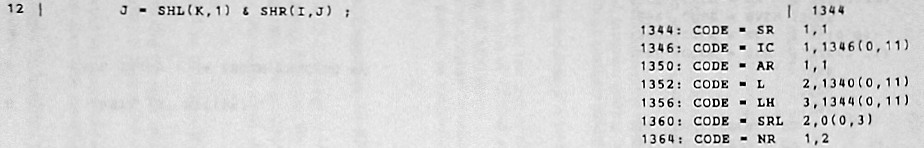

This page is available under the Creative Commons No Rights Reserved License
Last modified by Ronald Burkey on 2026-02-07

Aside: For example, the previous attempt best-known to me of a modern XPL compiler is Daniel Weaver's XPL-to-C translator. Alas, it is incapable of compiling Intermetrics's extended form of XPL.But times have changed. We sometimes will need to distinguish between the standard XPL language of A Compiler Generator and the extended XPL language of Intermetrics in our discussion. When we do need to distinguish, I'll call that extended Intermetrics language "XPL/I".
Aside: In case you're wondering, there is no known surviving copy of Intermetrics's own XPL/I compiler. In fact, there is reason to believe that it was intentionally destroyed. (Prove me wrong, please!) If it had survived, however, I presume it would have been written in standard XPL and itself compiled by a standard XPL compiler on an IBM 360 computer.Inconveniently, the differences between the standard XPL language and XPL/I are not fully documented. Or perhaps more accurately, if they are fully documented, then that documentation has either not survived or else has not made its way into my hands. Section 13 of IR-182-1, does describe some (but not all) of the known differences. It is also true that the specification of standard XPL in A Compiler Generator, is perhaps not 100% complete or perfect, and much that is unsaid (or underemphasized) in it relies on the tribal knowledge of the intended audience at the time of publication ... tribal knowledge from a tribe which has today essentially vanished.
Aside: XCOM-I itself is written in the Python 3 language, and getting XCOM-I to run on your computer is dead simple: Just install Python 3, copy XCOM-I onto your computer, add it to your PATH, and you're ready to go! Setting up your computer to compile the C code is something else, though. Once again it's dead simple, if you have the common C compiler known as gcc. But it's not so simple on (say) Microsoft Windows where most people use the far-less-compatible Visual Studio system. And that's a lot of people. So let's put the installation problem aside for a few minutes and come back to it a little later.On a properly-set-up computer, compiling an XPL or XPL/I program is quite simple. Suppose we have an XPL program called HELLO.xpl whose contents are this:
To compile it, we do this:OUTPUT = 'Hello, world!';
EOF
To run the compiled program, you could do this:XCOM-I.py --xpl HELLO.xpl
make -C HELLO.build
giving output that looks like this:./HELLO
Note, by the way, that on most platforms there won't be be a line feed after the final exclamation point, so when your command-line prompt reappears, it will immediately follow the ! rather than being on a separate line.PAGE 1
Hello, world!
The command "-rw-rw-r-- 1 rburkey rburkey 11207 Aug 12 07:23 COMPACTIFY.c
-rw-rw-r-- 1 rburkey rburkey 1730 Aug 12 07:23 configuration.h
-rw-rw-r-- 1 rburkey rburkey 16921 Jul 7 10:50 debuggingAid.c
-rw-rw-r-- 1 rburkey rburkey 4269 Aug 5 09:01 inline360.c
-rw-rw-r-- 1 rburkey rburkey 1195 Aug 5 09:01 inline360.h
-rw-rw-r-- 1 rburkey rburkey 1835 Aug 12 07:23 main.c
-rw-rw-r-- 1 rburkey rburkey 4545 Aug 10 17:07 Makefile
-rw-rw-r-- 1 rburkey rburkey 24759 Aug 12 07:23 memory.c
-rw-rw-r-- 1 rburkey rburkey 883 Aug 12 07:23 procedures.h
-rw-rw-r-- 1 rburkey rburkey 161 Aug 12 07:23 resetAllReentryGuards.c
-rw-rw-r-- 1 rburkey rburkey 125864 Aug 9 13:52 runtimeC.c
-rw-rw-r-- 1 rburkey rburkey 18037 Jul 18 10:52 runtimeC.h
make -C HELLO.build"
simply compiles the C code in HELLO.build, and moves the executable
(also called "HELLO" or in Windows, "HELLO.exe") up into the current
working directory after it builds it. But the executable
doesn't have to be there; you can move it somewhere else
before running it, and even delete the HELLO.build directory or the
current working directory completely.--xpl,
incidentally, wasn't necessary for HELLO.xpl. You can see all
of the available command-line switches withIn particular, the switchXCOM-I.py --help
--xpl
simply informed the compiler that the source code was standard XPL
rather than XPL/I. XPL/I is the default. But HELLO.xpl
is a perfectly-valid XPL/I program too, so we could just have
omitted --xpl with no
problem. That doesn't mean that an identical result is
produced, though! For example, if we left off the --xpl switch, we might see the
following messages when we ran XCOM-I:Those aren't errors or warnings, but are instead informative messages indicating that certain XPL/I procedures implicitly imported by the compiler hadn't been needed, and thus were being discarded. Whereas the compiler wouldn't have tried to import these procedures in the first place if compiling standard XPL. You'd also find that the contents of the HELLO.build directory were quite different as well:No code is generated for the following PROCEDURE(s):
Not called: DESCRIPTORuMONITOR
Not called: uRECORDuCONSTANT
Not called: uNEEDMOREuSPACE
Not called: uRECORDuSEAL
Not called: uRECORDuUNSEAL
Not called: uRECORDuGROUPHEAD
Not called: uRECORDuCOORDINATED
No code is generated for the following PROCEDURE(s):
Not called: uINCREASEuRECORD
Not called: uALLOCATEuSPACE
No code is generated for the following PROCEDURE(s):
Not called: uATTACHuRECORD
Not called: uGETuSPACE
Not called: uHOWuMUCH
No code is generated for the following PROCEDURE(s):
Not called: uFINDuFREE
No code is generated for the following PROCEDURE(s):
Not called: uSTEAL
Not called: uMOVEuRECS
The way XCOM-I operates, each XPL-rw-rw-r-- 1 rburkey rburkey 2890 Aug 12 07:52 uACTIVEuDESCRIPTORS.c
-rw-rw-r-- 1 rburkey rburkey 2040 Aug 12 07:52 uATTACHuBLOCK.c
-rw-rw-r-- 1 rburkey rburkey 1485 Aug 12 07:52 uATTACHuBLOCKxJOIN.c
-rw-rw-r-- 1 rburkey rburkey 1086 Aug 12 07:52 uCHECKuFORuTHEFT.c
-rw-rw-r-- 1 rburkey rburkey 21641 Aug 12 07:52 COMPACTIFY.c
-rw-rw-r-- 1 rburkey rburkey 1747 Aug 12 07:52 COMPACTIFYxADDuDESC.c
-rw-rw-r-- 1 rburkey rburkey 1711 Aug 12 07:52 configuration.h
-rw-rw-r-- 1 rburkey rburkey 16921 Jul 7 10:50 debuggingAid.c
-rw-rw-r-- 1 rburkey rburkey 1330 Aug 12 07:52 uDETACHuRECORD.c
-rw-rw-r-- 1 rburkey rburkey 10136 Aug 12 07:52 uFREEBLOCKuCHECK.c
-rw-rw-r-- 1 rburkey rburkey 1157 Aug 12 07:52 uFREEBLOCKuCHECKxADDRESSuCHECK.c
-rw-rw-r-- 1 rburkey rburkey 4322 Aug 12 07:52 uFREEBLOCKuCHECKxBLKPROC.c
-rw-rw-r-- 1 rburkey rburkey 4269 Aug 5 09:01 inline360.c
-rw-rw-r-- 1 rburkey rburkey 1195 Aug 5 09:01 inline360.h
-rw-rw-r-- 1 rburkey rburkey 7047 Aug 12 07:52 main.c
-rw-rw-r-- 1 rburkey rburkey 4545 Aug 10 17:07 Makefile
-rw-rw-r-- 1 rburkey rburkey 31342 Aug 12 07:52 memory.c
-rw-rw-r-- 1 rburkey rburkey 1692 Aug 12 07:52 uMOVEuWORDS.c
-rw-rw-r-- 1 rburkey rburkey 1176 Aug 12 07:52 uPREVuFREEBLOCK.c
-rw-rw-r-- 1 rburkey rburkey 1142 Aug 12 07:52 uPREVuRECORD.c
-rw-rw-r-- 1 rburkey rburkey 5236 Aug 12 07:52 procedures.h
-rw-rw-r-- 1 rburkey rburkey 2419 Aug 12 07:52 uRECORDuFREE.c
-rw-rw-r-- 1 rburkey rburkey 1597 Aug 12 07:52 RECORDuLINK.c
-rw-rw-r-- 1 rburkey rburkey 3990 Aug 12 07:52 uREDUCEuBLOCK.c
-rw-rw-r-- 1 rburkey rburkey 652 Aug 12 07:52 resetAllReentryGuards.c
-rw-rw-r-- 1 rburkey rburkey 2362 Aug 12 07:52 uRETURNuTOuFREESTRING.c
-rw-rw-r-- 1 rburkey rburkey 6157 Aug 12 07:52 uRETURNuUNUSED.c
-rw-rw-r-- 1 rburkey rburkey 125864 Aug 9 13:52 runtimeC.c
-rw-rw-r-- 1 rburkey rburkey 18037 Jul 18 10:52 runtimeC.h
-rw-rw-r-- 1 rburkey rburkey 475 Aug 12 07:52 uSPACEuROUND.c
-rw-rw-r-- 1 rburkey rburkey 2023 Aug 12 07:52 uSPMANERR.c
-rw-rw-r-- 1 rburkey rburkey 7067 Aug 12 07:52 uSQUASHuRECORDS.c
-rw-rw-r-- 1 rburkey rburkey 4714 Aug 12 07:52 uTAKEuBACK.c
-rw-rw-r-- 1 rburkey rburkey 1466 Aug 12 07:52 uUNUSEDuBYTES.c
PROCEDURE,
even if its definition is embedded in another PROCEDURE,
is given its own dedicated C file. Our simple HELLO.xpl
program didn't have even a single PROCEDURE
in it, though the compiler did implicitly import a number of support
procedures such as COMPACTIFY,
so you can see that a COMPACTIFY.c file has been generated. COMPACTIFY, as it happens, has
an embedded PROCEDURE
called ADD_DESC.
That's where the file COMPACTIFYxADD_DESC.c comes from; the little
"x" indicates the embedding.--xpl
switch, the C file that most-directly relates to HELLO.xpl is
main.c, which looks like this:The part I've highlighted in green is the only part that directly relates to HELLO.xpl. All of the rest is overhead related to modeling the IBM 360 computing environment in C. The functions/*
File main.c generated by XCOM-I, 2024-08-12 08:01:10.
XPL/I source-code files used: XPL.LIBRARY.xpl HELLO.xpl.
To build the program from the command line, using defaults:
cd HELLO/
make
View the Makefile to see different options for the `make`
command above. To run the program:
HELLO [OPTIONS]
Use `HELLO --help` to see the available OPTIONS.
*/
#include "runtimeC.h"
// clang-format off
/*
*** Memory Map ***
Address (Hex) Data Type Variable
------------- --------- --------
1318 (000526) BASED userMemory
1346 (000542) BASED privateMemory
1376 (000560) FIXED COMPACTIFYxI
1380 (000564) FIXED COMPACTIFYxJ
1384 (000568) FIXED COMPACTIFYxK
1388 (00056C) FIXED COMPACTIFYxL
1392 (000570) FIXED COMPACTIFYxND
1396 (000574) FIXED COMPACTIFYxTC
1400 (000578) FIXED COMPACTIFYxBC
1404 (00057C) FIXED COMPACTIFYxDELTA
1408 (000580) BIT(16) COMPACTIFYxDX(500)
2412 (00096C) FIXED COMPACTIFYxMASK
2416 (000970) FIXED COMPACTIFYxLOWER_BOUND
2420 (000974) BIT(1) COMPACTIFYxTRIED
*/
// clang-format on
int
main(int argc, char *argv[])
{
// Setup for MONITOR(6), MONITOR(7), MONITOR(21). Initially,
// entire physical memory is a single pre-allocated block.
MONITOR6a(USER_MEMORY, PHYSICAL_MEMORY_LIMIT, 0);
MONITOR6a(PRIVATE_MEMORY, PRIVATE_MEMORY_SIZE, 0);
if (parseCommandLine(argc, argv)) exit(0);
static int reentryGuard = 0;
reentryGuard = guardReentry(reentryGuard, "main");
// OUTPUT = 'Hello, world!'; (0)
{
descriptor_t *stringRHS;
stringRHS = cToDescriptor(NULL, "Hello, world!");
OUTPUT(0, stringRHS);
stringRHS->inUse = 0;
}
cToDescriptor and OUTPUT are part of XCOM-I's
runtime library.On a Mac, you will need to install Xcode command-line
tools before doing anything else. If you instead want
to install the entirety of Xcode, I'm sure that's fine
too, but the only thing you'll actually need is the much-smaller
package of command-line tools. Note that my very old Mac (Xcode
4.6) hasn't been updatable for a long time now, but apparently the
instructions you'll find throughout this page do work on Xcode
14.2 as well; whether they work on the current version of Xcode,
I cannot say.
On Linux, you usually don't have to go out of your way to install
a C compiler, but gcc or alternately clang will be
available from your package repository if you do need to
explicitly install either or both of them.
git pull":git clone --depth=1 https://github.com/virtualagc/virtualagc.git
- Installation is easy on Linux (at least on Linux Mint), because clang-format is in the official package repositories.
- On Mac OS, clang-format is apparently not included in Xcode. You can do this: Install homebrew, if you don't already have it. Then use the command "
brew install clang-format".
Cross-compiling XPL files on Linux or Mac OS to create EXE files
for Windows seems like a niche option. In fact, probably
nobody but me would be interested, and I'm only interested because
it saves me the trouble of firing up a Windows virtual machine to
make EXE files for the HAL/S compiler! But even if
it's just for myself, I need to write down how to set it up, so
here are the instructions. Basically, you just need to
install a C cross-compiler (mingw-w64) and a Windows emulator
(WINE).
First, you have to install XCOM-I as described in the
preceding section.
In Linux (at least Linux Mint), you should install mingw-w64
using your usual package manager. Even if WINE is available
in your package manager, though, I might suggest installing it directly
from the WineHQ.org, in order to get a better outcome.
(For me, for example, that's the difference between WINE 6 and
WINE 9.)
For relatively-new Mac OS versions, though, this should
work: First, install macports.
Then do this:
sudo port install mingw-w64 wine-stable
Aside: As it turns out, my mid-2007 Mac Mini (Mac OS Lion) isn't "relatively new", and thus the steps just mentioned didn't work for me. Nor did the seemingly very-attractive alternative of installing llvm-mingw in place of mingw-w64. And as for WINE, its wiki says explicitly that it works only for Mac OS Catalina or later. Oh well, no great loss! I doubt that many Mac users want to build Windows EXE files anyway.
The problem in Windows is not XCOM-I per se,
which works as-is, but rather to set up some kind of
reasonably-compliant environment for compiling the C files
produced by XCOM-I. That's more effort in Windows
than in Linux or Mac OS, since you generally don't have to do
anything to achieve it in Linux or Mac OS anyway.
Aside: A choice that will likely be obvious to most people is to use the Windows Subsystem for Linux (WSL). I have been unable to try it. I purchased Windows 11 to do so, but I'm running Windows 11 in a virtual machine myself, and it turns out that you cannot run WSL on Windows inside of a virtual machine. Too bad, though hardly surprising! If you try WSL on a physical machine and make it work, let me know.At any rate, I'll be offering you two choices of how to install. My recommended choice is to work with something called MSYS2, which is a development environment that's very Linux-like, and includes many of the same development tools that Linux provides. I'll also offer a way to use Visual Studio instead, though you'll still have to end up installing so many Linux-like tools that it's not much (if any) saving of effort. But it's your choice.
pacman -S mingw-w64-ucrt-x86_64-gcc make grep diffutils python3python3-pipgit clang
git pull":git clone --depth=1 https://github.com/virtualagc/virtualagc.git
nano ~/.bashrc".
Google how to permanently change the PATH in Linux if you're
unsure what to do. Afterward, you will need to exit MSYS2
and rerun it to see the change take effect.It's worth noting that if you followed these instructions to the
letter, then your "home directory" in MSYS2 will probably be
something like C:\msys64\home\USERNAME, whereas your home
directory for a normal command-line would be c:\users\USERNAME.
That's good to keep in mind if you need to transfer any files in
or out of there!
Warning: I have never used Visual Studio prior to this, or if I have then it was so long ago I no longer remember doing so. Besides which, for XCOM-I I'm only using Visual Studio's command-line tools rather than its Integrated Development Environment (IDE). The upshot of this that you shouldn't interpret my giving you Visual Studio instructions as meaning you're going to get the wonderful integration into Visual Studio that you might dream of. You might, but you'll have to work it out yourself!
Note that almost everything I'm going to tell you to do, either
here in the setup, or elsewhere on the page, is done from what's
called the Developer Command Prompt for Visual Studio, which you
can run from the Windows Start menu if you have Visual Studio
installed. You won't be working from a normal
(non-developer) command prompt most of the time. I think the
main reason you have to do this is that the C compiler (cl)
is in its PATH, but not in the PATH in a normal command
prompt. You'll have to 'cd' to some other
directory, though, to get anything done, since you'll have no
permissions to actually modify anything in the working directory
this plunks you into. Isn't that a fun feature? It's
your own choice, of course, but perhaps you could go to your
normal command-line home directory.
Any invocations of make I instruct you to use will already have taken care of this for you.python XCOM-I.py ...
PYTHONUTF8=1
to enable Python's UTF-8 processing ability. build_w32.bat.
This creates the file gnumake.exe in the subdirectory called
WinRel/.make -v.We can do a very quick test of your setup and of XCOM-I itself by compiling and running the HELLO.xpl program I used as an example earlier.
Do the following:
LinuxOpen a "terminal" (i.e., a command line). Then:mkdir ~/temp |
Mac OSOpen a "terminal" (i.e., a command line). Then:(Omitmkdir ~/temp --pp if clang-format not
installed.) |
Build/Run Windows EXE File in Linux or Mac OSOpen a "terminal" (i.e., a command line). Then:Copy HELLO.exe to Windows or run on Linux with WINE:mkdir ~/temp export WINEDEBUG=-all |
WindowsOpen an MSYS2 command line. Then:Or from a Visual Studio developer command line,mkdir ~/temp md temp |
--pp
option: This "pretty prints" the C-language files produced
by XCOM-I, so that the indentation is nicer, the code
doesn't trail out of view past the right-hand margin, and so
on. On the other hand, it may also mess up column
alignment in comments. You pays your money and takes your
chances! In terms of how the compiled program behaves, it
makes no difference whatsoever.-s in the make
command: Optional. It just prevents make
from giving you a running commentary on whatever commands it
happens to be running. No big deal! CC=clang EXTRA=-w in
the Mac OS make command: Probably not
necessary. The same make command as for Linux
could have been used. And clang is the default
anyway in Mac OS anyway, I think, so adding CC=clang just makes it
explicit. In fact, to force it to use gcc, you'd
have to use the command make -s
CC=gcc EXTRA="-w -std=c99" -C HELLO.build.
In my experience, clang produces a lot of pointless (and
incorrect) warning messages, which is why I disable all of the
warnings by adding EXTRA=-w.
RDYNAMIC= in the
Windows make command: Disables a compiler command-line
option that the Windows version of gcc doesn't support.These were "regression tests", in the sense that the various programs mentioned in the output messages had been performed at some time in the past, and these new runs of those same programs were compared against those earlier outputs. In other words, they test expectations rather than accuracy. By the way, several of the programs, including those label Example-xxxx and ANALYZER come straight out of A Compiler Generator. The ANALYZER.xpl program is itself quite a significant chunk of code, in that what it does is to accept a BNF grammar for a language and generate a table-driven parser for the language, in essence building a compiler for the language; in the regression test, it generates a parser for a simple language called SKELETON.make -s -C Example-6.18.3.build
make -s -C Example-6.18.4.build
make -s -C Example-6.18.5.build
make -s -C Example-6.18.6.build
make -s -C breakCharactersDemo.build
make -s -C ANALYZER.build
make -s -C SKELETON.build
make -s -C bitsizeDemo.build
make -s -C bitsizeDemoCommon.build
make -s -C bitsizeDemoCommonIn.build
Files bitsizeDemo.build/out.txt and Tests/bitsizeDemo.regression are identical
Files bitsizeDemo.build/xxxxA and bitsizeDemoCommon.build/xxxxA are identical
Files bitsizeDemoCommon.build/xxxxA and bitsizeDemoCommonIn.build/xxxx are identical
Files bitsizeDemoCommon.build/COMMONa.out and bitsizeDemoCommonIn.build/COMMONa.out are identical
Files Example-6.18.3.build/out.txt and Tests/Example-6.18.3.regression are identical
Files Example-6.18.4.build/out.txt and Tests/Example-6.18.4.regression are identical
Files Example-6.18.5.build/out.txt and Tests/Example-6.18.5-and-6.regression are identical
Files breakCharactersDemo.build/out.txt and Tests/breakCharactersDemo.regression are identical
Files ANALYZER.build/out.txt and ANALYZER.build/out.regression are identical
======================== All regression tests passed! ========================
XPL or XPL/I programs compiled by XCOM-I are native to
your own local computer system, and if XCOM-I has done its
job properly, there should be no lingering dependencies on the IBM
System/360 in the compiled programs.
Nevertheless ... XPL was designed to be a program for
generating compilers, so a lot of legacy XPL or XPL/I code is
actually the source code of a compiler for one or another computer
language, and those compilers invariably spit out IBM System/360
object code. Suppose for example that we had an XPL program called
X that was a compiler for a programming language called
"X". It's true that if we compile the source code for X
with XCOM-I that we'll get executable code for X
that runs on our native Linux/Mac/Windows computer (rather than,
say, an IBM 360). But it's also true that if we use that
native-Linux, Mac, or Windows version of X to compile
source-code in the X language, say for a program called Y,
then the output of the compiler will still be an object file for
the IBM System/360. So we still wouldn't be able to run program Y
on our native computer, and would still need an IBM System/360 to
run Y.
Which means that even with XCOM-I in hand, it's still
very useful to have an IBM System/360 emulator in which to run not
the programs produced by XCOM-I, but the programs
produced by the compilers compiled by XCOM-I. Yes, I
know that makes your head swim a bit. Well, wait until you
get to the next section.
If you're already an IBM System/360 expert or even someone who
wants to be an IBM System/360 user, then perhaps an IBM System/360
emulator such as Hercules might work well
for you. As for myself, having tried to figure out without success
how to use Hercules, I have to concede that I'm neither an expert
nor want to be one, and thus I have no desire to confront that
learning curve. I'd much prefer a lightweight IBM
System/360 emulator, with essentially no learning curve at all.
(And a lightweight emulator is far more in line with Virtual AGC's
goal of integrating Space Shuttle computing support into
spaceflight simulation programs than a full-blown mainframe
emulator would be anyway.)
As it happens, there is an available lightweight IBM
System/360 emulator. This emulator, called sim360, was
written by the same Daniel Weaver who I've also mentioned earlier
as the author of an earlier XPL-to-C translator for standard XPL.
You can find the source code for sim360 as slightly
modified for my purposes here in the
Virtual AGC software repository, but the
official place to get the most up-to-date version is Dan's own
site. If you follow the hyperlink to Dan's site,
you'll find that it's disguised as a Pascal compiler, which it
is. But don't be confused: There's an IBM System/360
emulator in there!
Aside: There is a limit, of course, to how "lightweight" an IBM 360 emulator can be while still remaining useful. To run programs originally written in XPL or XPL/I, for example, just emulating the CPU's instruction set is not enough. Such XPL or XPL/I programs depend on there being an operating system in place to allow operations like inputting data (from a files or keyboards) or outputting data (to a displays, printers, or files) to occur. But an XPL program doesn't actually interact directly with the operating system. Instead, an XPL program expects that there's a separate program called the submonitor running along side of it, and the XPL program makes its low-level requests for input, output, allocation of memory, and so on, to this submonitor program. In fact, there will be a whole section later on that describes XPL's built-in functions, some of which rely on the submonitor, as well as another section covering theMONITORprocedure, all of whose functionality comes from the submonitor. But the point is that to be useful to us, a lightweight emulator like sim360 must provide enough submonitor capability to respond correctly when the XPL program makes these requests of the submonitor, even though the IBM 360 operating system is entirely absent. Fortunately, sim360 does so. Thanks, Dan!
By the way, if in place of sim360 you were to use Hercules, an emulation of the XPL or XPL/I submonitor would not be built into it. Rather, you would have to assemble the IBM System/360 Basic Assembly Language (BAL) source code for the submonitor, and presumably contrive the JCL needed to run the submonitor program along-side your compiled XPL program on the emulator. Fortunately, although we don't need it if we are using sim360, we do have source code for the submonitor:
- For A Compiler Generator's XCOM, it's XMON.bal.
- For SUNY's XCOM 4.5, which we've not discussed yet but which we'll get to in the next section, it's the slightly-different XPLSM.bal.
- For Intermetrics's unavailable XCOM, it's the collection of BAL source-code files known as MONITOR.ASM.
What we don't have in this scenario is a BAL assembler, nor an IBM System/360 linker program, so in spite of this wealth of source code for submonitors, in the end we still have no way to build the submonitor programs that I'm aware of.
Let's build sim360. Do this:
LinuxOpen a "terminal" (i.e., a command line). Then:Or:cd virtualagc/XCOM-I make CC=clang EXTRA=-w sim360 |
Mac OSOpen a "terminal" (i.e., a command line). Then:Or:cd virtualagc/XCOM-I make CC=gcc EXTRA="-w -std=c99" sim360 |
Build Windows EXE File in Linux or Mac OSOpen a "terminal" (i.e., a command line). Then:Or:cd virtualagc/XCOM-I make CC=i686-w64-mingw32-gcc EXT=.exe sim360.exe |
WindowsOpen an MSYS2 command line. Then:Or:cd virtualagc/XCOM-I Or from a Visual Studio developer command line,make CC=clang EXTRA=-w sim360 make CC=cl sim360.exe |
(If you're trying to run sim360.exe in Linux or Mac OS, try this instead: "sim360 -o0ET stdout -i0AT stdin Tests/HELLO.obj
wine sim360.exe -o0ET stdout
-i0AT stdin Tests/HELLO.obj".) The command-line switches for sim360 probably look mysterious, but they're not so bad. You can see a full list of command-line options with the command "Hello, world!
sim360
--help", but what the mysterious switches in the
example above mean is this:-o0ET stdout: Causes
any output to "device 0" from the IBM 360 program to be routed
to stdout, and
automatically translate it from EBCDIC to ASCII.-i0AT stdin: Causes
input from "device 0" into the IBM 360 program to be routed from
stdin, and
automatically to translate it from ASCII to EBCDIC.| Designation |
Notes |
Where I Got it From |
Legacy XPL Source Code for
XCOM Proper |
Legacy XPL Source Code for
Library |
Legacy IBM 360 Executable |
"Modern" Patch(es) for use
with XCOM-I |
|---|---|---|---|---|---|---|
| XCOM3 |
This is the version of XCOM listed in the
book A Compiler Generator. Printouts from it
identify it as "XCOM III". In reality, there's no way to know if it's identical to the book without comparing it line by line, which I have not done. The notes in the download file state that the files were recovered from a legacy computer tape from the Stanford Computation Center, dated 1969-01-23. The contemporary notes on the tape itself hint that it is the source code from the book, but stop short of saying explicitly that it's the precise version that appears in the book. The contemporary notes further state that "THE BINARY IMAGE OF THE XCOM COMPILER ... [is] THE RESULT OF USING XCOM TO COMPILE ITSELF FROM THE SOURCE CARDS"However, if you run the binary executable (in sim360), its printout says that it was built on May 2, 2001, at 13:40:40.19. I'd suggest it's rare to find files created in 2001 on tapes made in 1969. As a separate matter, if you compile the legacy XCOM3 source code with the legacy XCOM3 executable, you do not get an identical copy of the legacy XCOM3 executable. I'm convinced that a different version of XCOM compiled it. How the resulting 2001 executable made its way onto the 1969 tape, or at least into the download file, I cannot say. |
University
of Toronto XPL page |
XCOM.xpl | XPL.LIBRARY.xpl | XCOM3-20010502.obj |
n/a |
| XCOM45 |
The accompanying notes indicate that this is
from a computer tape from the State University of New York,
Stonybrook. The notes from the tape itself date it
1977-05-22. No information is given about how the binary executable of the compiler was created. Its printout (when run in sim360) identifies itself as "XCOM 4.5", compiled on July 19, 1976, at 21:05:40.16. Fortunately, unlike XCOM3, that's consistent with the date of the tape itself. But as with XCOM3, and for the same reasons, I'm convinced that XCOM45 had not itself been used to compile the XCOM45 binary executable on the tape. |
Dan
Weaver's XPL project |
XCOM4.5.xpl | XPLIB4.5.xpl | XCOM45-19760719.obj | patch0.c |
Aside: To be clear, XCOM-I is not self-compiling. It's written in Python, not XPL. Rather, XCOM3 and XCOM45 are what I expect to be self-compiling once they're bootstrapped. In the bootstrapping scenario, XCOM-I is that other compiler used to compile the initial version of XCOMx before an XCOMx executable exists. Except that unlike the normal bootstrapping scenario, XCOM-I, XCOM3, and XCOM45 are full-blown compilers rather than being the initial weak-and-feeble versions thereof.Also to be clear, the use case for XCOM-I I'm personally interested in is building HAL/S-FC and then forgetting that XPL and XCOM-I even exist.
| Compiler Variant |
Compiler's Own Source-Code Files |
Compiler Compiled With |
Compiler Runs on IBM 360? |
Compiler Runs on Linux/Mac/Windows |
Source-Code Language and Encoding Accepted By Compiler |
Object Files Directly Output By Compiler |
Encoding of Textual I/O When Running the Output Object Files |
|---|---|---|---|---|---|---|---|
| XCOM-I.py |
XCOM-I.py et al. |
n/a |
No |
Yes |
XPL or XPL/I, ASCII (or
UTF-8) coding |
C-language files |
ASCII |
| XCOM3-native |
XCOM.xpl,
XPL.LIBRARY.xpl |
XCOM-I.py |
No |
Yes |
XPL, ASCII coding | IBM 360 load file | EBCDIC |
| XCOM45-native | XCOM4.5.xpl,
XPLIB4.5.xpl |
XCOM-I.py |
|||||
| XCOM3-360.obj |
XCOM.xpl, XPL.LIBRARY.xpl | XCOM3-native |
Yes |
Only under sim360 or similar | XPL, EBCDIC coding | IBM 360 load file | EBCDIC |
| XCOM45-360.obj | XCOM4.5.xpl, XPLIB4.5.xpl | XCOM45-native | |||||
| XCOM3-360A.obj |
XCOM.xpl, XPL.LIBRARY.xpl | XCOM3-360.obj |
Yes |
Only under sim360 or similar | XPL, EBCDIC coding | IBM 360 load file | EBCDIC |
| XCOM45-360A.obj | XCOM4.5.xpl, XPLIB4.5.xpl | XCOM45-360.obj | |||||
| XCOM3-20010502.obj |
XCOM.xpl, XPL.LIBRARY.xpl | n/a | Yes | Only under sim360 or similar | XPL, EBCDIC coding | IBM 360 load file | EBCDIC |
| XCOM45-19760719.obj |
XCOM4.5.xpl, XPLIB4.5.xpl | n/a |
|||||
| XCOM3-360C.obj |
XCOM.xpl, XPL.LIBRARY.xpl | XCOM3-20010502.obj | Yes |
Only under sim360 or similar |
XPL, EBCDIC coding |
IBM 360 load file |
EBCDIC |
| XCOM45-360C.obj |
XCOM4.5.xpl, XPLIB4.5.xpl | XCOM45-19760719.obj |
You may wonder about the messages that some of the files were "within tolerance" for the IBM 360 object files. The object files are, of course, not text files, but rather are non-human-readable binary files. A perfect match would be if the files were the same length, and each byte of one file were identical to the corresponding byte of the other file. So why would it be okay if 1 or 2 bytes (as in the printout above) were different?Bootstrapping XCOM3 -----------------------------------------
Files XCOM3-360.obj and XCOM3-360C.obj match within tolerance (2 <= 4 mismatches)
Cross-comparison to output of legacy compiler successful
Files XCOM3-360.obj and XCOM3-360A.obj match within tolerance (1 <= 4 mismatches)
Bootstrap of XCOM3 successful
Bootstrapping XCOM45 -----------------------------------------
Files XCOM45-360.obj and XCOM45-360C.obj match within tolerance (1 <= 4 mismatches)
Cross-comparison to output of legacy compiler successful
Files XCOM45-360.obj and XCOM45-360A.obj match within tolerance (1 <= 4 mismatches)
Bootstrap of XCOM45 successful
Notice the part I've highlighted in red. The compilation report includes the date and time on which the compiler generating the report was compiled, which means that the compilation date and time must themselves be embedded in the executable of the XPL compiler ... which means that the same XPL compiler, if compiled on two different occasions, would have different timestamps embedded in its two object files. Since a timestamp requires 3 bytes for the time and 3 bytes for the date, that means that up to 6 bytes may differ simply due to an embedded timestamp.XPL COMPILATION---SUNY STONYBROOK---XCOM4.5 VERSION OF JULY 19, 1976. CLOCK TIME = 21:5:40.16.
TODAY IS AUGUST 12, 2024. CLOCK TIME = 15:6:40.38.
1 I /* FIRST WE INITIALIZE THE GLOBAL CONSTANTS THAT DEPEND UPON THE INPUT I 1286
2 I GRAMMAR. THE FOLLOWING CARDS ARE PUNCHED BY THE SYNTAX PRE-PROCESSOR */ I 1286
3 I I 1286
4 I /* XPL PARSING TABLES */ I 1286
5 I I 1286
6 I DECLARE MAXTL LITERALLY '12' ; I 1286
7 I DECLARE MAXNTL LITERALLY '26' ; I 1286
8 I DECLARE STARTSTATE LITERALLY '112' ; I 1286
9 I DECLARE NT LITERALLY '42' ; I 1286
10 I DECLARE NSY LITERALLY '92' ; I 1286
11 I DECLARE NSTATES LITERALLY '228' ; I 1286
12 I DECLARE V(92) CHARACTER INITIAL ( '< DUMMY >', '<', '(', '+', '|', I 1286
⋮
TOTAL TIME IN COMPILER 0:0:1.51.
SET UP TIME 0:0:0.03.
ACTUAL COMPILATION TIME 0:0:1.33.
POST-COMPILATION TIME 0:0:0.15.
COMPILATION RATE: 198451 CARDS PER MINUTE.
TIME_OF_GENERATION,
which returns the number of centiseconds since midnight. For XCOM45-360.obj,
that computes to 100*(19*3600+60*53+37.27)=7161727=0x6D477F.
Similarly, for XCOM45-360A.obj,
100*(17*3600+5*60+6.24)=6150624=0x5DD9E0. Both perfectly match
the screenshot above. (Incidentally, IBM 360 programs all
store their integer data in big-endian form, so that the
most-significant bytes come first in memory.) Q.E.D.Aside: By the way, XCOM3 has plenty of quirks specific to it, quite aside from any quirks XPL more-generally may have as a computer language. XCOM3-native and XCOM3-360 inherit these quirks. I mention this just in case you become excited about using XCOM3-native and start writing new XPL programs for it! Here are a few quirks I've noticed:
- It only accepts upper-case for identifiers and keywords ... in spite of the fact that XPL is case-insensitive and that every speck of XPL source code in A Compiler Generator is printed in lower case!
- It requires an
EOFtoken at the end of the source code.
- It won't allow you to have two division operations (including
MODas a division) in the same statement, instead emitting an error message saying that it requires a "busy register".
But a test is a test, right? You may notice that HAL/S bears a creepy similarity to XPL/I. The similarity is superficial, and the two languages are quite different in reality. (But it fooled me at first!) Here are the instructions:DEBUG ¢0¢3¢4¢5¢6¢8¢9¢C¢D¢E¢F H(202)HELLO: PROGRAM;DECLARE I INTEGER;DECLARE MY_NAME CHARACTER(20) INITIAL('RON BURKEY');DECLARE INTEGER, J;REPLACE PRINTER BY "6";WRITE(PRINTER) 'THE BEGINNING';DO FOR I = 1 TO 5;WRITE(PRINTER) I, 'HELLO, WORLD!';DO FOR J = 2 TO 8 BY 2;WRITE(PRINTER) J, MY_NAME, 'SAYS ISN''T THIS FUN?';END;END;WRITE(6) 'THE END';CLOSE HELLO;
Linux
Open a "terminal" (i.e., a command line). Then: |
Mac OSOpen a "terminal" (i.e., a command line). Then:Or:cd virtualagc/yaShuttle/"Source Code"/PASS.REL32V0 make -s XEXTRA=--quiet CC=gcc EXTRA="-w -std=c99" regression |
Build/Test Windows EXE Files in Linux or Mac OSOpen a "terminal" (i.e., a command line). Then:cd virtualagc/yaShuttle/"Source Code"/PASS.REL32V0 |
WindowsOpen an MSYS2 command line. Then:Or from a Visual Studio developer command line,cd virtualagc/yaShuttle/"Source Code"/PASS.REL32V0 make -s XEXTRA=--quiet CC=cl regression |
Aside: By the way,If everything was found to be successful, you should see messages that terminate with lines similar to these:XEXTRAis something you can use on a make command line to pass extra options to XCOM-I, whileEXTRAcan be used to pass extra options to the C compiler. In particular, the--quietinXEXTRAis a way to eliminate certain informative messages from XCOM-I that (after seeing them a hundred times) I personally no longer find quite so informative and would rather not see any longer.
You should also find 5 new executable files:⋮Warning: Yes, this means that the regression test has passed, which is very comforting! But at least as of this writing, in spite of all this testing, there are still some cases in which HALSFC's behavior is not entirely correct, which probably implies that XCOM-I is still not perfect either. Alas! A work in progress is a work in progress is a work in progress ... by which I mean XCOM-I. You pays your money and you takes your chances. When I think XCOM-I is fully perfected, at least insofar as HALSFC is concerned, I'll let you know.
Processing regression/HELLO ==========================================
Comparing ...
Files cA.rpt and pyA.rpt are identical
Files FILE1.bin and halmat.bin are identical
Files LISTING2.txt and listing2.txt are identical
Files pass1-new.rpt and pass1-old.rpt are identical
Files halmat.bin and regression/halmat.bin are identical
Files litfile.bin and regression/litfile.bin are identical
Files listing2.txt and regression/listing2.txt are identical
Files COMMON-PASS1-new.out and COMMON-PASS1-old.out are identical
Files optmato.bin and regression/optmato.bin are identical
Files auxmata.bin and regression/auxmata.bin are identical
Files pass2-new.rpt and pass2-old.rpt are identical
Files cards2.bin and regression/cards2.bin match within tolerance (17 <= 18 mismatches)
Files cards2.bin and regression/cards2.bin match
Files COMMON-PASS2-new.out and COMMON-PASS2-old.out are identical
Regression test passed.
Aside: This isn't actually a full build of HAL/S-FC, but merely of the compiler passes needed to run the regression test. You could have gotten the additional passes PASS3 and PASS4, along with the BFS versions of the passes (discussed later), namely PASS1B[.exe], OPTB[.exe], PASS2B[.exe], and PASS3B[.exe], by using the make targets "These passes of HAL/S-FC are chained together to perform a full compilation of a HAL/S program. For those passes having two programs listed, (xxxx and xxxxB), the B version is used when compiling Backup Flight Software, whereas the non-B version is used for compiling the Primary Flight Software; if there's no B version, then the non-B version is used for both primary and backup. I'd note that there're something like 700K lines of XPL/I code in this compilation, so it's a non-negligible test of the XPL/I compiler ... assuming of course, that the HAL/S compiler actually works correctly once installed.all regression" rather than just "regression" in the instructions above.
It is a truth universally acknowledged that there is no
satisfactory introductory information available concerning
programming in XPL. Or at least, it would be
universally acknowledged if anybody had ever heard of XPL and
wanted to create new XPL programs.
The best you can do, generally speaking, is to purchase an
out-of-print, used copy of the book A Compiler Generator.
If you do, you'll find a book that's densely packed with
information, but that that information is the source code for an
XPL compiler (written in XPL), lots of BNF descriptions of the
language, lots of theory on how to write a compiler-generator
program, and very little of direct interest to a programmer who
wants to come up to speed quickly on how to write or understand a
program written in XPL. Not to mention the fact — though I am
mentioning it! — that some of the most-critical counter-intuitive
information is buried in easy-to-miss, easy-to-misunderstand
comments made in passing, rather than as big, bold-face warnings.
As a bonus, the book provides an index of almost no use at
all to a newby XPL programmer. Beyond the book itself, most
online information about XPL, in my experience, is simple
condensing or other rehashing of A Compiler Generator, and
adds little extra of value in a tutorial sense, since it's almost
never written by anybody actually working with XPL. With
that said, you may find some useful online information in a couple
of places:
And as for Intermetrics XPL/I ... well, from a tutorial
perspective, it's orders of magnitude worse. From the standpoint
of surviving documentation, XPL/I may as well never have
existed at all.
Taking all of that into account, I wish I could provide a full tutorial here how to write XPL or XPL/I programs, similar in nature to Michael Ryer's book Programming in HAL/S. But there's so little to do, and so much time. No, scratch that, the other way around! There's just not enough time, and maybe not enough skill. So for now, I'll just cover some of the quirks of the language(s) that might be unexpected to programmers already skilled in other programming languages. Send in suggestions for improvement, if you like; I'm sure I can use them somehow to make the discussion even worse.
The most basic characteristic of a language is the character set
in which the language is expressed. Above all else, we need
to recognize that IBM 360 computers encoded textual information
using so-called EBCDIC coding, which defined somewhat-different
characters than the ASCII coding common today, as well as entirely
different numerical codes for the characters it did include.
Neither A Compiler Generator nor Intermetrics specifies the character set. I've given it a lot of thought, and my conclusion is that the originally-supported character set was:
<space>
A B C D E F G H I J K L M N O P Q R S T U V W X Y Z
a b c d e f g h i j k l m n o p q r s t u v w x y z
0 1 2 3 4 5 6 7 8 9
_ % + - * . / | & = < > # @ $ , ; : ( ) ' " ! ? [ ] { }
¢ ¬ <eof>
Here, by <space> I mean a space character, and by
<eof> I mean an end-of-file character.
You'll notice that several characters common today were not originally supported, including:
` ~ ^ \
Contrariwise, there are three characters (¢, ¬, and <eof>) that don't exist at all in the 7-bit ASCII character set that's the common core for the character sets typically used today when writing software source code. The first two are EBCDIC characters, while the third isn't even EBCDIC, but merely something (a Hollerith code, I guess) which could be encoded on punchcards. HAL/S-FC somewhat arbitrarily assigned the <eof> character the numerical code 0xFE, which I believe was otherwise unused in the then-available version of EBCDIC.
Therefore, when working with XCOM-I, we can use the
fortunately otherwise-unused ASCII characters in place of the
three unsupported characters:
Aside: The <eof> character — not to be confused with the
EOFtoken that appears at the end of the source code in an XPL or XPL/I program — is an unusual case. It is not a special character in XPL programs. However, it is used as a bookkeeping device by HAL/S compilers, or at least by HAL/S-FC, in padding that the HAL/S compiler automatically appends to a stream of input HAL/S source code. Thus we have to have a way of representing it in the XCOM-I framework, even though it's not a character anyone would ever have occasion to use in either an XPL or HAL/S source-code file, unless that file was itself part of a HAL/S compiler! To the best of my knowledge, <eof> appears only within a single string variable,INPUT_PAD, that occurs in the HAL/S-FC source-code file STREAM.xpl. See the comments forINPUT_PADin STREAM.xpl.
These substitutions allow us to completely translate the original
XPL or XPL/I source code back-and-forth between the original
EBCDIC and ACII without any loss of information, and without
insisting that you adopt any specific "locale" like ISO-8859-15 or
UTF-8 for your computer that's not optimal for your other
(non-XPL'ing) activities. With that said, I suspect that in
most of today's common computer setups, you can probably use ¢ and
¬ in your XPL/I source code if you insist on doing so, but I
neither recommend nor guarantee it.
Aside: All previously-existing XPL or XPL/I source code files I've found, or HAL/S source code for that matter, has already substituted ~ or ^ for ¬ anyway. And indeed, some early HAL/S documentation suggests the former substitution. I suspect that's because some IBM printers at the time printed ~ in place of ¬. But whatever the explanation, the substitutions I'm suggesting are not exactly daring in their originality. As far as the ¢ symbol is concerned, it's not actually used in XPL or XPL/I code, as far as I know, but it is used in HAL/S, so we still need to have a reliable way of dealing with it.
XPL programs are not case-sensitive, except in so far as
the contents of quoted strings are concerned. E.g.,
lower-case or mixed-case symbols are treated as being identical to
their upper-case correspondents, but quoted strings are
case-sensitive.
Aside: Case-insensitive in principle, though as I mentioned earlier, the early XCOM3 compiler ended up being case-sensitive anyway for some reason, at least insofar as XPL keywords were concerned.
Input to an XPL or XPL/I program (via the INPUT
built-in function) is expected to conform to computer
punch-card-like conventions. I.e., input lines are always exactly
80 characters long, and XCOM-I enforces this by truncating
or right-padding input lines as necessary. If the input lines are
longer than 80 columns physically — say, because they have
punch-card sequence numbers in columns 81-88 — the extra columns
are stripped off.
As for the source-code proper, other than being confined to
columns 1-80, it is entirely free-form. I.e., line breaks are
ignored; several statements may exist on the same input card, or
conversely, a single statement may be split across multiple cards.
Even though XPL CHARACTER
strings are limited to 256 characters, there is seemingly no limit
to the length of an XPL statement.
There are hints in the error messages of XCOM3 (and I
believe, in A Compiler Generator text) that some
contemporary computer systems may have treated column 1 specially,
perhaps accepting some kind of non-blank control characters there.
If so, it was a issue outside XCOMx proper and is
irrelevant to XCOM-I. However, you do find that legacy XPL
source code does often begin in column 2 rather than column 1, and
I suspect that this hypothetical column-sensitivity is the reason
for it.
Regarding this column-1 ambiguity, however, there is the
practical question of what to do when a long quoted string is
split across multiple cards. (Yes, that does
happen.) Does column 1 belong to the string or not? In XCOM-I,
I take my cue from XCOM3 source code in this matter: In
spite of the fact that XCOMx's source code
generally avoids column 1 in all other cases, column 1 does
belong to any multi-line quoted strings.
Identifiers cannot begin with a digit, but otherwise consist of any sequence of upper- or lower-case alphanumeric characters, or any of the characters @ _ # $. For example, @_26$8ab# is a legal name for a variable.
Identifiers cannot exceed 256 characters in length.
There are only three basic datatypes:
FIXED is a 32-bit
signed integer. (Stored as 2's-complement, in big-endian
byte order, vs the little-endian byte order used in most
personal computers today.)CHARACTER is a
variable-width character string, with a string-length limited to
256 or less. Strings are stored as a 32-bit unsigned
integer known as a descriptor, paired with a separate
area from 1 to 256 bytes containing the individual characters of
the string, encoded in EBCDIC. The descriptor has 8 bits
specifying the string length (minus 1) and 24-bits providing the
starting memory-address of the character data. The string
descriptor 0x00000000 is a special case, and indicates an empty
string.BIT(n), where
n is from 1 to
2048, is an n-bit
object. The amount of storage varies by the precision:BIT(1) through B(8) are stored in
memory as single bytes.BIT(9) through BIT(16) are stored as
2-byte "half-words".BIT(17) through BIT(32) are stored as
32-bit words.BIT(33) through BIT(2048) are stored
similarly to CHARACTER
variables: There's a 32-bit "descriptor", of which 8 bits is
the number of bytes needed to store all of the bits, minus 1,
and 24 bits area pointer to elsewhere in memory, where the
bytes themselves are stored. Thus, a long BIT(n) like this
uses up 4 bytes for the descriptor, plus ⌊(n+7)/8⌋
bytes (5 for n=33 through 256 for n=2048) for
the data. BIT(n)
datatypes, you might suppose that since one has gone to all the
trouble to define separate datatypes like BIT(1),
BIT(2), ..., BIT(8), that there is some
distinction between them. That they behave differently in some
way. That there's some reason for making such a
distinction. You would be cruelly mistaken, as I was.
There is literally no difference between these 8 datatypes.
Nor is there any distinction between the 8 datatypes BIT(9) through BIT(16). Nor is there
any distinction between the 16 datatypes BIT(17)
through BIT(32).
The distinctions between the BIT(n)
datatypes for n>32
are left as a thought experiment for the reader. Thus we're
left with seemingly ridiculous code, like the following from PASS1
of HAL/S-FC:DECLARE COMPILING BIT(1); ...
IF (COMPILING&"80")^=0 THEN
...
Or in other words, first you declare COMPILING
to have a single bit, and then later you check it to see what the
value of its 8th bit is! This particular morsel of hilarity
caused me months worth of trouble.
The storage formats in memory duplicate those that would have
been expected on an IBM System/360 computer. While the
storage formats are not significant in abstract terms, they'll be
seen to be quite significant in dealing with certain
aspects of HAL/S-FC's source code, such as its so-called
"virtual memory" system, and indeed I think it would be impossible
to run HAL/S-FC unless these underlying IBM 360 storage
formats were used.
A(3)
or B(N). Aside: It's easy to become confused and to imagine (incorrectly!) that you can treat aTheCHARACTERvariable (as opposed to an array ofCHARACTERvariables) as an array itself, in order to access its individual characters. You cannot! In fact, the XPL language does not provide any syntactical means to access individual characters of a string. For that, you must rely on built-in functions provided by the runtime library to directly manipulate memory. The most-direct method is to use theBYTEfunction, which can either retrieve the EBCDIC numerical encoding of an individual character in aCHARACTERvariable, or else to store a new EBCDIC numerical value at a given position in aCHARACTERvariable. Thus if we had aCHARACTERvariableCwhich held the value 'HELLO!', thenBYTE(C, 3)would return 211 (the EBCDIC encoding for the letter 'L'), while the assignment statement "BYTE(C, 3) = 198;" would change the contents ofCto 'HELFO' since 198 is the EBCDIC code for the letter 'F'. That sounds cumbersome, since very few of us have memorized the EBCDIC table, but it's really not. You generally don't have to look up the EBCDIC encoding for anything, because you would actually have programmed operations such as this as "BYTE(C, 3) = BYTE('F');". Another, less-generally-useful method would be to use the built-inSUBSTRfunction to retrieve a specific character position as a newCHARACTERobject of length 1.
BIT(N)
datatype is actually quite problematic. It would be reasonable
to assume that since BIT(N)
seems to represent support for collections of bits, then XPL should
provide some syntactical sugar for reading the values of these bits
or modifying them. For BIT(1)
through BIT(32), you'd be
somewhat correct, in that XPL largely treats these as being
interchangeable with integers (i.e., FIXED),
and automatically converts them back and forth between FIXED. The runtime
library's built-in logical-shift-left and logical-shift-right
functions (SHL and SHR) work just as easily with
them as with the FIXED,
as do the logical operators &,
|, and ¬ (~),
and the relational operators <,
>, =, !=,
>=, and <=. Swell!BIT(32)
through BIT(2048), you
are cruelly disappointed. XPL provides no built-in
methods of working with this data qua bits, beyond the
ability to initialize BIT(N)
variables with data when they're declared. (More on that
later.) As far as actually using this data for anything, there
are no built-in means to do anything at all with that data.
While you can manipulate the data by cobbling together
various runtime-library memory-access functions, A Compiler
Generator gives none of the technical information about the
storage format that would allow you to do so, in so far as I was
able to discover. What do I mean about cobbling
together memory-access functions? Well, suppose that you want
to access bit 43 of a BIT(86)
variable called B.
First, you must know where the data for B
is located in memory. There's a function that can tell you
that. Then you must know which byte in that block contains bit
43. There's no function that tells you that, but if you do
know it somehow then there's a function that gives you the value of
a byte at that address. Then you must know which bit in the
byte corresponds to bit 43. Again, there's no function for
that, but if you know it, then you can use library functions like SHL or SHR,
probably in conjunction with a logical operator like &, to isolate the value of
that bit. If you wanted to change the value of that bit,
different but similar awfulness is involved.BIT data is
packed into memory. It's hard to write unambiguously about
these matters, but I'll try to do so using the following
concepts: An n-bit value, when written out in
human-readable form has a leftmost bit and a rightmost
bit; meanwhile, a block of m bytes in memory has a byte
that's at the lowest address, a byte at the highest
address, and within each byte has a most-significant bit and
a least-significant bit. With those ideas in mind,
here's how XPL packs the various BIT
datatypes into memory:BIT(1) through BIT(32): The rightmost bit
corresponds to the least-significant bit in the byte at the
highest address.BIT(32) through BIT(2048): The leftmost
bit corresponds to the most-significant bit in the byte at the
lowest address.Aside: Since I say that the bit-packing is undocumented, what's my justification for claiming that what I said just above is true? The short answer is trial-and-error! The longer answer is that one of the intermediate milestones in trying to get XCOM-I to the point of being able to compile the original source code for HAL/S-FC was first to be able to compile XCOM3 and run it with a verifiably correct result. (Recall "insane bootstrapping" from earlier.) But I couldn't get it to work! After messing with it for days on end, I eventually got the answer in a dream, and then experimented with a couple of different bit-packing schemes before finally getting XCOM3 to run properly. The packing scheme I describe above is the one that worked.
Aside: If all that wasn't bad enough, there's also a trap waiting for you if you're already used to doing bit manipulations with logical operators and shifts in other computer languages. This trap is in the behavior of conditional tests in XPL'sBut enough of these measlyIFandDO WHILEstatements. Conditional tests in these statements depend only on the least significant bit; i.e., it as if any conditional test involves an extra "& 1" operation that you can't see. Thus if you wanted to detect (say) that bit 3 of theBIT(5)variableAwas set, a statement like "IF A & 8 THEN ...;" wouldn't help you at all, since the implicit "& 1" in the conditional would cause the test always to fail! You would instead need to use a shift-right operation, such as "IF SHR(A, 3) THEN ...;".
BIT-based
frustrations!What is this little example supposed to do? First, it declares 3 variables of thedeclare x fixed, y fixed, z fixed;
x(0) = 1;
x(1) = 2;
x(2) = 3;
output = x(0) || ' ' || x(1) || ' ' || x(2);
output = x || ' ' || y || ' ' || z;
fixed
datatype; fixed means
that x, y, and z
are 32-bit signed integers. It then proceeds to use x as if it were a
three-element array, though x
wasn't declared that way, assigning values to each of its
elements. The program simply assumes that x(0) corresponds to x, x(1)
corresponds to y, and x(2) corresponds to z. Finally, the program
"prints out" both the elements of x
(as an array) and the values of x
(as a non-array), y, and
z. Naturally, those
two lines of printout are identical. In case you're wondering,
we could have used z(-1)
as an equivalent to y, or
z(-2) as x. For that matter, we
could have used this feature to read or write areas of memory in
which no variables at all had been declared. Or to a certain
extent, if we had declared variables of some other datatype than FIXED, we could have used this
same trick to access them as if they were FIXED.These are pretty self-explanatory in most ways, so I won't dissect them for you in detail. What's perhaps most confusing is that the three arrays declared here (DECLARE F FIXED, C CHARACTER, B BIT(5);
DECLARE FS(10) FIXED, CS(10) CHARACTER, BS(10) BIT(5);
FS,
CS, and BS) each have eleven
elements in them, because the number 10 in their declarations is not
the number of elements, but rather the highest legal index. As
mentioned above, indices start at 0, so the total number of elements
in each is 11. Aside: Standard XPL, as in A Compiler Generator, doesn't allow expressions when expressing array sizes, whereas XPL/I does allow them. For example, the following is fine in XPL/I but is a no-no in XPL:There are additional attributes which can be applied to such declarations, of which the most important is probably
This example will be continued in the next section, where it will make a little more sense.DECLARE BUFFER(3600-1) BIT(8);
INITIAL. This attribute
allows you to supply an initial value for the variable, such as:
DECLARE F FIXED INITIAL(22), F2 FIXED INITIAL("22"), F3 FIXED INITIAL("(8) 22");
DECLARE C CHARACTER INITIAL('Hello!');
DECLARE B BIT(5) INITIAL("(1) 10100");
DECLARE FS(10) FIXED INITIAL(1, 2, 3, 4, 5, 6, 7, 8, 9, 10, 11);
It's important to understand that the initializer has its affect
only at compile-time, and is not applied at run-time. That
means that if you declare variables within a PROCEDURE,
they're not reinitialized each time the PROCEDURE is executed.F2, F3, and B,
since they naively appear to be strings instead of numbers; but the
naive interpretation is wrong. Which brings up the nature of literals
in XPL:CHARACTER literals —
i.e., text strings — are enclosed in single-quote (')
characters. If a single-quote itself must appear within the
string, you use two single-quotes in succession. For example: 'I am the ''king'' of the world!'.FIXED
or BIT(N) have one of
several forms:-10
is not a literal for the number -10, but is instead the
unary-minus operator followed by the literal for the number
10. In most cases this is a distinction without significance,
because XCOM-I (or the original XCOMx)
automatically tries to perform all computations that are
possible at compile time. Nevertheless, this distinction does
cause some arithmetically-satisfactory expressions to be
syntactically illegal in XPL. For example, the expression 5 + -5 isn't legal in
XPL, and would need to be 5 +
(-5) instead. The plus sign is also
only an operator, but unlike the minus sign (which can be
either a binary or a unary operator), the plus sign is only a
binary operator. So even an expression like "(+5)" would be illegal.LITERALLY.
It's not strictly related to declaration of variables, even though
appearing in DECLARE
statements and so it's discussed later on.To a limited extent, XPL will convert one datatype to another
when appropriate. Table 6.8.2 in A Compiler Generator
supposedly covers all conversions, if you can understand what it's
telling you. Here's the way I think it works:
BIT(1) through BIT(15) are automatically
up-converted to FIXED
when the context calls for it. After conversion, all of
the converted values will be positive integers.BIT(16) is
automatically up-converted to FIXED,
with sign-extension of the most-significant bit. I.e., the
converted value may be either positive or negative.BIT(17) through BIT(31) is automatically
up-converted to FIXED,
but A Compiler Generator is not clear on the handling of
the sign. XCOM-I assumes, highly dubiously, that
the most-significant bit is extended as if it were a sign.
In practice, BIT(17)
through BIT(31) are
seldom if ever used.BIT(32)
is identical to FIXED,
so no conversion is needed.FIXED is
automatically down-converted to BIT(1)
through BIT(31) by
truncating the most-significant 0, 16, or 24 bits.FIXED (or BIT up-converted to FIXED) can be
automatically converted to a CHARACTER
representation of a decimal number. For example, 12345 →
'12345'. (Note that there is no automated conversion in
the reverse direction.)The final conversion just mentioned, conversion of integer
datatypes to decimal-string representations, is quite problematic,
because it is entirely ambiguous as to what the appropriate
conversion may be. The usual usages are something like the
following:
DECLARE I INTEGER, C CHARACTER;
⋮
C = I;
OUTPUT = 'THE VALUE IS' || I;
I.e., assigning an integer value to a string variable, or
concatenating an integer value with a string value.
Autoconversion seems logical and sensible at first glance,
particularly in string concatenation.
Looking deeper, however, recall that CHARACTER
values are passed around in the form of so-called string
descriptors, which are themselves indistinguishable from FIXED. Thus in C=I, should the integer I be converted to a string
and assigned to C, or
should it be treated as a string descriptor and the string it
points to be assigned to C
instead? There's literally no way for the compiler to know
for sure what was intended by the programmer. XCOM-I
makes an attempt to guess which is appropriate, and I assume so
did the original XPL/I compiler. But the rules to be used
are undocumented, and the two compilers sometimes
disagree.
In cases of disagreement between the intention of the programmer
and the guess of the compiler, there's a built-in function (STRING) that can be used to
communicate the programmer's intention to the compiler. As
near as I can tell (with A Compiler Generator, perhaps no
longer shockingly to us, being unclear about it), STRING(I) would tell the
compiler to treat I as
a string descriptor, while STRING(C)
might tell it to treat the string descriptor of C as if it were an
integer. Thus judicious use of STRING
can be used to override the compiler's guesses as to where
automatic conversions are needed. Unfortunately, at present,
there are some (though fortunately very few) cases in which XCOM-I
would require the use of STRING
while the original XPL/I compiler did not, or vice-versa. In
these cases, the only recourse at present is to insert and extra STRING (or to remove one)
from XPL source code, which in my world-view is a very undesirable
thing to do in legacy XPL source code such as that of HAL/S-FC.
ARRAY is used in place of the
keyword DECLARE, and in
that it can only be used for arrays of FIXED
or BIT, and not for CHARACTER.Aside: For the original XPL/I compiler, there was a distinction in the wayMore significantly, XPL/I adds an additional kind of datatype that it calls aARRAYvariables were stored in memory vsDECLAREarray variables. The distinction was that a pointer was stored in the variable and the data for the array was stored elsewhere, much as a string descriptor is used for character values. That was apparently a trick get around limitations on IBM 360 memory-segment sizes. At the present time, I don't see this distinction as being operationally significant, so XCOM-I treats the two keywords identically. This is subject to change, if I discover my thinking was in error. As, unfortunately, I often do.
BASED
variable. These are basically pointers to arrays of FIXED, BIT,
or CHARACTER. Note
that I said "pointers to arrays" rather than "arrays of
pointers". By changing the address stored in the BASED variable's pointer, you
can instantly interpret an entirely different chunk of memory as the
array. Moreover, besides the basic types just mentioned, the BASED variable can point to an
array of "records", where each "record" is a collection of the basic
datatypes. I.e., a record can hold any combination of FIXED, BIT,
or CHARACTER fields, or
arrays thereof. Using the BASED
mechanism, XPL/I can thus mimic both pointers and primitive
types of structures, neither of which is available in XPL
proper. I say that the structures are "primitive", because BASED variables cannot
themselves be fields of BASED
variables, hence only structures that are a single-level deep are
available. BASED variables:AlthoughBASED FB FIXED;
BASED RB RECORD:
F FIXED,
C CHARACTER,
A(10) BIT(5),
END;
BASED variables
are always (or almost always) arrays, you'll note that the
declarations of FB and RB don't indicate any
dimensional information. That's because no memory for them,
other than for the pointer, is allocated at compile-time.
Space is instead explicitly allocated at runtime by user code.
Thus XCOM-I has knowledge of the size of each array
entry, but not of the number of elements in the array.
When I said that aUser code that initially allocates free memory — let's say 25 records to start with — for aBASEDis a "pointer to an array", I was glossing over the fact that to be useful aBASEDmust track a lot more information about theBASEDthan just its data's location in memory. In fact, aBASEDis stored as a 28-byte structure plus the separately-positioned data for the array. The 28-byte structure is referred to as a "dope vector". In other words, if you had aBASEDcalled (say)MYBASEDand you executed the built-in functionADDR(MYBASED), it would return the address of the dope vector forMYBASED. As usual, the HAL/S-FC documentation and source code do not actually provide any useful facts about this setup, but various factoids can be inferred from HAL/S-FC source code, to a greater or lesser degree of confidence, and here are my feeble inferences about the fields of dope vectors. The fields with green highlighting are those of conceivable interest to an application programmer, though all of them are managed entirely transparently in most cases.
- Offset 0:
FIXEDpointer giving the address of the actual data.- Offset 4:
BIT(16)giving the size in bytes of each record.- Offset 6:
BIT(16)gives the number ofCHARACTERorBIT(≥32)fields in eachBASED RECORD, or 1 if it's aBASED CHARACTERorBASEDBIT(≥32), or 0 otherwise. The point is that it's the number of "string descriptors" associated with each element of theBASEDarray. This information is used byCOMPACTIFY. (See below.) While I don't fully understand the calculations being performed, I'd venture the opinion that forCOMPACTIFYto use this information efficiently, it's necessary for the XPL/I compiler to rearrange the fields ofBASED RECORDfrom their declared order in such a way that all of string-descriptor fields come first in the record. XCOM-I does indeed perform this rearrangement.
- Offset 8:
FIXEDgiving the total number of array entries for which space has been allocated.- Offset 12:
FIXEDgiving the total number of array entries actually used so far.- Offset 16:
FIXED. The dope vectors for allBASEDvariables for which memory has been allocated form a linked list. The global variableFIRSTRECORDgives the address of the first dope vector on the list, and this field at offset 16 in the dope vector points to the next dope vector, or 0 if there is no next one (or if space hasn't been allocated). The ordering is TBD, since I haven't traced through the code in all of its gory detail, but I believe they are ordered according to decreasing address fields (i.e., the field at offset 0), which at least initially is also the order in which theRECORD_CONSTorALLOCATE_SPACEmacros (see below) were executed to allocate memory for them.
- Offset 20:
FIXED. It appears to me that this field supplies some properties of theBASEDin the form of bit fields. It is laid out as follows:
- Bit 24 indicates the
BASEDis "constant", which appears to mean that you cannot incrementally grow it. (The macroNEXT_ELEMENT(based)is used to increase the size of the specifiedbasedby 1 record, an operation which fails if thebasedis "constant".)- Bit 25 indicates the
BASEDis "unmoveable". If abasedis "unmovable", it means that an operation likeNEXT_ELEMENT(based)(see above) will succeed only if there is enough free space immediately following the allocated memory that can be "stolen". Whereas if it's not unmovable, then thebasedmay migrate in its entirety to a newly-allocated block elsewhere and the space it originally occupied may thus be freed.- Offset 24:
BIT(16)of purpose TBD. It is referred to as "global factor".- Offset 26:
BIT(16)is referred to as "group factor". As far as I can see, all uses of this are commented out in HAL/S-FC, so perhaps it ended up being unused.
The XCOM-I implementation mimics this dope-vector structure, though only the fields I've highlighted in green are significant in XCOM-I ... which is fortunate, since they're the only ones I imagine I understand somewhat.
With that discussion in mind, in understanding some of the things that need to happen withBASEDvariables in actual XPL/I source code (and in particular, in HAL/S-FC), let's consider various space-management macros and/or procedures used:
RECORD_ALLOC(based), used in expressions, returns the number of records allocated inBASEDvariablebased.RECORD_USED(based), normally used on the left-hand-side in assignments, sets the number of records used so far in based. Its most-common usage isRECORD_USED(based)=RECORD_ALLOC(based), but it can also be used with something other than that on the right-hand side to truncate the array or to skip past the lowest indexes. And it can be used in expressions or conditionals, though that happens relatively seldom.RECORD_TOP(based), as you might expect, simply returnsRECORD_USED(based)-1. I.e., the highest allowed index into the array.
ALLOCATE_SPACE(based, top)allocates enough space forbasedto insure that it contains at leasttop+1records in total. It will fail if we already haveRECORD_ALLOC(based)>0.NEXT_ELEMENT(based)incrementsRECORD_USED(based)by 1, stealing the space from adjacent free memory or else reallocating and moving the entire array if necessary to do so. This can only be used if space forbasedhad been allocated byALLOCATE_SPACE, and will instead cause an abend ifbasedhad been allocated byRECORD_CONSTANT(see below).RECORD_FREE(based)frees the data forbased, returning the allocated space to the free pool.RECORD_SEAL(based),RECORD_UNSEAL(based): Enables or disables the "constant" attribute of thebased.RECORD_CONSTANT(based, top, moveable)LikeALLOCATE_SPACE(based, top), but additionally enables the "constant" property, and optionally enables the "unmovable" property.RECORD_WIDTH(based)returns the record width of thebased.RECORD_LINK()prepares the data for transferringCOMMONmemory to the next program loaded.
BASED
variable is typically a two-step process that looks
something like this:Or, if you knew that you were going to need more elements later, you might allocate a bit extra, for example:BASED MYVARIABLE FIXED;
...
RECORD_CONSTANT(MYVARIABLE, 25, MOVEABLE); /* OR UNMOVEABLE */
RECORD_USED(MYVARIABLE) = RECORD_ALLOC(MYVARIABLE);
Having allocated the space for it, you can now useBASED MYBASED FIXED;
...
ALLOCATE_SPACE(MYBASED, 30);
RECORD_USED(MYBASED) = 25;
MYBASED just like any other
array of FIXED, such as
in assignments like "MYBASED(27) = 6;X = MYBASED(N)
+ 12;This will incrementNEXT_RECORD(MYBASED);
RECORD_USED(MYBASED)
by 1 — if possible while still keeping it below RECORD_ALLOC(MYBASED) — or
else will reallocate and possibly move MYBASED
into a larger space, if possible.BASED
RECORD variable:AccessingBASED MYNEWBASED RECORD:
F FIXED,
C CHARACTER,
A(9) FIXED,
END;
...
RECORD_CONSTANT(MYNEWBASED, 30, MOVEABLE);
RECORD_USED(MYNEWBASED) = 25;
MYNEWBASE
requires the dotted style often used these days for accessing fields
of structures or classes. Some examples include:and so on.MYNEWBASED(6).F = 12;
MYNEWBASED(10).C = 'XPL is where it is at!';
MYNEWBASED(20).A(6) = 15;
X = MYNEWBASED(6).F;
There is one — count 'em, one! — exception I've found to the somewhat-documented behavior I've described above. This undocumented use is seen in theIND_STACKvariable found in PASS2 of HAL/S-FC.IND_STACKis declared using the following bastardized mash-up of aDECLAREstatement and aBASEDstatement:
Unlike aDECLARE IND_STACK(STACK_SIZE) RECORD:
I_CONST FIXED,
I_INX_CON FIXED,
I_STRUCT_CON FIXED,
...
I_LIVREMT BIT(8),
I_NAMEVAR BIT(8),
I_STRUCT_WALK BIT(8),
I_AIADONE BIT(8),
END;BASEDdeclaration, in which specifying an array size at compile time is illegal, or as IR-182-1 states, "ignored if present", the array size is indeed found in this declaration. Nor is there any runtime adjustment to the size, as would be expected with aBASED. Nonetheless,IND_STACKis subsequently accessed by the dotted, structure-type notation used only byBASEDvariables.
Rather than implement an entirely new but undocumented class of structure objects to handle this single instance, XCOM-I implements this case as if it were aBASEDdeclaration followed by an appropriateRECORD_CONSTANToperation.IND_STACKis one of the very few objects stored in region 7 of the XPL memory model, and by far the largest of them.
DECLARE
statements is the LITERALLY
attribute. Here's an example:Notice thatDECLARE ARRAYTOP LITERALLY '255';
DECLARE MYARRAY(ARRAYTOP) FIXED;
ARRAYTOP has
no datatype assigned to it. That's because its declaration is
not actually the declaration of a variable called "ARRAYTOP", but
rather of a macro of that name. Wherever the identifier ARRAYTOP is encountered
subsequently, it's simply replaced literally by the string 255, now unquoted:This clarifies an example of a commonly-desirable declaration I mentioned earlier, which in this section would be expressed as:DECLARE MYARRAY(255) FIXED;
As noted earlier, standard XPL's grammar wouldn't allow an expression (likeDECLARE RECSIZE LITERALLY '3600';
DECLARE BUFFER(RECSIZE-1) BIT(8);
RECSIZE-1)
in the context of an array declaration, so the convenience of
(compile-time computable) expressions in declarations is only
available in XPL/I.This expands toDECLARE DEVICE LITERALLY '6', OUT LITERALLY 'OUTPUT(DEVICE)';
OUT = 'My message';
Macros can expand to portions of statements, as the ones above have, or to multiple statements, such asOUTPUT(6) = 'My message';
which expands to:DECLARE MYBLOCK LITERALLY 'DO; X=1; Y=X+3; END';
...
IF X=7 THEN;
MYBLOCK;
Macros can also have arguments. Consider the following:IF X=7 THEN;
DO; X=1; Y=X+3; END;
This declaration means thatDECLARE MYMAC(2) LITERALLY '%1% = %2%';
MYMAC
has 2 arguments, and that when the macro is expanded, the first
argument will replace %1%
and the second argument will replace %2%.
Thus "MYMAC(X, 3 * Y)"
expands to "X = 3 * Y".Warning: As with macros in any other computer language, this can quickly get out of hand. XCOM-I, for example, won't detect recursive, endlessly-expanding macros. There's also no guarantee when multiple macros are in play that XCOM-I will necessarily expand macros in the same order that XCOMx would have. Neither A Compiler Generator nor Intermetrics documentation makes any mention of what that ordering should be.
Warning: The scope of macro definitions is also different in XPL vs XPL/I. In XPL, macro definitions don't respect any nested scopes they appear in; i.e., any macro definition will simply remain in effect until the end of the source code. In XPL/I, macro definitions remain in effect only until the end of the procedure in which they're defined, including embedded procedures. In neither case does a macro definition have any effect on source code prior to it. XCOM-I uses the XPL/I scoping convention, even when the command-line switch --xpl is used, and thus is not compatible with standard XPL in this respect. I've so far found no instance in legacy XPL code in which this caused any problem.
XPL allows multiple variables to be assigned the same value in a
single assignment statement, with a syntax like:
X1, X2, ..., XN = Y;
According to A Compiler Generator (p. 137), these
assignments are performed in right-to-left order. In other
words, it should be equivalent to:
XN = Y;
.
.
.
X1 = Y;
In most cases, the ordering of these assignments is of no
significance, and in fact I've found no legacy standard
XPL programs in which the ordering matters. However, there
are instances in XPL/I code, specifically in PASS1 of HAL/S-FC
in which the order matters a lot. That's when you have
assignments of the form:
Y(I), I = J;
because obviously
I = J;
Y(I) = J;
is a lot different than
Y(I) = J;
I = J;
Unfortunately, in the cases I've encountered, the XPL/I
code seems to rely on the latter interpretation. I.e., it
seems to believe that the assignments are performed in
left-to-right order, in direct contradiction to A Compiler
Generator. What's going on here?
Of course, we have no way of knowing what Intermetrics XCOM
did with this, but as far as A Compiler Generator's XCOM3,
it appears (thanks to Dan Weaver for this explanation) that while
the assignments are indeed performed in a right-to-left manner as
documented, the peculiarities of the IBM 360 object-code
generation in XCOM3, shove the index I into a CPU register and
reuse it without change throughout both assignments. So
seemingly by accident, the net result is that the assignments appear
to have been done in a left-to-right order. I would also
note that there is an example in A Compiler Generator
(Fig. 6.18.1) that shows assembly code generated for the XPL
expression
I, J, K = 2;
which supports the documented right-to-left order, namely,
LA 1,2(0,0) [This gets a 2]
STC 1,1346(0,11) [This sticks it into K]
STH 1,1344(0,11) [This sticks it into J]
ST 1,1340(0,11) [This sticks it into I]
Vis-à-vis Dan's explanation, it doesn't appear to me to be
a reliable design choice in XCOMx: what if
there are more than 2 assignments on the left-hand side, and if
they don't all use the same index I?
What would the order appear to be then? Well, perhaps XCOMx
does something else in that situation.
Aside: When I wrote this, perhaps I didn't have a working XCOM3 yet, or perhaps it did not occur to me that I could just use XCOM3 and compile any test cases I like, so that I could see what the assembly code did. Well, I realize it now. I still haven't done it, but perhaps I should. Some day.
To sum it all up:
Important Note: XCOM-I ignores the statement in A Compiler Generator that assignments are performed in a right-to-left manner. Rather, it performs them in a left-to-right manner, and any indices of arrays are computed at the moment the assignment is performed. I'm keeping my fingers crossed that this doesn't explode in my face. If it does, I would be tempted to just fix the XPL source code that was doing it, rather than to fix XCOM-I. We'll see.
XPL's logical operators are &,
|, and ~ (¬,
^), for "and", "or", and
"not", respectively. The documentation in A Compiler Generator
is maddeningly unclear as to what these operators do. True, table
6.8.1 calls them "logical and", "logical or", and "logical
complement", but the word "logical" isn't defined ... just as my
sloppy usage of the word "logical" at the beginning of this
paragraph makes no distinction. Which leaves open a few loopholes
that have to be closed up. The issues which we must understand
are:
expression1&expression2,
and expression1
evaluates to 0, is expression2
even evaluated?In case you're not in the mood for a technical discussion of the
matter, I'll give you the short answer up front, and having read
that, you can either bypass or proceed to the long discussion
according to your desires:
As for how I came up with this "information", there are several
places we can look for guidance in guessing the answers. For one
thing, according to A Compiler Generator's account, the
XPL language was derived from the PL/I language, so we can look at
PL/I documentation and hope that it applies to XPL. Of course, we
can look at the source code for A Compiler Generator's XPL
compiler (XCOM3) as listed in the book, and see if there
are any hints there. Or we can even examine the IBM 360 object
code that XCOMx generates for these operators. (All
the while wondering how things came to this, that we have to
resort to lame measures like consulting object code to figure out
the basic features of the language?)
As far as PL/I is concerned, IBM's
PL/I Language Reference (2017) tells us on p. 66 that for
the &, |, and ¬ operators, "bit operations
are performed on a bit-by-bit basis". As far as object code
produced by XCOM is concerned, A Compiler Generator
(p. 150) shows an example in which object code for the expression
"SHL(K,1) & SHR(I,J)"
is produced, and we do find that it simply uses the IBM 360 NR ("And Logical")
instruction:

Although I had to consult more than one IBM assembly-language
manual to find the answer to the seemingly-simple question of what
NR does, IBM's
z/Architecture Principles of Operation (p. A-8) does tell us
that the NR (and its
cousins N, NC, and NI) are indeed bitwise
operations.
Aside: Figure B-2, "Instructions Arranged by Mnemonic" of the latter document is very helpful in trying to decipher such listings of IBM 360 object code.
Short-circuiting is a natural consideration for strictly bipolar
operands and operators, but is a bit trickier to consider once
we've concluded that the logical operators operate bitwise rather
than in a bipolar fashion. Certainly the object-code example from
A Compiler Generator that was mentioned in the preceding
paragraph shows no signs at all of short circuiting: Both of the
operands of the &
operator in that example are evaluated, with no attempt at
checking the value of the first operation before proceeding to the
second one. On the other hand, that example of object-code
generation by XCOMx happens to be for an assignment
statement rather than for the conditional expression of an IF, DO
WHILE, or DO UNTIL.
Perhaps the evaluation of a conditional expression might be very
different in those contexts. One reason to believe that it might
be different is that the final result of a conditional expression
is masked to just the least-significant bit, and thus (eventually)
is indeed a bipolar value; i.e., even if all of the bits were
involved in the computation, all but one of them is discarded in
the end, so perhaps the extra bits are discarded at the beginning
rather than at the end of the computation, even though it's more
work to do so. Moreover, the PL/I Language Reference document
mentioned earlier does cover short-circuit evaluation (see p.
245), and it says that short-circuiting is only in the
context of the conditional of an IF
statement (versus assignment statements). Plus, even then the
short-circuiting occurs only in certain special circumstances,
such as the leading operand being a BIT(1)
literal or constant variable, which leads one to believe that the
value of the leading operand has to be determined to be 0 or 1 at
compile-time rather than at run-time for the short-circuiting to
occur.
Unfortunately, the example of object-code generation in A
Compiler Generator doesn't show us how an IF statement would compile.
But as we saw
earlier, we have been able to use XCOM-I to create a
working copy of A Compiler Generators's XCOM3, so
we can make our own example of IF,
compile it with XCOM3 and see! Imagine we have the
following ridiculous little XPL program:
Compiling this silly program with XCOM3, and pulling just the relevant portion of the XCOM3's report gives us the following IBM 360 object code for the conditional expressions of theDECLARE I FIXED;
DO I = 1 TO 10;
IF (I * I) & (100 - I * I) THEN OUTPUT = 'hello';
END;
DO I = 1 TO 10;
IF 0 & (100 - I * I) THEN OUTPUT = 'hello';
END;
EOF
IF statements:20 | IF (I * I) & (100 - I * I) THEN OUTPUT = 'hello'; | 1314 C7 = 10.
1314: CODE = L 1,1340(0,11)
1318: CODE = M 0,1340(0,11)
1322: CODE = L 2,1340(0,11)
1326: CODE = L 3,1340(0,11)
1330: CODE = MR 2,2
1332: CODE = LA 2,100(0,0)
1336: CODE = SR 2,3
1338: CODE = NR 1,2
1340: CODE = N 1,164(0,11)
...
24 | IF 0 & (100 - I * I) THEN OUTPUT = 'hello'; | 1400
1400: CODE = L 1,1340(0,11)
1404: CODE = M 0,1340(0,11)
1408: CODE = LA 2,100(0,0)
1412: CODE = SR 2,1
1414: CODE = N 2,1300(0,1048571)
1418: CODE = N 2,164(0,11)
...
Not shown above is that the symbol table tells us variable I is stored at address
1340(11), which is why all of the 1340(0,11)'s appear above. I
don't understand IBM 360 assembly language too well, but what I think
the code probably does is:
IF:& operator; i.e., I*I.& operator; i.e., 100-I**. IF:& operator; i.e., I*I.But whether or not my interpretation is 100% correct, at least in
this example there's no evidence of short-circuiting. The 2nd IF in particular is pretty
shocking. Perhaps there's supposed to be some subsequent
optimization I'm not aware of that would have cleaned it up.
COMMON
memory, not present in XPL. The notion behind COMMON memory is that a very
large application program like HAL/S-FC won't be loaded
entirely in memory at once, but will instead be run as a sequence of
"passes". Since COMMON
memory is not supported in standard XPL, compiling a program with XCOM-I's
--xpl switch will disable
the COMMON memory
features described in this sections.COMMON
memory. It's formalized when you explicitly declare variables
as being in COMMON.
Variables declared to be in COMMON
are not initialized by an XPL/I program, except for the very first
program in a chain of programs, but are simply assumed to already
contain the data needed. On the other hand, variables not
declared COMMON are up
for grabs, and no assumption can be made about their initial
contents other than whatever initialization their declarations
explicitly provide.COMMON
data is declared in XPL/I by three methods:COMMON
in place of the keyword DECLARE.COMMON
ARRAY in place of the keyword ARRAY.COMMON
BASED in place of the keyword BASED.Another distinction is that CHARACTER
variables cannot declared in COMMON,
though CHARACTER
variables can appear as fields in COMMON
BASED RECORD variables.
Each cooperating application running in succession needs to
declare COMMON in
exactly the same way, using exactly the same ordering of variables
and the same datatypes, at the same addresses. When "dope vectors" of
BASED variables were discussed earlier, it was
mentioned that BASED variables could be set as "constant"
or "unmoveable", and this necessity for remaining at the same
location when successor programs are executed is part of the
reason for this feature.
Aside: If BASED variables were always manipulated by an XPL/I program as intended by the original compiler design — i.e., allowing SPACELIB to manipulate them via their dope vectors — there would be no reason for these restrictions on moveability. However, the "virtual memory" system employed by HAL/S-FC, as implemented by the files HALINCL/VMEMx.xpl, bypasses the dope-vector system. Specifically, "pages" of memory managed by the virtual-memory system are tracked only by an array of addresses (rather than dope vectors). But SPACELIB manages dope vectors, and has no cognizance of arrays of addresses whose interpretation exists only in the mind of a programmer. It is therefore necessary to make sure that the virtual-memory system's pages of memory never move. One might ask the programmer why they didn't use arrays of dope vectors rather than arrays of addresses? But that might be interpreted as being rude. On the other hand, I've known enough engineers to be pretty sure they'd think that since it worked for them, it was good enough.
Aside: Speaking of the relationship between
BASEDvariables andCOMMONmemory, it's important to note the following points:
- For
BASEDvariables appearing inCOMMON, space is allocated for them viaRECORD_CONSTANTorALLOCATE_SPACEonly in the first of the chained programs that needs to use them. Subsequent programs in the chain use them as-is, without allocation.- Memory for
BASEDvariables not appearing inCOMMONmust be explicitly freed viaRECORD_FREEprior to exiting whatever program of the chain allocated their memory. If this is not done, then the memory-management system (Intermetrics SPACELIB) will abort the program with an error and fail to prepare theCOMMONdata for use by the next program in the chain.
Of course, XCOM-I makes no effort at all to pass COMMON data from one
application to another using actual memory. Rather, each XPL/I
application program compiled by XCOM-I can optionally
(depending on its command-line options) load a file
containing data into its COMMON
areas of memory; and similarly, it automatically writes out its COMMON areas of memory into
a file upon termination. By using the --commoni
and --commono
command-line switches of the application, a close degree of
control can be exercised over which previously-saved COMMON blocks, if any, are
passed to which application programs. The command-line
options are needed because by default, an executable
produced by XCOM-I does not read in a COMMON file at startup, and
outputs a file literally called "COMMON.out" upon
termination. The command-line options override either or
both of those defaults.
COMMON files are in a
human-readable format. See the comments for the writeEntryCommon function in
the runtime-library file runtimeC.c if you have any interest in
the file format. It's actually pretty useful for debugging
certain kinds of problems.
|
The theoretical memory space available at runtime for a
compiled XPL program is 224=16,777,216 bytes in
size, although the Wikipedia article on IBM System/360
tells us that the actual physical maximum was only 8
MB. In the C object code generated by XCOM-I, this
is represented by the byte array called For the original XPL and XPL/I compilers, the lowest
portion and highest portion of this (theoretical) 16 MB
space was dedicated to the executable code for the program
and the data used by it. The middle of the area was
used for the program's data. But in the XCOM-I
framework, all of the program code is stored elsewhere,
thus the entire 16MB space can be dedicated just for the
variables actually The memory nevertheless still needs to be partitioned
into blocks dedicated to specific types of data, in order
to facilitate management of dynamic data like Regions 4 and 6 naturally did not exist in XPL, since Mostly, the boundaries of these memory regions are
established at compile-time, by which I mean they're
established by XCOM-I and don't change thereafter.
The exceptions are the boundaries between regions 5, 6,
and 7. As you may recall, at program startup, Aside: It would seem reasonable, at least to me, that ifRegion 7 is a bit trickier to explain. It is an area dedicated to data which XCOM-I wants to use for XPL objects it creates at compile time that need to be accessible to the XPL program as normal XPL variables, but that need to be exempt from the normal memory-management procedures applied to regions 5 and 6. These are items which the original XPL compilers would have stored in regions 1 through 6, but that the different implementation of XCOM-I would have made difficult. XCOM-I allocates this area and the objects in it at compile-time. Though shown as beginning at 0xFFE000, that's
misleading. The 0xFFE000
limit is the default, and is appropriate for compiling HAL/S-FC,
but in fact is controlled by XCOM-I's --reserved=N
(default 8192) command-line option. There will be
compile-time messages if the size of the reserved memory
needs to be increased. It's important to note that all
XPL programs sharing the same COMMON
memory need to have the same size for region 7.
Specifically, all passes of HAL/S-FC need to have
the same size of reserved memory, and that's why this
particular default value for it was chosen.Aside: In fact, the use of reserved memory has proven to be extremely rare. The only instances of use, to date, have been in PASS2 and PASS4 of HAL/S-FC, each of which stores a single object declared in a previously-unencountered, idiosyncratic way. |
|
At runtime, changes to sizes of BASED
arrays may cause those arrays to move around within memory region
6 (see the preceding section). Depending on the type of changes,
this can cause "holes" of unused memory to develop in memory
region 6. Similarly, operations on CHARACTER
variables such as INPUT
or string concatenation (||)
can cause holes of unused memory to develop in memory region 5. As
long as FREEPOINT is
comfortably less than FREELIMIT,
these holes don't cause any problem and can just be ignored.
However, it may eventually become necessary to repack these memory
regions to consolidate the free space and eliminate the holes.
As far as memory region 6 is concerned, that's handled
transparently by the tools already discussed in the section on BASED variables
earlier, and won't be discussed here. The COMPACTIFY
procedure which handles this for memory region 5, unfortunately,
does require some clarification, even though you typically don't
need to explicitly call COMPACTIFY yourself, and can
assume it will just be called automatically whenever needed.
Most importantly, while COMPACTIFY
doesn't handle memory management of BASED
variables, the existence of based variables does affect
how COMPACTIFY
operates, with the result that different versions of COMPACTIFY must be used for
XPL code than for XPL/I code. But there's a quirk in XPL's
implementation: While COMPACTIFY
is considered a "built-in" function of the XPL runtime library, in
point of fact it's not present in the XPL (or XPL/I)
runtime library, and must instead be explicitly provided in the
form of XPL source code.
Fortunately, that doesn't entail any effort on your part, since XCOM-I
can usually figure out what to do on its own. But still, it may be
helpful to understand what's going one behind the scenes, for
those cases in which you need to intervene. The XCOM-I
approach to the inclusion of COMPACTIFY
is that prior to loading any of the XPL or XPL/I source-code files
you explicitly specify, it automatically preloads a "library
file", which is an XPL or XPL/I source-code file containing at
least the source code for COMPACTIFY.
The library file it chooses is governed by the following rules:
--xpl is used, the default
library changes to XPL.LIBRARY.xpl. This a duplicate of the
library of the same name provided with the source code of XCOM3
program. It should be good for compiling all standard XPL source
code.--lib-file=FILENAME
is used, then FILENAME
is used in place of the default library file. This gives you the
option of using some other version of COMPACTIFY,
perhaps experimenting with it yourself. If used along with an --xpl switch, then --lib-file must follow
--xpl on the command
line.COMPACTIFY
of XPL.LIBRARY.xpl works. All of the "string descriptors"
(providing the addresses and sizes of the character strings in
region 5 which need to be repacked) are found, contiguously, in
memory region 3, which they completely fill. Because of this
convenient arrangement, all of the string descriptors can all be
accessed as if they were a single FIXED
array. Standard XPL's built-in DESCRIPTOR
and NDESCRIPT
respectively give the location and size of this array of string
descriptors. Repacking region 5 is a relatively-simple matter
of sorting DESCRIPTOR
array by address, using the sorted array to find the "holes", then
moving the string data downward in region 5 to eliminate the holes,
and finally updating the original descriptors in the DESCRIPTOR array to preserve
the strings but to change the addresses.DESCRIPTOR array can't be
sorted in place. Rather, a separate scratch array is
needed to help out the process:ThisDECLARE DX_SIZE LITERALLY '500', DX(DX_SIZE) BIT(16);
DX array is set up
to contain the indices into the DESCRIPTOR
array, and it's DX that's
sorted rather than DESCRIPTOR.
This is undoubtedly a good strategy, although it limits the total
number of DECLARE'd CHARACTER variables to
500. On the other hand, the limit of 500 is completely
arbitrary, and if you have enough memory (we do!) there's no reason
it couldn't be increased as high as 64K. And by the simple
expedient of declaring DX
as FIXED rather than BIT(16), the limit could be
made much higher.BASED
variables containing CHARACTER
data or BIT(≥32) data —
because no longer are all of the string descriptors nicely lined up
for us in memory region 3. Rather, many of them are smeared
all over memory region 6. Nor is a limit of 500 strings
remotely adequate for compiling programs like HAL/S-FC.
Here is what I understand of the differences between how the XPL/I COMPACTIFY has to operate, as
compared to the description I just gave of the XPL COMPACTIFY:DESCRIPTOR
and NDESCRIPT still
exist, and still provide exactly the same info about memory
region 3, they are no longer relevant to COMPACTIFY.DX is now a BASED FIXED, because it
contains pointers to the string descriptors (i.e. it contains
memory addresses of the string descriptors) rather than just
indices into region 3.DX_SIZE gives the
number of elements of DX,
but as it's nowhere DECLARE'd
in the library, I suppose it must be an undocumented XPL/I
built-in.More TBDAside: I'd venture the guess that
DX_SIZEis initially set and space forDXis initially allocate by the XPL/I compiler to handle the string descriptors which areDECLARE'd and therefore known at compile time. At runtime, SPACELIB would then take over the task of maintainingDXandDX_SIZEto handle additional string descriptors that come into existence (or leave it) whenBASEDvariables containing them grow (or shrink).
An XPL program consists of any sequence of XPL statements,
followed by the token EOF.
In particular:
PROCEDUREs. Note: The original XPL compiler, XCOM3, performed a single pass. It required that the declaration of any particular identifier as an object (such as a variable) had to precede the use of that identifier, although there were provisions for making a forward declaration for a
PROCEDURE, so that thePROCEDUREcould be used before it was defined. XCOM-I relaxes this requirement.
Each of the sample programs I've encountered in standard XPL so
far has been contained in a single relatively-small file.
For example, ANALYZER has a little over 1500 lines of
source code, while XCOM has a little over 4200 lines.
In contrast, the XPL/I source code for Intermetrics's HAL/S
compiler HAL/S-FC has over 120,000 lines of source code
spread across over 600 files, though any individual pass of the
compiler has no more than around 35,000 lines. This necessitated
different methods for managing that source-code base in XPL/I vs
XPL, and some of those methods are reflected by compiler
directives embedded within the source code. Insofar as HAL/S-FC
and its related applications are concerned, the top-level
source-code file (##DRIVER.xpl) for each application always
contains all of the necessary directives for compiling the other
source-code files needed, in the correct order, so in using XCOM-I
to compile these applications you don't need to worry about any
file other than ##DRIVER.xpl itself.
Compiler directives in XPL/I are comments or comment-like constructions which aren't documented in A Compiler Generator and have no other obvious purpose. The specifics are covered by the subsections below.Aside: Well, the comment about ##DRIVER.xpl isn't exactly right. Any XPL or XPL/I program will expect that there's a separate "library file" containing source code for the
COMPACTIFYprocedure, but the XPL/I source code for the program won't explicitly include the library file. That's the compiler's responsibility.
Aside: Due to the lack of relevant Intermetrics documentation, what I'm about to describe is not only speculative on my part, but also represents certain pragmatic compromises that I don't believe literally existed in Intermetrics's XPL compiler or development procedures. But if it will work for us using XCOM-I on HAL/S-FC and if there are no other lurking XPL/I programs that we need to worry about, why complain?
/?c ... XPL/I source code ... ?/#if c.
Here, c is
supposed to be an upper-case alphabetical letter that represents the
particular condition that needs to be "true". All conditions,
A through Z, are by default
"false". You make condition c
"true" by using XCOM-I's --cond=c
command-line switch.c,
plus 2 additional ones I invented personally:| XCOM-I Command-Line Switch |
Interpretation |
|---|---|
--cond=P |
HAL/S-FC will be specialized for compiling the Space Shuttle's Primary Flight Software (PASS). |
--cond=B
|
HAL/S-FC will be specialized for
compiling the Space Shuttle's Backup Flight Software (BFS). Note: Either --cond=P
or --cond=B must
be used, but not both at the same time. |
--cond=A |
Produce debugging output related to memory
management of BASED
variables. |
--cond=C |
Produces debugging output related to actions
by the COMPACTIFY
procedure. |
--cond=V |
For code specific to the Virtual AGC
Project. This is my own innovation, and of course was
not used in any legacy code. It is used in those few
cases (2 at the present count) in which legacy code XPL[/I]
code is not fully appropriate for modern usage, or XCOM-I
has some bug which cannot be overcome, and thus the legacy
code needs to be replaced to make the program that's being
compiled usable. |
--cond=W |
The opposite of --cond=V. |
Aside: This implies that you don't just compile HAL/S-FC once to get a HAL/S compiler that works for all HAL/S programs. Rather, you compile HAL/S-FC twice, once to get a version of the HAL/S compiler that works for the primary flight software, and once to get a version of the compiler that works for the backup flight software.
/%INCLUDE
module %/COMMON-block
declarations or macros which are used identically by all source-code
files. By default, the included module is taken from the
folder ../HALINCL/. As far as I know this covers every use in
HAL/S-FC source code. However, if necessary, XCOM-I
has a command-line option (--include=folder)
which can be used to change the folder containing the modules./*
...comment... $%module */ /%INCLUDE module
...comment... %/ directive, which acts the same
way, and for which my comments are otherwise the same./**MERGE
module procedure */PROCEDURE.
As above, module.xpl is the source-code file to include,
while procedure is the name of the PROCEDURE
contained in that file. In point of fact, XCOM-I
simply ignores the procedure name.Aside: Procedure names don't match the filenames, usually, because the naming conventions for System/360 files were severely limited vs identifiers in XPL. Thus the filenames were normalized, truncated forms of the procedure names.Also, module.xpl is expected to be within the same folder as the source-code file being compiled; no other folders are searched for it, and there are no command-line switches to alter this behavior.
In a view from a height, an XPL program consists of PROCEDURE definitions and of
code that uses those definitions.
A procedure definition looks something like this:
label:
PROCEDURE(... parameter list ...) ReturnType;
DECLARE ... for the parameters ...;
DECLARE ... for local variables ...;
... code ...;
END label;
A lot of this is
optional. Thus while the initial label:
is required (since it's the name of the procedure), the label
at the end of the definition is optional, and is really there
only for readability purposes. If the procedure needs no
parameters, then the parameter
list, including its enclosing
parentheses, is omitted. If the procedure returns no value,
then ReturnType
is omitted; if present, it is one of the basic non-subscripted
datatypes FIXED, BIT(n), or CHARACTER. Each
parameter in the parameter list
must have a declaration within the body of the procedure, and
while those declarations don't technically have to precede the
declarations of the local variables as shown above, it was
apparently customary to do so.
PROCEDURE definitions in
the source code can be nested, to any desired depth. PROCEDURE definitions and DO...END blocks provide the
program with a hierarchical structure of "scopes". The
hierarchical structure is provided by the parent/child relationships
among the scopes. Variables are accessible within the scope in which
they're declared, along with any descendant scopes. If a variable is
declared in more than one scope of the hierarchy, the one in the
innermost enclosing scope is the one that is applicable. PROCEDURE, and
not within DO...END
blocks. PROCEDURE)
definitions can be declared anywhere, even within DO...END blocks. XCOM-I
mimics the XPL/I usage, since it's compatible with standard
XPL. But there's a trap! Or at least, it's a trap for me,
and by projection, I assume it's a trap for you as well. The
trap is that you'd suppose the scope of a variable or PROCEDURE was the DO...END block in which it was
declared. Not so! The scope is the entire enclosing PROCEDURE and its
descendants. So beware. Fortunately, such abominations
are very rare, and only a handful appear in the entire HAL/S-FC
source-code base. Here's an example from the DUMP_SDF PROCEDURE of PASS4
of the compiler, cleaned up a little for readability. Observe
the declaration and usage of the variable SYM_DATA_CELL_ADDR
within the two distinct DO...END
blocks:AIF NODE_B(3) > 0 THEN DO;
/* IN CASE OF SYMBOL XREF EXTENSION CELL, SAVE ADDR OF SYM DATA CELL */
DECLARE SYM_DATA_CELL_ADDR FIXED;
SYM_DATA_CELL_ADDR= COREWORD(ADDR(NODE_F));
CALL PRINT_XREF_DATA(SHR(NODE_B(3),1));
END;
IF ASIP_FLAG & (SCLASS=1 | SCLASS=2 & NAME_FLAG) THEN DO;
/* RESTORE NODE_F TO SYM_DATA_CELL_ADDR BEFORE GETTING AUXILIARY INFO. */
COREWORD(ADDR(NODE_F)) = SYM_DATA_CELL_ADDR;
IF STYPE=16 & ^NAME_FLAG THEN
CALL FORMAT_NAME_TERM_CELLS(I,NODE_F(-2));
ELSE OUTPUT = X10||'INITIAL(NAME('||
FORMAT_VAR_REF_CELL(NODE_F(-2)) || '))';
END;
PROCEDURE may be
invoked in two different ways. If it returns a value via a RETURN statement, it can be
used in an arithmetical expression or a string expression. If
it doesn't return a value, or if it does return a value and you
simply want to ignore the value, a CALL
statement can be used to invoke the PROCEDURE
but to discard any returned value. But don't be
deceived! Cases in which these rules are simply ignored exist
in legacy code, and we'll talk a little bit more about that below.Important: All variables local to a PROCEDURE definition retain
their values after the PROCEDURE
returns. If the PROCEDURE
is re-executed, those local variables retain the values they
previously had in the prior invocation of the PROCEDURE. The values
of those local variables, though retained, are inaccessible to
code outside of the PROCEDURE,
because the namespaces of the local variables prevent it. (In C
code, this would be the same thing as saying that every local
variable of every function is automatically declared as static.)
Very important: Any (or even all) parameters
at the trailing end of the calling list of a PROCEDURE can be omitted
from when calling the PROCEDURE,
and if omitted, they too retain the same values as the last time
the PROCEDURE was
invoked or the values previously assigned to those
parameters from within the PROCEDURE
itself! (In essence, this is like saying that parameters of
a PROCEDURE are not
passed to the PROCEDURE,
but rather that they are just aliases for some set of global
variables dedicated to the PROCEDURE.)
That's so weird that we need to see an example. Consider the
following XPL PROCEDURE
definition, and CALLs
to it:
weirdo:
procedure(x, y, z);
declare (x, y, z) fixed; /* Declare x,y,z as integers */
output = x || ' ' || y || ' ' || z; /* Print out x,y,z */
x = 29;
y = y + 1;
end weirdo;
call weirdo(1, 2, 3);
call weirdo(4, 5);
call weirdo(6);
call weirdo();
call weirdo;
The five calls successively print out the following:
1 2 3
4 5 3
6 6 3
29 7 3
29 8 3
PROCEDUREs cannot be
recursive, either directly or indirectly.
Taking these facts altogether, XCOM-I implements both
parameters and local variables of PROCEDUREs
essentially as global variables in they way they are stored:
i.e., each parameter and each local variable of each PROCEDURE has its own static
address (in the global memory model), assigned at compile time and
unchanging thereafter. The compiler enforces the logical
scoping of these variables by means of their namespace.
There will be more on this when the concept of "mangling" of
identifiers is discussed.
Regarding the RETURN
statement, A Compiler Generator explains that it is used
to exit from a PROCEDURE
and optionally to return a value. Furthermore, the calling code
can either use that return value or else ignore it. Which makes
perfect sense. But as usual, there are some documented and
undocumented peculiarities to the RETURN
statement as well:
PROCEDUREs
even if the PROCEDURE
has no RETURN
statement, or the RETURN
statement specifies no value. In this case, we are told, the
return value is simply some unpredictable value from some
unspecified System/360 register. Which is rotten, of course, but
so what? This is never going to happen, right? Wrong! Actual XPL
code does this from time to time. XCOM-I, on the other
hand, always returns a well-defined value from a PROCEDURE, whether or not
there are any RETURN
statements specifying a return value; the returned value in this
case is 0 if FIXED, a
BIT value of the
appropriate width evaluating to 0, or else the empty string for
a CHARACTER.RETURN statements may
exist at the global level, outside of the scope of any
procedure, and may return a value when they do. But they can. XCOM-I
treats these as exits from the program back to the operating
system, with the returned value being the program's exit code.
It thus expects the return value to be a program status code.Compound statements in XPL are groupings of simple statements
(such as assignments or if-then-else statements) enclosed within a
DO ... END block:
DO ...;
... simple statements ...
END;
There are five different kinds of DO
... END blocks. First, there is a stand-alone
simple grouping as shown above.
Then there are 3 different kinds of loops:
DO COUNTER = START TO END [BY STEP];
... simple statements ...
END;
DO WHILE CONDITION;
... simple statements ...
END;
DO UNTIL CONDITION;
... simple statements ...
END;
Note that DO UNTIL is
new in XPL/I and is not present in standard XPL.
In these loops, COUNTER,
START, END, and the optional
STEP are all
integers. STEP
defaults to 1, but must be positive. START, END, and STEP may be
expressions, but if so they are evaluated only a single time, at
the start of the loop, and are not reevaluated thereafter. CONDITION, on the
other hand, is an expression evaluated on each loop; it is treated
as "true" if its least-significant bit is 1, or "false" if its
least-significant bit is 0. When I say they are "integers",
I don't mean that they are necessarily FIXED;
they could also be BIT(≤32),
which evaluate to integers.
The fifth kind of DO ... END
block is:
DO CASE EXPRESSION;
STATEMENT0;
STATEMENT1;
STATEMENT2;
...
END;
The EXPRESSION
must also evaluate to an integer. If 0, then STATEMENT0 is
executed; if 1, then STATEMENT1
is executed; and so on. At most, a single statement is executed,
and there is no "fall through" from one statement to the next. If
the EXPRESSION
is negative or beyond the number of available statements, A
Compiler Generator tells us that "a random jump is
executed". In XCOM-I, no statement is executed under those
circumstances, and control passes to the next statement after the
END.
ESCAPE and REPEATThe ESCAPE and REPEAT keywords appear to be
undocumented XPL/I features not present in standard XPL.
Unfortunately, from the available material I can't think of any
way to be sure what they do, so I can only speculate.
ESCAPE appears in two
different forms:
ESCAPE;
ESCAPE LABEL;
It should be noted that the HAL/S language has the keyword EXIT, which also has these two
forms. (See
Ryer, p. 5-12.) EXIT
has the following behavior in HAL/S:
EXIT;DO
... END block. I.e., it's essentially a GO TO to just after the
closest enclosing END.EXIT LABEL;
— Exits from an enclosing DO ...
END that isn't necessarily the innermost one,
but rather the one which instead has the specified LABEL attached to
it. By "attached to it", I mean that they're directly adjacent,
as in "LABEL: DO ...".Until a more-plausible explanation comes along, my assumption is
that ESCAPEEXIT.
For example, consider the following XPL/I code:
...
MYBLOCK:
DO ...
...
DO ...
...
ESCAPE; /* Escape #1 */
...
ESCAPE MYBLOCK; /* Escape #2 */
...
END;
/* Escape #1 comes here! */
...
END;
/* Escape #2 comes here! */
...
REPEATREPEAT;
REPEATREPEATREPEAT;DO ... END.
In case the smallest enclosing DO
... END is a loop — DO
WHILE or DO UNTIL
or DO I = X TO Y —
saying that it "repeats" has a pretty clear meaning: XPL/I REPEATcontinue
statement. On the other hand, if the immediately-enclosing DO ... END is not
a loop, the expected behavior is less clear; nor are there any
instances of REPEAT
in non-loops in legacy XPL/I code from which we might get a
clue. XCOM-I implements REPEATESCAPE
or GO TO) to exit the
loop.REPEATDO
... END loop that has the attached LABEL. That's
the block that it repeats.Aside: The way my XPL/I implementation is different from HAL/S is that in HAL/S,Note: NeitherREPEAT(without a label) goes to the beginning of the innermost enclosing loop (DO WHILEorDO UNTILorDO I = X TO Y) rather than the innermost enclosingDO ... END. Which makes sense, since that's what you'd normally want.
ESCAPE
nor REPEATDO ... END
block, and it must at some level enclose the ESCAPE
or REPEATit appears to be undocumented what valueDO I = 1 to 100;
...
END;
I
holds after the loop ends. Not all computer languages handle
this in the same way. My considered opinion is that the loop
counter holds the value at which the condition for continuation
fails: in this example, 101. Or, if the loop is broken
prematurely (as with ESCAPEESCAPEAside: This would match the behavior of C. Whereas in Python, for example, the counter for an equivalent loop would have the value 100 rather than 101 after normal termination of the loop.
In an XPL string-concatenation expression like this one,
EXPRESSION1 || EXPRESSION2
while I've found no documentation concerning it, XPL/I expects
the operands to be evaluated in left-to-right order. I.e., EXPRESSION1
is evaluated first, then EXPRESSION2 is evaluated,
and then they are concatenated. Normally this ordering
doesn't matter, but it matters if as a side-effect of EXPRESSION1
some values needed to compute EXPRESSION2 are
altered, or vice-versa. I know that this is the expectation
because I have found code in PASS2 of HAL/S-FC
that does not work as needed if a right-to-left order of
evaluation is used.
Presumably, the left-to-right ordering should be enforced
on all calls to procedures, and possibly all operator
expressions, rather than just this string-concatenation
example. XCOM-I already enforces left-to-right order
in calls to all XPL procedures, but prior to this finding it did
not enforce an ordering on parameter evaluation in calls to
runtime-library functions. Frankly, it had never occurred to
me that a C compiler might evaluate such arguments in
right-to-left order. But some do, under some circumstances,
and can do so because the C standard apparently does not specify
the ordering.
As it stands presently:
op1||op2 or op1+op2).SUBSTR
or SHL), but may be changed to do so in the future
if problems become apparent.In A Compiler Generator, Fig. 6.18.1 depicts the assembly
code generated for a sample XPL program having several
library-function calls with 2 or 3 parameters. In those
examples, the code for the arguments is always in left-to-right
order.
The example: Look at this line in HAL/S-FC's PASS2.PROCS/OBJECTGE.xpl:
S2=GENERATE_OPERANDS || TAG_NAME; 07411000
Here,
GENERATE_OPERANDSis aPROCEDURE, and calling it has the side-effect of setting theTAG_NAMEappropriately.GENERATE_OPERANDStherefore must be executed beforeTAG_NAMEis used. (And it does no good to argue thatTAG_NAMEis merely string descriptor rather than a string so that it doesn't "evaluate" anything, since whenGENERATE_OPERANDSmodifies the string it modifies the string descriptor too.) In XCOM-I, the string-concatenation operatoris implemented as a function,xsCat, so the two string operands are the two function parameters. I found that clang evaluated the function parameters left-to-right in a test program I created, while gcc evaluated them right-to-left. Whether they do that consistently or not, I don't know, but if they ever do it right-to-left it's a problem! If the ordering were not forced by XCOM-I to be correct, clang would print assembly code in PASS2 correctly, such as
00000 E8F3 0000 LHI R0,0() TIME: 0.25; @0HELLOwhile gcc would print it incorrectly, such as
The printout that includes the00000 E8F3 0000 LHI R0,0() @0HELLOTIMEmust be the correct one, because otherwise the elaborate XPL procedure that constructs the time (EXECUTION_TIME) would have no effect at all.
As far as I've been able to determine, the standard XPL of A
Compiler Generator did not support program options presented
at program-start time. The submonitor program provided with
XCOM3 did have some such program options, but they were
consumed only by the submonitor and were not passed to the XPL
program.
In XPL/I, on the other hand, the XPL program could indeed accept
a rich set of options, from a JCL object known as the "PARM
field". One of the XPL built-in functions, the MONITOR function, was
provided to access submonitor services, but A Compiler
Generator left it basically undefined, presumably since any
functionality it provided would be highly program-specific.
In XPL/I, on the other hand, the MONITOR
function is indeed defined with a rich set of features, and in
particular, MONITOR(13)
passes the submonitor the name of an "options processor", and the
submonitor returns a set of program options (as interpreted by the
selected options processor) back to the XPL/I program.
In HAL/S-FC, there are three different options processors
defined, "COMPOPT" for pass 1 of the compiler, "LISTOPT" for pass
4 of the compiler, and "MONOPT" for the submonitor. At the
present time, the XCOM-I runtime library supports these
three options processors, and none other. Since the
particular program options supported are specific to HAL/S-FC,
they won't be covered here, but are covered in great detail on the HALSFC page.
$|" depends on its particular
punch-card column in which it appears. The list below has been
merged from A Compiler Generator (p. 148), IR-182-1 (section
13.4), and XCOM45 source code:$B — Interlist code
bytes in hexadecimal.$D — Print
compilation statistics and symbol table at the end of
compilation (initially enabled).$E — Interlist
emitted code (assembly format) and data.$I — Print Impact
summary, indicating variables outside the scope of any procedure
which were referenced, plus procedures called. (Default =
Off.)$L — List the
compiled program (listing is initially enabled).$M — List program
without auxiliary information (speeds compilation by minimizing
string storage usage).$N — Produce a
warning message if a procedure is called with fewer actual than
formal parameters.$Q — This toggle
seems to have been available for a while and then
discontinued. It may have caused compilation to
terminate after processing the library file.$R — Collect
cross-reference data for each symbol (based on statement
numbers) and print with symbol table. (Default = On.)$S — Dump symbol
table at the end of each procedure, if any local data is
declared. (Default = Off.)$T — Begin tracing
execution of XCOM at this point, during compilation.$U — Terminate
tracing of XCOM.$V — Expand variable
cross reference to include names of procedures referencing data
and names of procedures calling other procedures. (Default
= Off.)$X — Do not abort
compilation when ceiling on count of severe errors has been
exceeded.$Y — Use '|' as margin marker
rather than 'I'.$Z — Allow the
compiled program to execute in spite of severe errors.$| — Set
margin. The portion of succeeding cards starting from the
column containing the | will be ignored. Note that this
can only be used to make the card width shorter than 80
columns.--extra=N,'STRING'
option causes the STRING
to be returned to the XPL program upon the first invocation of INPUT(N); subsequent
invocations of INPUT(N)
get data from the file attached to input N.
So for example, if you wanted to use the control toggle $E, but didn't want to modify
your XPL source code to add it into a comment, you could use the
command-line option --extra=0,'/* $E
*/'.Aside: Again, just to be clear, XCOM-I itself has no cognizance whatever of control toggles. Control toggles, if available, are provided to and used by legacy versions of XCOMx which XCOM-I may have compiled for you!If you're writing new XPL or XPL/I programs, of course, then you still may want your own custom command-line options for it. The built-in library function
PARM_FIELD
returns a string containing the value of the --parm
command-line switch as-is. You can therefore just write XPL code to
parse PARM_FIELD. Standard XPL has a variety of so-called "built-ins", comprising
runtime-library functions callable from XPL code. Some of these
bullt-ins can appear on either the right-hand or left-hand side of
assignments, and some have to be CALL'd
like user-defined PROCEDUREs.
XPL/I has roughly the same built-ins, plus-or-minus a few, mostly
(but not entirely) defined to have the same functionality. The
compiler recognizes these built-ins, and there is no need for them
to be declared in any way prior to use. Since these built-ins were
mostly written originally in IBM System/360 basic assembly
language, the runtime library supplied with XCOM-I has
been entirely written in C, without any reference to the original
runtime-library source code.
The list below is from A Compiler Generator (p. 140-142),
with some alterations due to XPL/I, and some hopefully-helpful
notes from me. The parameter descriptions in the list below
identify the datatypes of parameters by the following convention:
FIXED — NExCHARACTER descriptor
— DExVI suppose I should make it clear that the XCOM-I
environment is not precisely like that envisaged in the original
XPL language as confined to an IBM 360 runtime environment, and as
such, built-in functions don't work exactly the same way either.
What's described here is how the XCOM-I
runtime library's functions corresponding to the original
built-in functions work.
| Library Function |
Description From Original Documentation |
Additional Notes |
||||
|---|---|---|---|---|---|---|
ABS(NE) |
This function returns the absolute value
of NE.
(Note: "80000000", the maximum negative number, has no
representable absolute value and returns "7FFFFFFF", the
maximum positive number.) |
(XPL/I only.) |
||||
ADDR(V) |
A function with numeric value which is the
(at most) 24-bit absolute address of the variable
(subscripted or not) V.
Mostly used in conjunction with COREWORD
or COREBYTE. |
If the variable has a subscript, then the
returned address is that of a specific array element, rather
than of the beginning of the array. For a CHARACTER or long BIT string (i.e., for BIT(33) through BIT(2048) datatypes),
the returned address is that of the descriptor for
the variable, and if you want to find the actual data, you
then must first fetch the value of the descriptor and then
massage it further. For XPL/I's BASED
variables (see IR-182-1 p. 13-3), using the unsubscripted
name of the variable for VBASED variable's data
is stored; whereas adding the subscript (0) to VThere are two exceptional cases, due to the fact that unlike the original XPL compilers, program code in XCOM-I exists in a separate memory space outside of the simulated XPL memory in which variable exist. Therefore, attempts to use ADDR(V)
to find addresses in code space, such as addresses of XPL
built-ins or of program labels, have to be treated very
differently than addresses of variables, if sensible results
are to be obtained.Insofar as addresses of runtime-library functions are concerned, the only case I'm aware of is ADDR(DESCRIPTOR).
In this case, ADDR
returns the address immediately following COMMON memory.
The reason for this ad hoc behavior is that the
XPL/I memory-management system (SPACELIB) uses the location
of the built-in variable DESCRIPTOR
(see below) to determine the cutoff between COMMON (in low memory)
and non-COMMON (in
higher memory). But I realized this fact too late in
the development process, after I had made decisions about
implementation and memory layout that were incompatible with
the interpretation of DESCRIPTOR
as a normal variable with the desired properties.Aside: It isn't terribly difficult to undo the incompatible design decisions I mentioned, and sometime in the future I may do so. Technically, I think it's mainly a matter of swapping memory regions 2 and 3. Again technically, it is necessary for the dope vectors of all BASED variables to reside in the lowest 64K of memory, so it would have the effect of reducing the possible number of non-Insofar as program labels are concerned, as far as I know, there's no mechanism in XPL itself for using the memory address of a program label. Consequently, the only reason for finding the address of an XPL program label is that assembly language (in a CALL
INLINE) wants either to branch to that
address, or else to somehow use the data in another CALL INLINE at that
address. But this notion is based on various
assumptions that are false in XCOM-I.
Nevertheless, in spite of that fact, we still need some
uniform method of handling such "addresses" that allows ADDR and CALL INLINE to
interact smoothly. XCOM-I handles addresses of XPL labels as follows: The labels in any PROCEDURE
are assigned a predictable sequence of unique negative
addresses. Thus the first label encountered has the
address -1, the second has address -2, and so on. The
addresses are local to the PROCEDURE,
and restart at -1 in each PROCEDURE.
ADDR returns these
negative addresses. C implementations of the branch
instructions in CALL INLINE
statements can exploit that by having a jump table of a form
similar to:
Admittedly, this is not a terribly-efficient solution, but C
has no practical computed-goto other than this, as far as
I'm aware. |
||||
BYTE(DE,NE) |
A function with numeric value given by the
NEth
8 bits of the string described DE. |
By "string", A Compiler Generator
means either CHARACTER
data or BIT
data. As far as BIT
data is concerned, this function works for any data-width;
i.e., for BIT(1)
through BIT(2048),
and not just for "long" BIT
string. However, there's some difference between how CHARACTER and BIT data is
treated. BIT
data is retrieved from memory as-is, whereas CHARACTER data is
transparently translated between EBCDIC encoding (in memory)
vs ASCII encoding (for manipulation) by the software.
The latter behavior is specific to XCOM-I, and
wouldn't have been needed by the original XCOM,
since back then, all CHARACTER
data was encoded in EBCDIC all the time, whether or not it
resided in "memory". Moreover, if you try to do so, it
is possible to fool XCOM-I's BYTE
function into thinking an area of memory is a different
datatype than it really is, thus defeating the translation
mechanism ... so please don't try to do that.Note that BYTE
can appear either in an expression (such as on the
right-hand side of an assignment), in which case it returns
a value as just described, or else on the left-hand side of
an assignment, in which case it modifies the value stored in
memory. A Compiler Generator recommends not
using BYTE on the
left-hand side of an assigment, due to the possibility of
unintended consequences.The documentation does not explain what's supposed to happen if NE<0
or NE>=len(DE).
Alas, that's not a theoretical question, because such uses
of BYTE really
appear in legacy XPL code. Given the sloppy
subscripting accepted by XPL, my guess is that BYTE just grabs
whatever happens to reside wherever NE
leads it. Unlike the usual sloppy subscripting in XPL
code, this would almost certainly be a mistake by the
programmer, because the location of string data in memory is
dynamically assigned and liable to change during the course
of execution, so the programmer can't really know reliably
what lies beyond the bounds of a string. Thus my guess
is that when NE
is out of bounds for the string size, it's probably a
mistake on the part of the program that was never detected
because it never produced any error messages.Aside: For example, it happens in theWhether or not that's a true interpretation, in XCOM-I the BYTE function
returns a value of 0 (corresponding to an EBCDIC NUL) if NE is out of bounds,
or else silently does nothing at all if on the left-hand
side of an assignment. |
||||
BYTE(DE) |
Same as BYTE(DE,0) |
|||||
CLOCK_TRAP |
Not supported in XCOM. | And it's not supported in XCOM-I
either. |
||||
COMPACTIFY |
A procedure called automatically to repack
the free storage area for string data when it is exhausted.
Calls can be triggered by ||,
INPUT,
number-to-string conversions, or an explicit call:FREEBASE, FREELIMIT, FREEPOINT, DESCRIPTOR, and NDESCRIPT are used by
COMPACTIFY. |
The "free-storage area" is where the data
for CHARACTER and
long BIT-string
variables is stored. As a program which involves
string variables executes, the strings tend to change size
and move around in the free-storage area, thus causing
unused "holes" in memory to develop. COMPACTIFY repacks the
area so as to remove the holes.Aside: While longXPL/I's BASED
variables are stored in a separate memory region and do not
participate in garbage collection by COMPACTIFY.
See the
earlier discussion of this. |
||||
COREBYTE(NE) |
A byte array identical to the IBM
System/360 memory. The subscript is the absolute byte
address of the byte selected. COREBYTE
may be used on either side of the replacement operator
(i.e., =). |
The function returns a FIXED value, if used
in an expression, but only the least-significant 8 bits
contain the value. Similarly, if used on the left-hand
side of an assignment, it receives a FIXED
value from the right-hand side, but only stores the
least-significant 8 bits at the specified memory
address. The XCOM-I version of this function
performs no EBCDIC translation as BYTE
(see above) does, so it does not expect the data in memory
to be CHARACTER
data. Whether this will turn out to be an issue
remains to be seen. |
||||
COREWORD(NE) |
Like COREBYTE,
except the subscript corresponds to the word address in
memory. Thus an assignment to COREBYTE(4)
can change COREWORD(1). |
Since XPL has only a 24-bit address space,
only the least-significant 3 bytes of the "4-byte word
address" NE are
used. According to IR-182-1 (p. 13-3), this function differs
in XPL/I as follows:According to "A COMPILER GENERATOR",I think that what's being implied by this cryptic comment is that A Compiler Generator's COREWORD in XPL worked
like this:
whereas Intermetrics's
To my way of thinking, A Compiler Generator's
description doesn't say what IR-182-1 says it says, and
unfortunately, A Compiler Generator's
clarification that "an assignment to XCOM-I
conforms to the latter (Intermetrics) usage, with the
exception that addresses like 1, 2, 3, 5, 6, 7, 9, ...
are perfectly fine: Aside: In point of fact, |
||||
DATE |
A function with the numeric value of the
date, coded as(day of year) + 1000 * (year - 1900) |
A Compiler Generator doesn't inform
us of anything so mundane as the time zone to which the DATE and TIME built-ins relate,
at least not in the text of the book. I have been told that A Compiler Generator would have used local time here. The submonitor function supplying this value would appear to be called GETIME, and identical
versions of GETIME
are used by the XCOM3, XCOM45, and HAL/S-FC
submonitors, so if A Compiler Generator used local
time, then all other legacy compilers available at present
did so as well. Exactly how GETIME
works isn't clear to me. But if what I understand from
looking at the IBM System/360 Operating System MFT
Supervisor manual is correct, the IBM 360 seems to
have had no conception of UTC at all, or for that matter, of
local timezones either; it simply knew whatever time and
date the operator manually input into the system at
each power-up, and what the operator was supposed to input
was the local time and date.Consequently, the DATE
and TIME
built-ins return the local date and time, according to
whatever locale your computer is set for. |
||||
DATE_OF_GENERATION |
A word variable initialized with the value
of DATE during
compilation of the program being run. |
See DATE
above. |
||||
DESCRIPTOR(NE) |
The description of the NEth
string as a numeric value. |
This cryptic description is referring to
the fact that in the way memory is allocated for the
variables declared by XCOM, the 32-bit string
descriptors for all CHARACTER
and BIT(n) (n>32) variables
appear consecutively in memory. By symbolically
labeling the very first of those descriptors as DESCRIPTOR, and
treating DESCRIPTOR
as of the FIXED
datatype, DESCRIPTOR
becomes an easily-accessible array of all the string
descriptors. This is useful, for example, for
memory-management procedures like COMPACTIFY.
The number of elements of the array is given by the built-in
NDESCRIPT (see
below). |
||||
EXIT |
A procedurewhich causes an abnormal exit form XPL execution. |
In fact, XCOM-I models this a
C-language exit(1). |
||||
FILE(NE1,NE2) |
An array-valued pseudovariable for
manipulation of random-access bulk storage. Examples
of its use areOne record is transferred into or out of the buffer array by the assignments shown above. FILE cannot appear on both sides of the same assignment. |
I've actually truncated
A Compiler Generator's description of FILE, because it is so
long and so much of it is specific to IBM System/360, while
being quite irrelevant to us. The key facts are these:
DD cards. But
with programs compiled via XCOM-I, files are
attached at program startup by using the program's
command-line switches. The relevant switch is --raf, and multiple
instances can be used on the same command line.The parameters of the --raf
switch are:
In spite of what I said above, the XPL/I documentation
(IR-182-1, p. 13-5) does describe one way to change the
record size of a random-access file once the program has
begun operation, and that is via a call to |
||||
FREEBASE |
A word variable containing the absolute
address of the top of constant strings and thus the bottom
of the repackable area. |
In XCOM-I, this is implemented as
a function rather than a variable, and is not directly
modifiable by user code. What the description from the original documentation is trying to say is that most kinds of variables — such as FIXED or BIT(1) types, or
descriptors for CHARACTER
or long BIT-string
types, or arrays thereof, or pointers to BASED variables — are
stored in memory at low addresses determined at compile
time, and remain unchanged in address thereafter. In
contrast, data for CHARACTER
variables can grow or shrink or move at runtime. FREEBASE is the
boundary between those regions of memory.In XCOM-I, data allocated at runtime via the MONITOR(6,...) or MONITOR(19,...)
function (see below), sometimes for storing data of for BASED variables, also
appears above the FREEBASE
boundary. |
||||
FREELIMIT |
A word variable containing the absolute
address of the last usable byte in the string-data area. |
I believe that the description lies, and
that FREELIMIT is
the first unusable byte beyond the string-data area, rather
than the last usable byte in it.In XPL, all memory beyond FREELIMIT
is unused by the program. In XPL/I, the data for BASED variables is
stored at FREELIMIT
and above. However, the memory-management technique
for is to push FREELIMIT
downward in order to make room for BASED variables.
So for either XPL or XPL/I, the initial value of FREELIMIT is the
highest memory location used by the program. XCOM-I
sets the initial value of FREELIMIT
at "FFFC00"
(i.e., 1024 bytes below the top of physical memory), in
order to leave a small amount of space for COMPACTIFY to use as
scratch memory. |
||||
FREEPOINT |
A word variable containing the absolute
address of the next free byte in the string-data area.
When FREEPOINT
passes FREELIMIT,
COMPACTIFY must be
called. |
In other words, at any given time, only
the memory region between FREEPOINT
and FREELIMIT is
available for dynamically-allocating new free memory for BASED variables or CHARACTER
variables. As the program continues to execute,
dynamic memory allocation and subsequent memory-freeing may
cause FREEPOINT
to steadily creep upward, and the area from FREEBASE to FREEPOINT to become
increasingly fully of unusable holes. Eventually, COMPACTIFY will be automatically
called, repacking the data to eliminate the holes, and
moving FREEPOINT
downward in memory once again. |
||||
INLINE(NE1,...) |
Inserts arbitrary IBM System/360 machine
code directly into the instruction stream. |
The applicability of the original
functionality has changed drastically in the 55+ years (as
of this writing) since A Compiler Generator was
written. XCOM-I provides three different
mechanisms for supporting direct insertion of inline non-XPL
code, none of which are identical to those in A Compiler
Generator. Thankfully, no available legacy standard
XPL program I've encountered contains any CALL INLINE
statements, so the difficulties presented by them are
limited to XPL/I code such as HAL/S-FC.Support mechanism 1: insertion of C code You can use to insert an arbitrary string of C-language source code directly into the instruction stream. If the string contains newline characters ( '\n'),
then a single INLINE
can insert multiple lines of C code. But recall that
an XPL string can be no longer than 256 characters, so the
inserted C code can be no longer than 256 characters in any
one CALL INLINE
statement.Support mechanism 2: insertion of IBM 360 machine code XCOM-I will automatically translate IBM 360 machine code to C. Full-blown IBM 360 emulation is not provided, but support is available for those IBM 360 instructions used in XPL code I have personally encountered, which includes the entire source-code base of HAL/S-FC. Instructions that are not (yet) supported cause compilation to abort. This feature is not normally enabled. You must use the XCOM-I command-line switch --auto-inline
to enable it. That's because while it sounds
wonderful, this feature must be regarded with great
suspicion. A better way to think of it is that it will
give you an initial guess of an appropriate C translation
that you would be wise to carefully inspect and refine.Support mechanism 3: other If --auto-inline
is not enabled (see support mechanism 2 above), any CALL
INLINE statements not caught by support mechanism 1 are
commented out by default, but "patched" with C code if a
"patch file" is available. This important but
far from automatic mechanism is the topic of a later
section. |
||||
INPUT(NE) |
A function with descriptor value
specifying the next record on input file NE. |
I've truncated A Compiler Generator's
rather roundabout description, because I don't find it very
informative as-is to more-modern readers. What A Compiler Generator is trying to say is that any given program can have several files attached to it for so-called sequential input. You can think of these files as consisting of lines of text, and you can read them, one text-line at a time, by using the INPUT built-in
function. For the original A Compiler Generator
XCOM (or the Intermetrics version of XCOM),
the text in the sequential files would have been encoded in
EBCDIC, but for use with XCOM-I they are encoded in
ASCII.Because XPL comes from the era and computing environment it did, it expects input to be supplied on computer punch cards. As such, it expects lines of input to actually be 80 columns wide, even if they need to be padded by spaces to do so. Not all XPL programs have problems with lines of a different length, but some do. Notably, the original XCOM is one of the programs that behaves incorrectly unless it gets its way. Because of that, XCOM-I's built-in INPUT
function transparently truncates lines to 80 columns or pads
them to 80 columns as necessary.There are up to 9 INPUT files attached to the program, numbered 0 through 9 — yes, I know that's 10 files, but just keep reading — and you access them via those "device numbers". For example, reads a single line from sequential file number 5 into the variable C.Important: These "sequential files" and theBy default, there is a single sequential file attached to the program, though it is attached to both device number 0 and device number 1. The default attached file is stdin,
and thus any text piped into the program via a redirector (<) on the program's
command line will be available on both INPUT(0) and INPUT(1).Aside: In case you're wondering, I don't think that the reason two separate devices are associated withThere's no explanation or obvious provision in the documentation for what happens when an end-of-file is reached, and XCOM-I makes no particular provision for it either. I suppose it must depend on the particular program. For example, some XPL programs assume that a blank line terminates a file. Other programs may look for special patterns, such as the string "EOF". XCOM-I returns an empty string for reads past the end of the file. Additional input files can be attached via the program's command-line switch --ddi:Here, F is
the pathname to the file, and N
is the device number to which it should be attached.
By the way, if you want to debug your program once it has
been translated by XCOM-I to C and then the C has
been compiled to an exectuable, I've sometimes found piping
input into the program via a command-line redirector (<) to be somewhat
problematic. It's handy in those situations to
override the default attachment of stdin to device 0 by
using --ddi=0,F
instead of piping. There is no way to change the attachments once the program is running, although there are MONITOR
calls (see below) which can close attached files at runtime.In XPL/I, there's an additional alternative, in which Partioned Data Set (PDS) files can be attached for use by INPUT instead of
sequential files. A PDS is partitioned into sections, each
with its own 8-character identifying name (right-padded with
blanks if necessary). An attempted read past the end
of a partition returns an empty string.Only one partition of the PDS is available via INPUT at any given
time, but (see below) can be used at any time to switch device N to the
partition whose name is contained in the string called NAME. The
value returned, F,
is 0 if the switch was successful, or 1 if there was no such
partition.A PDS is thus similar to a folder of sequential files, with the partition names corresponding to filenames within the folder. By default, no there is no PDS attached to programs. However, a PDS can be attached for input via the program's command-line switch --pdsi:Because of PDS similarity to folders, that's how they're implemented in XCOM-I. So F
should be the pathname of a folder, and the partitions
should be ASCII text files within the folder. N, of course,
is the device number on which the attachment is to be
made. However, no specific partition is selected for
reading until the necessary MONITOR(2,
N, NAME) call has been
made. |
||||
INPUT |
Same as INPUT(0) |
|||||
INTERRUPT_TRAP |
Not supported in XCOM. |
Not supported in XCOM-I. |
||||
LENGTH(DE) |
A function with the numeric value equal to
the number of characters in the string denoted by the
parameter. |
|||||
LINE_COUNT |
This function returns the number of lines
which have been printed on the SYSPRINT file since the last
page eject. |
(XPL/I only.) "SYSPRINT" refers to OUTPUT(0) and OUTPUT(1) (see below). |
||||
LINK |
This procedure performs the functions
necessary to exit the current program phase and pass control
to the next phase on the PROGRAM
DD sequence, preserving COMMON data and any
other dynamically allocated space which has not been
deallocated. |
(XPL/I only.) This refers to the
notion that a sequence of XPL/I programs is being run via
Job Control Language (JCL), with each program passing data
to the next program in sequence. However, this LINK built-in is
specific to the original computing environment, and performs
no function in XCOM-I, which has a different
mechanism sharing data between program passes. Refer to the
extensive discussion concerning COMMON
memory. |
||||
MONITOR(NE1,...) |
Calls the "submonitor". |
The "submonitor" is a separate program
from whatever XPL or XPL/I program is being compiled and
run, providing some kind of system-specific
functionality. In so far as A Compiler Generator
is concerned, the submonitor's functionality and even its
calling sequence was unknowable, and thus the A Compiler
Generator XCOM system simply discarded all
calls to the submonitor. Not so with XPL/I: There is an extensive set of functions provided by the submonitor, and the XPL/I program HAL/S-FC uses them extensively as well, so XCOM-I needs to support them. Most (I hope!) but not all submonitor functions are known from their descriptions in section 13.3 of IR-182-1. Besides which, HAL/S-FC source code contains the source code for MONITOR
(written in IBM 360 Basic Assembly Language), from which
additional information can be obtained.Because of the complexity of MONITOR,
an entire separate
section is devoted to explaining it. |
||||
MONITOR_LINK |
A fixed array which can be used for
transmission of information between a program and the
submonitor. |
(See Table 8.4.6 in A Compiler
Generator.) I'm not presently aware of any need
to implement this in XCOM-I. However, there
are MONITOR
functions (see above) whose operations remain a mystery, so
there's a possibility that that could change. |
||||
NDESCRIPT(NE) |
A word variable containing the upper bound
in the array DESCRIPTOR
(see above) of the descriptions. |
See DESCRIPTOR
above. |
||||
OUTPUT(NE) |
This is the analog of INPUT (see above) but
for outputting textual data rather than inputting it. |
Most of the comments concerning INPUT (see above) are
directly applicable to OUTPUT,
or else are analogous in a very obvious way, so I'll try to
confine my remarks to the clear differences between the two.The most common use of OUTPUT
is to "print" to the "SYSPRINT" device. Unlike the
original XCOM computing environment, in which
SYSPRINT was an actual printer, in XCOM-I SYSPRINT
by default refers to stdout.
And by default, stdout
is attached to both OUTPUT(0)
and OUTPUT(1).
But there are differences between the two! Use of OUTPUT(0) is simpler,
and therefore more common, but OUTPUT(1)
is more flexible. Let's start with OUTPUT(0).Output statements via OUTPUT(0)
might look something like this:Thus we can print any character strings or numbers we like, and can concatenate them using the string-concatenation operator ( ||),
with XCOM-I doing the work of automatically
converting numbers to strings where necessary.Each use of OUTPUT(0)
results in another physical line being printed. When
printing messages with OUTPUT,
since it is expected that the lines are being output to a
physical printer, the system keeps track of the number of
lines being printed, and automatically inserts page breaks
in the output once a page has been filled up. At the
tops of pages, a page number and optional headings and
subheadings are also printed. The headings and
subheadings, though, are simply whatever has been previously
set up, and you can't change them or otherwise influence
them using OUTPUT(0).With OUTPUT(1),
on the other hand, there's quite a bit of additional
functionality. For example, it isn't necessarily true
that each use of OUTPUT(1)
prints another line. The first character of
each OUTPUT(1)
isn't directly printed, but instead is a "carriage-control
character" (or "ANSI control character"), as follows:
... on a line printer back in the olden times, today with XCOM-I you'll instead see the uglier but still effective ... MYTEXT ...
Note: What this explanation ofIf you experiment with OUTPUT(1),
and even to a certain extent with OUTPUT(0),
you may become very confused, because various things won't
work as you expect. Or at least, I was very
confused at first. To get past this confusion, you
need to grasp the followingVery important point: For the computer systems most people are familiar with today, when we print a line of text, we expect that line of text to end with an implicit advance to the next line; i.e., with a "newline" character, often signified in programming languages bySimilarly to INPUT,
you can attach additional sequential output files (F) on device
numbers (N),Or for Partitioned Data Sets, For selecting partitions of a PDS, you don't use the same MONITOR call as for INPUT, but instead
use:
OUTPUT commands
targetting a PDS don't immediately write data to the
physical PDS. Rather, the data being output is
buffered in memory until the MONITOR(1,
N, NAME) call occurs, and
the data is then written out to the selected partition in
its entirety. The return value (F)
is 0 if the partition is new (i.e., if it didn't previously
exist in the PDS), while it is 1 if the partion previously
existed but has now been overwritten with entirely new
contents. |
||||
OUTPUT |
The same as OUTPUT(0). |
|||||
PARM_FIELD |
This function returns a character string
which contains the entire parameter specification coded on
the PARM= option
on the EXEC
card. If no PARM
is specified, a null string will be returned. |
(XPL/I only.) A program of any
complexity generally has a number of options selectable at
runtime. For XPL/I programs like HAL/S-FC, the
mechanism for selecting such options was originally a Job
Control Language (JCL) card such as:Thus, PARM_FIELD would
have had the value 'SYTSIZE=1800,REFSIZE=20000,LISTING2,$I,$V,$U,$W'
in such a case.In XCOM-I, PARM_FIELD
is implemented as a function rather than a variable, but
nevertheless returns data of the kind described. Of
course, there is no JCL supplying such parameters, but the
compiled program nevertheless has a command-line option that
does the same job:
|
||||
RECORD_WIDTH(V) |
(XPL/I only.) IR-182-1 doesn't
mention it, but it appears to me that RECORD_WIDTH
is a new built-in in XPL/I which when given the symbolic
name of a BASED
variable returns the variable's record size (in
bytes). In HAL/S-FC's XPL/I source code (the
only available example of use of RECORD_WIDTH),
I find it used only for a couple of BASED
RECORD variables, which makes sense
according to the naming, but I have no way to tell just from
those few examples what the actual applicability was.
In XCOM-I, it will work for any BASED variable, RECORD or not. |
|||||
SET_LINELIM(NE) |
This procedure establishes the number of
lines which will be printed on the SYSPRINT file before an
automatic page eject and header line will be printed. |
(XPL/I only.) See OUTPUT(NE). |
||||
SHL(NE1,NE2) |
A function with the numeric value given by
shifting the value of NE1
left (logical shift, zeroes appear in the least significant
bit position) the number of positions indicated by the value
of NE2. |
One point I found confusing for quite a
while is that you'd suppose that logical shifts would
operate on BIT
variables, and particularly on long-BIT
variables, for which XPL provides no conveniences at all for
accessing individual bits. Not so! SHL operates only on FIXED values, and can
only shift by up to 32 positions. BIT variables are
converted to FIXED
if shift operations on them are needed. |
||||
SHR( |
Logical shift right. SHL and SHR are used in
conjunction with &,
|, and ¬ for masking and data
packing. |
But recall that it is preferable to use ~ rather than ¬ with XCOM-I.
|
||||
STRING(IDENTIFIER) |
This function transforms the variable NE (which should be FIXED for proper
usage) into a CHARACTER
descriptor. NE
should have the form:
|
(XPL/I only.) I admit that the description
at left is confusing. The whole concept is
confusing. Here's my take on it: I believe that
STRING is used in
one of two situations:
XCOM-I implements To make things a bit more confusing, |
||||
STRING_GT(DE1,DE2) |
This function returns a TRUE value if the
contents of string DE1
is greater than the contents of string DE2, based
on the collating sequence of the characters, irrespective of
the lengths of DE1
and DE2.
Otherwise, the value is FALSE.
This is functionally equivalent to padding the shorter of DE1 or DE2 with
blanks and then comparing the strings. |
(XPL/I
only.) If this seems confusing, it may be helpful to
recall that when the XPL relational operators <, >, <=, and >= compare two CHARACTER values, they
look first at the lengths of the values, and only if the
lengths are equal do they compare the actual character
data. For example,because 'ZZZ' has
only 3 characters, while 'AAAA'
has 4. Presumably STRING_GT
was introduced because somebody at Intermetrics didn't think
that kind of behavior was great, and thus STRING_GT('ZZZ', 'AAAA')
will report instead that 'ZZZ'
is greater than 'AAAA'.The collating sequence in either case is EBCDIC rather than the more-usual ASCII. The primary visually-obvious consequence of this is that digits come after letters rather than before them. |
||||
SUBSTR(DE,NE1,NE2) |
A function with descriptor value
specifying the substring of the string specified by DE, starting at
position with NE1
with length NE2. |
I.e., it allocates and returns a new
string created by taking a substring of length NE2,
starting at position NE1
in string DE. |
||||
SUBSTR(DE,NE) |
Like the above except that all characters
from NE to the
end of the string are taken. |
|||||
TIME |
A function with numeric value given by the
time-of-day coded as centiseconds since midnight. |
See the notes for the DATE function above. |
||||
TIME_OF_GENERATION |
A word variable initialized with the value
of TIME during
compilation of the program. |
TIME
(see above) isn't literally available during
compilation. Moreover, XCOM-I implements this
as a function rather than as a variable, which should be
transparent to the programmer. |
||||
TRACE |
A procedure,which causes activation of the instruction-by-instruction trace at runtime. |
This is described in quite a lot of detail
in A Compiler Generator's Appendix 2. At
present, it is accepted during compilation but does nothing
at runtime in code generated by XCOM-I. |
||||
UNTRACE |
A procedure,which turns off run-time trace. |
See TRACE. |
||||
XPL_COMPILER_VERSION |
|
This is just speculation on my part, based
on how an undeclared variable with this name is used when it
appears a couple of times in PASS2 of HAL/S-FC.
Nearby code also provides the interesting information that
the XPL version name is "TITAN--XPL". You may
recall my earlier
observation that Intermetrics merged with Titan
Corporation in March 2000, which is obviously the origin of
the "TITAN" portion of the name. The other
interesting point is that no effort is made to
distinguish it in any way from standard XPL. Of course, I have no inkling whatever of how the versions for the Intermetrics/Titan XPL compiler were numbered. I was tempted to set the major version to 32 and the minor version to 0, but that would only serve to obscure the fact that XCOM-I is in fact not TITAN--XPL, nor even related to it other than that I've tried to imitate it. Instead, XCOM-I will always return a major and minor versions appropriate to itself: major = 0 preliminary versions, 1 for first release, and so on. As an ad hoc measure, XCOM-I also transparently performs string substitions replacing 'TITAN--XPL', wherever it may be found, by 'RSB-XCOM-I'. |
As mentioned before, an XPL/I program obtained various services
outside what the XPL/I language proper or runtime library could
provide, by instead making requests to the separate "submonitor"
program. The mechanism was a call of the MONITOR
procedure. For XCOM-I, on the other hand, there is no
separate submonitor program, and we may as well think of MONITOR as being just
another built-in runtime-library function. Well, not just any
runtime-library function. A big difference is that it provides a
very large number of functions, each one of which can require its
own unique syntax, thus necessitating a somewhat more-flexible
discussion of how to use it.
The only uniform feature among the many aspects of MONITOR usage is that each
separate function it provides is identified by a number, and such
a function number is passed to MONITOR
as its first parameter. My explanations in the table below are
mostly pulled from Chapter 13 of IR-182-1, and then altered
according to my understanding (or lack thereof). Functions 24
through 32 are deduced, poorly, from the HAL/S-FC BAL
source-code file for the submonitor program (which happens to be
called "MONITOR").
A number of the MONITOR(...)
functions work with what's called "IBM hexadecimal floating-point"
format, and specifically to the 64-bit (double-precision) version
of that format, as opposed to the 32-bit (single-precision)
version of it. To make the discussion more concise, I'll just
refer to it as "DP floating point".
To be perfectly clear, there is no floating-point
datatype in XPL/I, there are no floating-point literal constants,
and there is no provision whatever to make it convenient for you
(the programmer!) to hard-code such constants into your XPL source
code, nor to interpret any such hexadecimal constants you find
within legacy source code. Rather, you must somehow obtain the
hexadecimal equivalents for whatever floating-point constants you
wish to use, and then hard-code those hexadecimals into your code.
For your convenience — or more accurately, for mine — I've
included a little utility called ibmHex.py that you can use to
convert back-and-forth between human-readable floating-point
numbers and DP floating point. Just run ibmHex.py
--help for instructions. This little utility can
either be run in a stand-alone fashion, or else you can import it as a Python
module. But I digress!
To understand DP floating point, imagine 8 groups of 8 bits each:
SEEEEEEE FFFFFFFF FFFFFFFF ... FFFFFFFF
where S is the sign, E is the exponent, and F is the fraction. (SP
floating point is the same, but with 3 FFFFFFFF-groups
rather than 7 of them.) The exponent is a power of 16, biased by
64, and thus represents 16-64 through 1663.
The fraction is an unsigned number, of which the leftmost bit
represents 1/2, the next bit represents 1/4, and so on. As a
special case, 0 is encoded as all zeroes.
For example, the 64-bit hexadecimal pair 0x42640000 0x00000000
parses as:
or in total, 1100100 (binary), or 100 decimal.
As in the preceding section, I want to make it clear that the
descriptions given here are how the XCOM-I runtime
library's MONITOR
functions work, and not how the original MONITOR
functions as confined to an IBM 360 runtime environment worked!
| MONITOR
Call |
Description From Original Documentation |
Additional Notes |
||||||||||||||||||||||||
|---|---|---|---|---|---|---|---|---|---|---|---|---|---|---|---|---|---|---|---|---|---|---|---|---|---|---|
CALL MONITOR(0,n); |
Closes output file n. |
I believe this refers to the sequential
file or PDS attached for use with OUTPUT(n),
and not the random-access file (if any) attached for
use with FILE(n). |
||||||||||||||||||||||||
F=MONITOR(1,n,name); |
Assumes that a PDS is attached to output
device n.
Physically writes any data previously buffered in memory by
OUTPUT(n)
operations into the PDS's member named name. The name parameter is a
string 8 characters long, padded with blanks as
necessary. Returns 0 if the member hadn't existed
previously in the PDS, or 1 if the contents of an existing
member of that name was replaced. |
|||||||||||||||||||||||||
F=MONITOR(2,n,name); |
Assumes that a PDS is attached to input
device n.
Sets future INPUT(n)
operations to pull data from the PDS's member named name. The name parameter is a
string 8 characters long, padded with blanks as
necessary. Returns 0 if the member was found, or 1 if
it was not found. |
The end-of-data for the member is detected
when an input string of 0 length is encountered. IR-182-1 asserts that devices 4 and 7 have the following abnormal ad hoc behavior very specific to HAL/S-FC. A PDS called "INCLUDE" is normally attached to input device 4, while either "INCLUDE" or "OUTPUT6" is normally attached to input device 7. But member name is
sought in device 4 or 7, then name
is first sought in "INCLUDE" but upon failure is then sought
in "OUTPUT6". |
||||||||||||||||||||||||
CALL MONITOR(3,n); |
Closes input file n. |
I believe this refers to the sequential
file or PDS attached for use with INPUT(n),
and not the random-access file (if any) attached for
use with FILE(n). |
||||||||||||||||||||||||
CALL MONITOR(4,n,b); |
Changes the record size of random-access
file n to
b.
Must precede the first use of FILE(n). |
|||||||||||||||||||||||||
CALL MONITOR(5,ADDR(DW)); |
Sets the location of the double-word work
area (DW) for
subsequent use by MONITOR(9,...)
and MONITOR(10,...). |
DW
is meant to be literal here, at least for HAL/S-FC,
and should not be replaced by anything else.DW refers to an
array of FIXED
variables used in pairs, to hold 64-bit values. In
particular, these pairs are often used to hold
double-precision floating-point numbers in IBM System/360
format. MONITOR(9,op)
(see below) is
then capable of performing various arithmetical
operations on those numbers. Since XPL/I itself
has no facilities for floating-point variables or
operations on them, this workaround is the only
available way to employ floating-point numbers in XPL/I
programs.In legacy HAL/S code, I've found that at least 14 words of memory are needed for this work area. In the XCOM-I implementation, the MONITOR(5) call is
rejected within 14 words of the end of memory. |
||||||||||||||||||||||||
F=MONITOR(6,ADDR(basedVariable),n); |
Allocates n
bytes of storage in free memory, clearing that memory to 0,
and assigns the pointer of the basedVariable
to point to that newly-allocated space. Returns 0 upon
success, or 1 upon failure. |
It would be natural to suppose that MONITOR(6) is the
mechanism used to allocate memory for BASED
variables declared in the XPL/I code. In general, this
is not true. Memory for BASED
variables declared in user XPL code comes from a large
pre-allocated contiguous block of memory, and the
sub-allocations of individual BASED
variables within that large block are managed using means
other than MONITOR(6)
and MONITOR(7).Aside: It appears to me that once upon a time, the intention may indeed have been forMy observation is that MONITOR(6)
must update more of the basedVariable
than just its pointer to its data. Recall that
a BASED variable
is associated with a 28-byte structure known as a "dope vector",
of which the pointer to the data comprises only bytes
0-3. Beyond that, bytes 4-5 give the sizes (in bytes)
of each record, while bytes 8-11 give the total number of
records allocated so far. (Not to be confused with the
total number of records in use; for growth, more records may
have been allocated than were strictly needed at that
moment.) While MONITOR(6)
may not need an entire dope vector to be present at the
address it has been given, it needs the first 12 bytes to be
present, so that it can use/update the fields just
mentioned. I don't see evidence of that in the
submonitor source code, but then I don't fully understand
that source code; at any rate, this is how XCOM-I
treats it.Note that MONITOR(6)
increases the size of basedVariable
by n
bytes; it does not set the size to n bytes. |
||||||||||||||||||||||||
F=MONITOR(7,ADDR(basedVariable),n); |
Frees memory previously allocated via MONITOR(6,ADDR(basedVariable),n).
However, basedVariable's
pointer is not changed, and thus will continue to point to
the freed area until explicitly changed. |
See the comments for
MONITOR(6).
If n is
less than the total number of bytes allocated for basedVariable, then
the number of records available in basedVariable has
shrunk, but basedVariable
continues to be usable, with a reduced number f records.Although described as having the address of a BASED variable as a
parameter, this isn't entirely true. It is also
sometimes the address of a FIXED
variable. |
||||||||||||||||||||||||
CALL MONITOR(8, dev, filenum); |
Set PDS DDNAME. |
Apparently, the use
of MONITOR(8)
changed after the only documentation of it (in IR-182-1) was
produced, leaving us to try to infer its usage from context
in the HAL/S-FC and MONITOR's
source code. The purpose seems to be to change the
association of files to device numbers, à la DD's in JCL, but to do
so dynamically during execution rather than statically at
program startup. The dev
parameter, an integer, would appear to be the logical device
number as used in an XPL INPUT(dev)
or OUTPUT(dev)
(or in a HAL/S READ(dev)
or WRITE(dev)).The filenum
parameter is trickier for me to understand, because I'm
unclear how DD in
JCL associates a dataset name with a file number, so take
what I say with a grain of salt. My inference, subject
to change, is that if you have a dataset identified with the
DD name "INPUTn" (where
n is a
digit), then that is filenum=n;
whereas a dataset named "OUTPUTn"
is associated with filenum="80000000"|n.
Recall that "80000000"
is XPL-speak for 0x80000000. So the filenum is
implicit in the dataset name, and the most-significant bit
is used to indicate the direction of data flow.For example, INPUT(4)
invocations might normally input data from INPUT4, but you could
associate it instead with INPUT2
viaand then reassociate it later withCALL MONITOR(8, 4, "80000000" | 2); INPUT4
viaThe description "Set PDS DDNAME" I've given as the description comes from the associated program comment in MONITOR.bal, the source-code for theCALL MONITOR(8, 4, "80000000" | 4); MONITOR
procedure. It would seem to imply that it has
something specifically do with Partitioned Data Sets
(PDS). It's difficult to see why that would be so; I
think it merely reflects the specific usage in HAL/S-FC,
which indeed relates to PDS. The XCOM-I
runtime library allows it to be used for a PDS or a
sequential dataset. It is not applicable to
random-access files.Of course, there is no JCL, and consequently no DD statements, associated with an XPL or XPL/I file compiled with XCOM-I, nor with a HAL/S file compiled with HAL/S-FC. The description above has to be applied instead to command-line switches in a hopefully-obvious way. |
||||||||||||||||||||||||
F=MONITOR(9,op); |
Performs floating point evaluation as
specified by value of op.
Operands are obtained from work area whose address was set
up via a MONITOR(5)
call. The first operand is taken from the first double word
of the work area and the second operand from the second
double word. The result is placed in the first double word
of the work area. The return code is 0 if the operation
succeeds, or 1 if the operation fails (under or overflow).The values of op
are:
|
"arg1" refers to the DP floating-point
number stored in the pair of work-area valued DW(0),DW(1)."arg2" refers to the DP floating-point number stored in the pair of work-area valued DW(2),DW(3).The DP floating-point result of the operation is stored back into DW(0),DW(1),
although not all of the operations can necessarily produce
results of full DP accuracy from DP operands.The angular unit for trigonometric operations is the radian. Note that the values stored in these registers of the work-area are in the binary format of "IBM hexadecimal floating-point", which are not used anywhere else in XPL memory (unless copied from the working area). |
||||||||||||||||||||||||
F=MONITOR(10,string); |
Performs character to DP floating-point
conversion upon characters in string.
The return code is 0 if the result is valid, or 1 if
conversion was not possible. The result is placed in the
first double word of the work area provided by the MONITOR(5) call. |
In other words, string is
interpreted as a DP floating-point number and stored in DW(0),DW(1). Any
of the usual representations for decimal numbers are
accepted in the string, including the usual E notation for
exponents. |
||||||||||||||||||||||||
CALL MONITOR(11); |
No-op. |
|||||||||||||||||||||||||
string=MONITOR(12,p); |
Converts floating-point number in the
first double word of the work area to standard HAL/S
character form. Value of p
indicates whether the operand is SP (p=0) or DP (p=8). |
In other words, this is the inverse of MONITOR(10,string)
(see above).As far as the "standard HAL/S character form" is concerned, it's described in HAL/S documentation (Programming in HAL/S, p. 3) as follows:
|
||||||||||||||||||||||||
address=MONITOR(13,name); |
Performs DELETE of current option
processor and then LOADs an option processor specified by name. The option
processor loaded is called and passed a pointer to the PARM
field in effect at the time of compiler invocation. The
option processor passes the PARM field and establishes an
options table (see Chapter 9 [of document IR-182-1]) whose
address is passed back as a return value. If name is a null
string, the pointer to the existing options table is
returned. |
See the
earlier discussion concerning program options.
In brief, each XPL or XPL/I program has some defined set of
"Type 1" options and "Type 2" options. The former are
binary (on/off) options, whereas the latter are options with
integer or string values.MONITOR(13,name)
returns an address which is used by the XPL program to find
options settings for it that have been set up by the
run-time library. In C terms, it's the equivalent for
argv[] but with
more behind-the-scenes interpretation of the
parameters. Those program options would originally
have been provided by the Job Control Language (JCL) which
initiated execution of the program, by means a "PARM field"
given on one of the JCL cards. For example, in the JCLthe PARM field is the string//XPL EXEC PGM=MONITOR, 'SYTSIZE=1800,REFSIZE=20000,LISTING2,$I,$V,$U,$W',
and the comma-delimited items are the individual options
selected. Presumably, the operating system wouldn't
have been able to directly interpret the meaning of this
PARM field on its own, since the types of options would have
been specific to the program being run. So an "option
processor" specific to the allowed parameters must be loaded
to perform that interpretation. In the case of the
Intermetrics version of HAL/S-FC, the particular
options processor for compiler pass 1 was name='COMPOPT ', whereas
it was an empty string for passes 2 and 3, and 'LISTOPT ' for pass
4. (Note the trailing spaces to make the non-empty
strings come out to 8 characters. These trailing
spaces are not required in XCOM-I.) Again, just to be doubly clear, MONITOR(13)
provides access to options settings not for XCOM
or XCOM-I, but rather for the XPL program being
compiled by XCOM-I, and specifically for HAL/S-FC.
XCOM-I supports the pre-existing built-in options processors 'COMPOPT', 'LISTOPT' and 'MONOPT'. (MONOPT provides the parameters described in A Compiler Generator but they are passed to the XPL/I program in the Intermetrics manner rather than being confined to the submonitor as in A Compiler Generator.) Plus, it is possible (as described in the discussion of program options) for the user to define their own custom options processor called 'USEROPT'. Whenever MONITOR(13) is called, it
saves the name
and the PARM field to a file called "monitor13.parms".
If called with an empty name,
or more typically as MONITOR(13,0),
it simply reloads the contents of monitor13.parms and reuses
those.The address
returned by MONITOR(13)
is a pointer in memory to the beginning of a block of 6
consecutive FIXED
values:
|
||||||||||||||||||||||||
F=MONITOR(14,n,a); |
For creating Simulation Data Files.
The value of n
selects a function; the value of a supplies
supplementary data:
|
(Note that simulation data files are not
presently supported; they relate to PASS3 and PASS4
of the HAL/S compiler, and those passes are not yet
supported.) Unfortunately, the only documentation of this is from 1976, and it may be somewhat preliminary in nature. For example, from the source code of HALS/FC (see the OUTPUT_SDF
procedure in PASS3), the function numbers (n) appear to be 0,
4, and 8 (rather than 0, 1, and 2 as it says in the
description to the neighboring column).It appears to me that it's used somewhat like this:
Thus you start with a presumably-empty PDS (which happens
to be attached to output device 5), and end up with a PDS
populated with lots of named members, each one of which
consists of some integral number of "pages". |
||||||||||||||||||||||||
I=MONITOR(15); |
Returns Revision Level and Catenation
Number from last MONITOR(2)
call. Catenation number is obtained from PDS directory
data and Revision Level from user data field as specified in
the HAL/SDL ICD. The values are returned in the left and
right halfwords of the result. |
The function always returns
0xF0F00000. Aside: That's not what it's supposed to return, but the description of what it's really supposed to do leaves me in the dark, so that's my compromise. How I came up with 0xF0F00000 is also now a mystery to me. Formerly I had |
||||||||||||||||||||||||
CALL MONITOR(16,n); |
Sets flags in byte to be returned as high
order byte of return code at end of compilation. Flags are
passed as right most byte of fullword n. If high order
bit of n
is zero, flags are OR'ed into existing flags. If high order
bit of n
is one, flags replace existing flags. |
TBD |
||||||||||||||||||||||||
CALL MONITOR(17,name); |
Causes name
to be copied to third parm field (if any) passed to MONITOR by the program
that invoked the compiler. See HAL/SDL ICD. |
TBD |
||||||||||||||||||||||||
T=MONITOR(18); |
Returns elapsed CPU time since beginning
of run in units of .01 seconds. |
|||||||||||||||||||||||||
F=MONITOR(19,addressList,sizeList); |
This is an extended form of MONITOR(6) (see
above), accepting arrays of addresses of BASED variables and
their block sizes. Unlike MONITOR(6),
the newly-allocated blocks of memory are not cleared to 0. |
XCOM-I does not implement this
function. Besides, it's unclear how to represent a
"list". |
||||||||||||||||||||||||
CALL MONITOR(20, |
This is an extended form of MONITOR(7) (see
above), accepting arrays of addresses of BASED variables and
their block sizes. |
XCOM-I does not implement this function. | ||||||||||||||||||||||||
I=MONITOR(21); |
Returns remaining amount of memory (in
bytes) that's free for allocation via MONITOR(6). |
For Intermetrics XCOM, I believe,
MONITOR(6) could
use any contiguous block of free memory, including
those that were candidates for garbage collection.
Whereas XCOM-I only allocates memory within the
contiguous block at the end of the free-memory space.
Consequently, this function would originally have found the
largest free block wherever it was located, whereas XCOM-I
merely reports the size of the final block of free memory. |
||||||||||||||||||||||||
|
Calls SDF access package. |
(Note that simulation data files are not
presently supported; they relate to PASS3 and PASS4
of the HAL/S compiler, and those passes are not yet
supported.) SDF stands for Simulation Data File. The "SDF access package" (SDFPKG) was a separate program, similar to the submonitor itself, with which the XPL/I program could communicate via MONITOR(22).
And like the submonitor, in the XCOM-I framework,
SDFPKG equivalents are built into the runtime library rather
than being provided by a separate SDFPKG program. Documentation can be found in TBD. There is not space for a full description here, so I'm only giving a brief summary; the documentation should be consulted for more details. The first form, FIXED
values which serves as a "communications area" holding data
for subsequent calls. For calls of the second form, F=MONITOR(22,n1),
the n1
parameter specifies a function number ("mode"):
Additionally, the function number n1 may
have high-order bits set, such as 0x10000006 or
0x80000007. The significance of that is TBD.The return code, |
||||||||||||||||||||||||
descriptor=MONITOR(23); |
Returns the descriptor
of the 10-character string obtained from the ID field of the
File Control Block of the first phase of the compiler.
The ID field is maintained by the XPLZAP program and
contains the identifying string printed on the header of
each page of the HAL listing". |
I think that what the original
documentation was trying to get at is that HAL/S-FC's
version code, printed on each of the report pages printed by
XCOM (or now, XCOM-I), is given by this ID
string, and that the ID string is provided to each pass of HAL/S-FC
via a call to MONITOR(23).
Of course, in the modern reimplementation, there is no XPLZAP
program, and it wouldn't be compatible with XCOM-I
if there were one. In XCOM-I, the ID string
itself is by default 'REL32V0 ', but it can be
changed via the XCOM-I command-line parameter --identifier.As for what a "descriptor" is, see the description of the CHARACTER datatype. In brief, the return value is not itself the ID string, but an integer value (i.e., of the FIXED
datatype) that provides an index for finding the ID string
in memory. |
||||||||||||||||||||||||
MONITOR(24) |
Read a block of a load module. |
TBD |
||||||||||||||||||||||||
MONITOR(25) |
Read a mass-memory load block. |
TBD |
||||||||||||||||||||||||
MONITOR(26) |
Read a MAF (memory analysis file) block |
TBD |
||||||||||||||||||||||||
MONITOR(27) |
Write a MAF block |
TBD |
||||||||||||||||||||||||
MONITOR(28) |
Link to dump analysis service routine |
TBD |
||||||||||||||||||||||||
MONITOR(29) |
Return current page number |
TBD |
||||||||||||||||||||||||
MONITOR(30) |
Return JFCB as string |
TBD |
||||||||||||||||||||||||
CALL MONITOR(31 |
Virtual-memory lookahead service. |
This function is seemingly only used
internally by the virtual-memory system. In looking at the the usage in actual XPL/I code, as well as the assembly-language source code for the submonitor (see VMEMSRV in MONITOR.bal),
which admittedly I can only follow very imperfectly,
it appears to me that this function is used in three
distinct ways:
bufferAddress
in MONITOR(31,bufferAddress,recnum)
may sometimes have its most-significant bit
set to 1, thus turning it into a negative number. I
think in that case what happens is that the function waits
for any background read-operation already in progress to
complete, and then clears the sign bit of bufferAddress
and commences a new read operation.The XCOM-I runtime library, doesn't really need any of these subtleties, so implements this function basically as immediate FILE
operations, as appropriate. |
||||||||||||||||||||||||
F=MONITOR(32) |
Find out subpool minimum size |
The memory-allocation and -deallocation
functions (MONITOR
6, 7, 19, and 20) are supposed to get their memory from
something called "SUBPOOL 22". SUBPOOLs apparently
have block-sizes which are either 2048 or 4096 bytes,
depending on the operating system. MONITOR(32) returns the
appropriate block size for the operating system. Given
that the block size is bigger in later versions of the
operating system, I infer that bigger is better, within
certain limits, and hence XCOM-I arbitrarily returns
4096. |
||||||||||||||||||||||||
MONITOR(33) |
Find out FILE max REC# and BLKSIZ |
TBD |
It is admittedly unlikely that many people will be writing new
XPL or XPL/I programs nowadays, and will instead be compiling only
legacy XPL or XPL/I programs ... assuming that I haven't already
compiled all of them first! (Which is a distinct possibility.)
Since such legacy programs will presumably all have been debugged
decades before, there's not as much need for a debugger as there
is for computer languages in which there are many active
developers. Nevertheless, XPL or XPL/I programs can be run under a
debugger to a certain extent.
CC=clang),
you'd compile your XPL program like this:The C compiler undoubtedly has other debugging options as well, which you might use in place of (or in addition to)XCOM-I.py --xpl --debugging-aid SOURCEFILE.xplAside: A particular class of XPL/I programs that one might wish to debug — or at any rate that I unsurprisingly find myself debugging — consists of the executables for the individual passes of the HAL/S compiler, HALSFC, such as HALSFC-PASS1 and HALSFC-PASS2. In other words, how do you build the HAL/S compiler passes so that those passes themselves can be debugged via their C translations? Building HALSFC in a "production" configuration has been described earlier. In a POSIX environment using gcc, building a maximal debugging configuration might look something like this:
make EXTRA=-ggdb -C SOURCEFILE
Among the features accommodated by this "maximal" debugging configuration is that you can optionally log to a file of all entries and exits to C functions. Control of that logging feature involve setting (and "exporting") several environment variables before running the particular HAL/S compiler pass you're interested in. (You don't want to do a complete HAL/S compilation of multiple passes, though, because each successive pass would overwrite the log file created by the preceding pass!)make -s XEXTRA="--quiet --debugging-aid" EXTRA="-ggdb -DUSE_DLADDR -rdynamic -finstrument-functions -ldl" RDYNAMIC= all regression
XCOMI_TRACE=logfileNameis used for setting the name of the log file to be created. IfXCOMI_TRACEisn't defined, or is blank, then logging is disabled.XCOMI_MAX=Nsets the maximum number of function entries allowed during execution of the program being debugged. (Function exits don't count.) The program being debugged terminates the program afterNfunction entries have occurred. The default, -1, disables this feature, so no forced terminations of the program will occur. This feature is used to deal with problems like endless loops, in which the program wouldn't terminate on its own.
XCOMI_FLOOR=MandXCOMI_CEILING=Nset a range of function-entry counts to add to the log. If less thanMfunction entries have occurred, the entries (and exits) won't be logged. Similarly, if more thanNfunction entries have occurred. SettingXCOMI_CEILINGto -1 (the default) means that there will be no upper limit. The point of this feature is that under some circumstances it may be more convenient for you to work with a smaller log file.
-ggdb, as the "aside" above
illustrates. I won't provide any more advice than I have
already, since if you want to do this in the first place it's very
likely you know more about it than I do. You can, of course,
use graphical-interface front-ends for gdb as well, at least
in Linux and Mac OS, though I'm at a loss as to how to do this in
Windows because of probably having to work under MSYS2. There
is a primitive but useful debugging interface that works in MSYS2,
provided directly by gdb itself (namely gdb --tui), that's a step up
from its default command-line-style interface. And there are
reports of people debugging MSYS2-generated programs in Visual
Studio, although the descriptions of how to do it are geek to
me. (Ha! See what I did there?)memory.
Moreover, the format of this data in "memory" is that of the IBM
System/360 rather than the native format of the computer on which
debugging is being performed. So if you had an XPL variable
called (say) MYVAR, neither would the debugger
recognize that there was a variable called MYVAR, nor
would its value be interpreted by the debugger as anything
meaningful even if it were found. In my opinion these design
choices for XCOM-I were are all necessary and unavoidable,
but there's no denying that they make it trickier to use a debugger
to see the how the values of variable change during execution.
CALL INLINE feature to
directly embed calls to these functions within your program, with or
without running a debugger at all, if it's more convenient for you
to do so.char *getXPL(char *identifier)
— Returns (as a C string) the value of a single XPL variable
whose name is given by the identifier.
The identifier string
can be any identifier expression that's syntactically correct in
XPL/I, provided that subscripts consist entirely of decimal
digits, possibly with a leading minus sign, or else of integer
XPL variables. This includes expressions like "V", "V(5)", "B(3).V", or "B(I).V(-5)". Recall that
in XPL/I, subscripts can be applied to scalar variables. If you
are querying a BASED RECORD,
then be sure to include the desired field, since while getXPL knows how to print
an individual field of a RECORD,
it does not know how to print a collection of fields
such as a RECORD. In
a gdb console, you could use getXPL
with a command like print
getXPL(...). For example, print getXPL("C1(4)").
But expressions for the subscripts are not understood.int ADDR(char *base, int bIndex,
char *field, int fIndex) — Given the name of a
BASED variable (or 0
if none), an index into it, the name of field (or 0 if none),
and an index into it, returns the "address"; i.e., the offset
into the memory
array.There are other runtime-library functions and debugging-aid
functions that are useful from time to time, though the ones
listed above are the bread-and-butter, but I won't bother
describing them here until/unless somebody asks me about
them. You can see them all by examining the file
XCOM-I/debuggingAid.c.
In using these debugging functions, note that they all require mangled
forms of XPL variable names and parameters of XPL PROCEDUREs.
Mangling? Shmangling! What the heck are mangled XPL
names?
First, recall that XPL is case-insensitive in so far as
identifiers (and keywords are concerned), therefore:
Second, XCOM-I wants to use identifiers in the generated
C code which are as close to the identifiers originally used in
the XPL code as possible, even it's only to make it easier for we
mere humans to read and to match against the original code.
But XPL identifiers can contain not only the alphanumeric
characters, but also the characters '#', '@', and '$', which are not
legal characters for identifiers in C. Part of the mangling
process is therefore to make the following substitutions in
identifier mangling:
Additionally, though, the underscore character ('_') is
problematic in some C compilers. The worst offender I'm
aware of is the cl compiler from Microsoft's Visual
Studio. I
quote directly from Microsoft (emphasis mine):
"Don't select names for identifiers that begin with two underscores or with an underscore followed by an uppercase letter. The ANSI C standard allows identifier names that begin with these character combinations to be reserved for compiler use. Identifiers with file-level scope should also not be named with an underscore and a lowercase letter as the first two letters. Identifier names that begin with these characters are also reserved. By convention, Microsoft uses an underscore and an uppercase letter to begin macro names and double underscores for Microsoft-specific keyword names. To avoid any naming conflicts, always select identifier names that don't begin with one or two underscores, or names that begin with an underscore followed by an uppercase letter."
There are a number of such XPL identifiers in the source code for
HAL/S-FC, and cl blasts them to infinity (or
beyond) if they appear as-is in the generated C code. To
work around this problem, XCOM-I performs the additional
automatic substitution in identifier mangling:
Note that these four substitutions are everywhere within an
identifier, and not merely in the leading character.
Note: Names of fields within the
RECORDof aBASEDvariable are exempt from mangling. There's no deep reason for omitting the field names from the mangling process, other than that I forgot to do it, and it turned out to be unnecessary. Although unnecessary, I did attempt to implement it later, just for consistency. But it turned out to be tricky to do, so I chucked the attempt.
Finally, while PROCEDURE definitions and variable
declarations can be embedded inside of PROCEDURE
definitions in XPL, functionally these embedded entities all act
as if they were globally declared. It is only their
namespaces which are restricted. Therefore:
PROCEDURE,
separated by 'x' for readability. Perhaps an example would make
this clearer. Suppose your XPL source code looked like the
following:DECLARE X FIXED, Y FIXED, Z FIXED;PROC1:
PROCEDURE(X, Y);
DECLARE X FIXED, Y FIXED, Z FIXED;
PROC2:
PROCEDURE(X, Y);
DECLARE X FIXED, Y FIXED, Z FIXED;
...
END PROC2;
END PROC1;
Then the mangled variable, parameter, and
PROCEDUREnames would be:
Thus while we have lots of global and local variables and function parameters namedX
Y
Z
PROC1
PROC1xX
PROC1xY
PROC1xZ
PROC1xPROC2
PROC1xPROC2xX
PROC1xPROC2xY
PROC1xPROC2xZX,Y, andZ, their mangled names are all distinct.
Aside: In reality, such inlined code is numerical in nature, and consists of IBM 360 machine code ... whereas the term "assembly language" implies that the insertions are symbolic in nature rather than just numbers. I'll continue to call the insertions BAL, because they undoubtedly began as BAL before somebody assembled them to determine which numerical values to use. But it is certainly technically incorrect to do so.Of course, one possible approach would be to replace offending inline code directly by C code in the XPL source-code files of the program being compiled, using the XCOM-I built-in
INLINE function:
CALL INLINE('...arbitrary C code of no more than 256 characters...');
In your use case, whatever that may be, perhaps that's
adequate. However, the Virtual AGC Project aims to provide a
way to work with legacy code — i.e., code from the past, rather than
newly-written code —, and that implies being able to compile such
source code as-is, without syntactical or functional butchering of
the original source code with "fixes" that may or may not be valid
from somebody else's point of view. Which means that from our
point of view, irreversible modification of legacy source code is
unacceptable.Aside: It is, of course, arguable the extent to which modifications are acceptable. The Virtual AGC Project allows insertion of modern comments, as long as modern comments are clearly distinguishable from original program comments. It has occasionally allowed clearly-commented simple changes of a line or two of code, when it was thought impossible for modern compilers to duplicate some undocumented behavior of the original compilers ... although improvements to the modern compilers almost always eventually allowed reversal of such modifications. My personal judgment is that replacement of dozens or hundreds of lines of code by code that's not obviously functionally identical, written in another language, is taking it farther than I'd like. Better to leave the source code the same, so that it's in principle verifiable by the user as being the authentic source code.Don't worry! XCOM-I lets us satisfy these criteria. But to understand how, you need to know a little more about this IBM Basic Assembly Language (BAL) code that's causing the problem.
CALL INLINE statements that we
need to work around if we want to compile and run a version
of XCOM45 with XCOM-I:Actually, to be clear, XCOM-I will compile XCOM45 just fine, whether we work around this embedded assembly-language stuff or not; the compiled program simply won't run correctly, because vital IBM 360 instructions will be missing in the midst of the program. As it happens, though, part of the process of creating the workaround depends on us compiling XCOM45 in advance, without any workarounds in place. So let's just do that. In the compilation process, the XPL procedureSCAN_FINDS_END_OF:
PROCEDURE(TABLE) BIT(1);
DECLARE TABLE FIXED;
DECLARE TRT(1) FIXED INITIAL("DD003000", "10000000");
/* THIS PROCEDURE ASSUMES CP = 0 WHEN IT IS CALLED */
CALL INLINE("58", 3, 0, TEXT); /* LOAD STRING DESCRIPTOR */
CALL INLINE("1B", 2, 2); /* CLEAR REG. 2 */
CALL INLINE("19", 3, 2); /* CHECK FOR TEXT = NULL STRING */
CALL INLINE("07", 8, 12); /* RETURN FALSE IF TEXT IS NULL */
CALL INLINE("8D", 2, 0, 0, 8); /* SHIFT LENGTH FIELD TO REG. 2 */
CALL INLINE("88", 3, 0, 0, 8); /* RESTORE STRING ADDRESS */
CALL INLINE("58", 1, 0, TABLE); /* LOAD BASE ADDRESS OF TRANS_TABLE */
CALL INLINE("41", 12, 0, TRT); /* LOAD ADDRESS OF TRT INSTRUCTION */
CALL INLINE("44", 2, 0, 12, 0); /* EXECUTE TRT INSTRUCTION */
CALL INLINE("05", 12, 0); /* LOAD BRANCH REGISTER */
CALL INLINE("47", 7, 0, 12, 18); /* BRANCH ON CC~=0 */
CALL INLINE("18", 1, 2); /* LOAD REG. 1 WITH LENGTH(\) - 1 */
CALL INLINE("41", 0, 0, 0, 1); /* LOAD REG. 0 WITH 1 */
CALL INLINE("1A", 1, 0); /* ADD TO OBTAIN IDENTIFIER LENGTH */
CALL INLINE("1B", 3, 3); /* PUT 0 INTO RETURN REGISTER */
CALL INLINE("47", 15, 0, 12, 24); /* BRANCH AROUND NEXT TWO INSTR*/
CALL INLINE("1B", 1, 3); /* SUBTRACT TO OBTAIN IDENTIFIER LENGTH */
CALL INLINE("41", 3, 0, 0, 1); /* LOAD 1 INTO RETURN REGISTER */
CALL INLINE("50", 1, 0, CP); /* STORE IDENTIFIER LENGTH */
END SCAN_FINDS_END_OF;
SCAN_FINDS_END_OF turns into a
C file called SCANxSCAN_FINDS_END_OF.c that contains the following
harmless but useless C representation of it:Basically, XCOM-I has simply commented out each/*
File SCANxSCAN_FINDS_END_OF.c generated by XCOM-I, 2024-05-19 12:14:14.
*/
#include "runtimeC.h"
#include "procedures.h"
bit_t *
SCANxSCAN_FINDS_END_OF(void)
{
; // (0) CALL INLINE( 88, 3, 0, TEXT);
; // (1) CALL INLINE( 27, 2, 2);
; // (2) CALL INLINE( 25, 3, 2);
; // (3) CALL INLINE( 7, 8, 12);
; // (4) CALL INLINE( 141, 2, 0, 0, 8);
; // (5) CALL INLINE( 136, 3, 0, 0, 8);
; // (6) CALL INLINE( 88, 1, 0, TABLE);
; // (7) CALL INLINE( 65, 12, 0, TRT);
; // (8) CALL INLINE( 68, 2, 0, 12, 0);
; // (9) CALL INLINE( 5, 12, 0);
; // (10) CALL INLINE( 71, 7, 0, 12, 18);
; // (11) CALL INLINE( 24, 1, 2);
; // (12) CALL INLINE( 65, 0, 0, 0, 1);
; // (13) CALL INLINE( 26, 1, 0);
; // (14) CALL INLINE( 27, 3, 3);
; // (15) CALL INLINE( 71, 15, 0, 12, 24);
; // (16) CALL INLINE( 27, 1, 3);
; // (17) CALL INLINE( 65, 3, 0, 0, 1);
; // (18) CALL INLINE( 80, 1, 0, CP);
return 0;
}
CALL INLINE statement, while
replacing it with an empty statement. So why did we bother
compiling it at all? The answer is that we want the
parenthesized numbers that have been added to the comments!
The parenthesized numbers will be the same every time we compile XCOM45,
unless you take it upon yourself to mess us up by removing some of
the CALL INLINE
statements or adding new ones in the meantime. Pro tip:
Don't do that!Aside: There is even one (!) instance in HAL/S-FC in which there is aIn this particular example, since XCOM45 has a single block ofRETURN INLINEstatement as well, and it is treated by XCOM-I the same way asCALL INLINEs are treated: namely, it is numbered and commented out. As it happens, A Compiler Generator does not give even the slightest hint thatINLINEcan return a value. In point of fact, I don't think the value returned by theRETURN INLINEstatement in the case I mention even comes from theINLINEat all, but is instead generated by other means. Technically, I think that if you have a block ofCALL INLINEs terminated by aRETURN INLINE, then whatever value happens to remain in the CPU's R0 register will be returned, regardless of where in the block ofINLINEs R0 was set up. But regardless of the underlying details, it demonstrates that syntactically, bothCALL INLINEandRETURN INLINEare possible in XPL/I source code.
Important note: If you must write a C-language patch-file for a block ofINLINEs that include an XPLRETURN INLINE(...), you should use the C macroRETURN()rather than simplyreturn, orRETURN(something)rather thanreturn something. That's because theRETURN(...)macro takes into account extra code which XCOM-I may need to insert in conjunction with XPLRETURNstatements. For example, if XCOM-I is run with its--reentry-guardswitch, then XCOM-I inserts code at the entry point and exit points of each XPLPROCEDUREthat allows the runtime library to detect illegal reentries. (Recall that recursion is illegal in XPL.) TheRETURN(...)macro handles this for you transparently, and if a simplereturnis used instead, then the runtime library will falsely detect recursion the second time any individualPROCEDUREis executed.
CALL INLINE
statements, we were guaranteed in advance that the block would start
with number 0. In a more-complex example like HAL/S-FC,
there would be a number of blocks of inlines, strewn throughout the
source code, and lieu of XCOM-I printing them all out for us
the numbering would be unpredictable. But because the numbers
never change, we can use them as unique, persistent identifiers for
the CALL INLINE
statements. CALL INLINE statements is
to create a series of numbered "patch files", written in C:
patch0.c, patch1.c, patch2.c, and so on. The patch files are
placed in the same folder that contains the source code of the XPL
program being compiled, though XCOM-I does have a
command-line option (--patch=PATHNAME)
that allows a different folder to be specified. When XCOM-I
encounters a CALL INLINE
statement, it looks for a patch file with the same number, and if
it finds one, it directly inserts the contents of the patch file
into the object code. If there's no matching patch file, then
the CALL INLINE simply
remains a comment. In principle, you could have a different
patch file for each CALL INLINE,
but it's usually more practical, more maintainable, and more
aesthetically pleasing to have a single patch file for each
contiguous block of CALL INLINE
statements. Note: In working with the source code for HAL/S-FC specifically, it's a little more complex than what I just indicated. As I've mentioned previously, there are two different methods of compiling HAL/S-FC source code: One to create a compiler intended to compile Primary Flight Software (PFS) via XCOM-I'sIn this real-life example, since there's a single block of--cond=Pcommand-line switch, and one to create a compiler intended to compile Backup Flight Software (BFS) via XCOM-I's--cond=Bcommand-line switch. Unfortunately, the numbering of theCALL INLINEstatements, or even the inlined code itself, can a bit different in these two cases, which makes it unwieldy to rely on the generic naming patchN.c for the patch files. My description above is what happens when neither--cond=Pnor--cond=Bis used. But if--cond=Pis used, then XCOM-I actually looks for patch files with names like patchNp.c first, falling back to patchN.c if patchNp.c isn't found. And similarly, if--cond=Bis used, it prefers patch files named patchNb.c, falling back to patchN.c. This method allows the generic names patchN.c to be used up the point at which the numbering of theINLINE's begins to differ, switching to the patchNp.c/patchNb.c naming thereafter, without any ambiguity or conflicts between the two.
CALL INLINE statements, we
need a single patch file, patch0.c.Now that we actually have a patch file, when XCOM-I again compiles XCOM45, the/*Aside: The patch file given above uses a technique that I consider a bit obsolete. In it, I wrote C code that I thought expressed the same intent as the inline assembly-language it was replacing. It's fine to do that! But after a while I found that technique a bit wearing and error-prone, not to mention time-consuming when there are dozens of patches to consider. Nowadays, I would be much more likely to write C code that slavishly mimics each assembly-language instruction individually, without worrying much about the intent of the instruction being replaced. It is more efficient to do this than it may appear at first glance. More on this later.
* This is a C-language "patch" for CALL INLINE #0 in xcom4.xpl, as compiled
* by XCOM-I.py.
*
* The patch spans the entirety of the `SCAN_FINDS` procedure embedded in
* the `SCAN` procedure. This comprises every `CALL INLINE` statement in
* the entire xcom4 program.
*
* What the procedure does is this: It's given the address of a "translation
* table" of one of the following types:
* `BLANKTABLE` (Blanks)
* `ALPHATABLE` (Identifier)
* `STRINGTABLE` (Quoted string)
* `COMMENTABLE` (Comment)
* Starting at position `CP=0` (already set up upon entry so that we know the
* first character is of the asked-for type) in the string `TEXT`, searches
* for the end of the pattern of the selected type, and updates `CP` to the
* length of the found string. It returns 0 on failure and 1 on success. An
* empty string counts as a failure.
*
* This was apparently coded in BAL because the IBM 360 has a translation-table
* instruction, TRT, that does this efficiently. But from my perspective,
* considering that there's no other embedded BAL code in the entire program,
* it seems as though it's a big price to pay, maintenance-wise and
* portability-wise, for a pretty small gain in efficiency. Yes, you can
* always make assembly-language go faster than a high-level language; this is
* news?
*/
static memoryMapEntry_t *mapCP = NULL, *mapTEXT = NULL, *mapTABLE,
*mapBLANKTABLE, *mapALPHATABLE, *mapSTRINGTABLE, *mapCOMMENTABLE;
char *s, *TEXT;
uint32_t TABLE;
if (mapCP == NULL)
{
mapCP = lookupVariable("CP");
mapTEXT = lookupVariable("TEXT");
mapTABLE = lookupVariable("SCANxSCAN_FINDS_END_OFxTABLE");
mapBLANKTABLE = lookupVariable("BLANKTABLE");
mapALPHATABLE = lookupVariable("ALPHATABLE");
mapSTRINGTABLE = lookupVariable("STRINGTABLE");
mapCOMMENTABLE = lookupVariable("COMMENTABLE");
}
TABLE = getFIXED(mapTABLE->address);
TEXT = descriptorToAscii(getCHARACTER(mapTEXT->address));
if (*TEXT == 0)
return fixedToBit(1, 0);
if (TABLE == mapBLANKTABLE->address)
{
for (s = TEXT; *s == ' ' || *s == '\t'; s++);
}
else if (TABLE == mapALPHATABLE->address)
{
for (s = TEXT;
isalnum(*s) || *s == '_' || *s == '@' || *s == '#' || *s == '$';
s++);
}
else if (TABLE == mapSTRINGTABLE->address)
{
for (s = TEXT; *s && *s != '\''; s++);
}
else if (TABLE == mapCOMMENTABLE->address)
{
for (s = TEXT; *s && *s != '*' && *s != '$'; s++);
}
else
abend("Requested translation table for SCAN_FINDS_END_OF not found");
if (*s == 0)
{
putFIXED(mapCP->address, s + 1 - TEXT);
return fixedToBit(1, 0);
}
putFIXED(mapCP->address, s - TEXT);
return fixedToBit(1, 1);
SCAN_FINDS_END_OF
procedure is now translated to the following C code:Notice that the patch is automatically placed within a C/*
File SCANxSCAN_FINDS_END_OF.c generated by XCOM-I, 2024-05-25 14:05:21.
*/
#include "runtimeC.h"
descriptor_t *
SCANxSCAN_FINDS_END_OF(void)
{
{ // (0) CALL INLINE ( 88, 3, 0,TEXT);
/*
* This is a C-language "patch" for CALL INLINE #0 in xcom4.xpl, as compiled
* by XCOM-I.py.
*
* The patch spans the entirety of the `SCAN_FINDS` procedure embedded in
* the `SCAN` procedure. This comprises every `CALL INLINE` statement in
* the entire xcom4 program.
*
* What the procedure does is this: It's given the address of a "translation
* table" of one of the following types:
* `BLANKTABLE` (Blanks)
* `ALPHATABLE` (Identifier)
* `STRINGTABLE` (Quoted string)
* `COMMENTABLE` (Comment)
* Starting at position `CP=0` (already set up upon entry so that we know the
* first character is of the asked-for type) in the string `TEXT`, searches
* for the end of the pattern of the selected type, and updates `CP` to the
* length of the found string. It returns 0 on failure and 1 on success. An
* empty string counts as a failure.
*
* This was apparently coded in BAL because the IBM 360 has a translation-table
* instruction, TRT, that does this efficiently. But from my perspective,
* considering that there's no other embedded BAL code in the entire program,
* it seems as though it's a big price to pay, maintenance-wise and
* portability-wise, for a pretty small gain in efficiency. Yes, you can
* always make assembly-language go faster than a high-level language; this is
* news?
*/
static memoryMapEntry_t *mapCP = NULL, *mapTEXT = NULL, *mapTABLE,
*mapBLANKTABLE, *mapALPHATABLE, *mapSTRINGTABLE, *mapCOMMENTABLE;
char *s, *TEXT;
uint32_t TABLE;
if (mapCP == NULL)
{
mapCP = lookupVariable("CP");
mapTEXT = lookupVariable("TEXT");
mapTABLE = lookupVariable("SCANxSCAN_FINDS_END_OFxTABLE");
mapBLANKTABLE = lookupVariable("BLANKTABLE");
mapALPHATABLE = lookupVariable("ALPHATABLE");
mapSTRINGTABLE = lookupVariable("STRINGTABLE");
mapCOMMENTABLE = lookupVariable("COMMENTABLE");
}
TABLE = getFIXED(mapTABLE->address);
TEXT = descriptorToAscii(getCHARACTER(mapTEXT->address));
if (*TEXT == 0)
return fixedToBit(1, 0);
if (TABLE == mapBLANKTABLE->address)
{
for (s = TEXT; *s == ' ' || *s == '\t'; s++);
}
else if (TABLE == mapALPHATABLE->address)
{
for (s = TEXT;
isalnum(*s) || *s == '_' || *s == '@' || *s == '#' || *s == '$';
s++);
}
else if (TABLE == mapSTRINGTABLE->address)
{
for (s = TEXT; *s && *s != '\''; s++);
}
else if (TABLE == mapCOMMENTABLE->address)
{
for (s = TEXT; *s && *s != '*' && *s != '$'; s++);
}
else
abend("Requested translation table for SCAN_FINDS_END_OF not found");
if (*s == 0)
{
putFIXED(mapCP->address, s + 1 - TEXT);
return fixedToBit(1, 0);
}
putFIXED(mapCP->address, s - TEXT);
return fixedToBit(1, 1);
}
; // (1) CALL INLINE ( 27, 2, 2);
; // (2) CALL INLINE ( 25, 3, 2);
; // (3) CALL INLINE ( 7, 8, 12);
; // (4) CALL INLINE ( 141, 2, 0,0,8);
; // (5) CALL INLINE ( 136, 3, 0,0,8);
; // (6) CALL INLINE ( 88, 1, 0,TABLE);
; // (7) CALL INLINE ( 65, 12, 0,TRT);
; // (8) CALL INLINE ( 68, 2, 0,12,0);
; // (9) CALL INLINE ( 5, 12, 0);
; // (10) CALL INLINE ( 71, 7, 0,12,18);
; // (11) CALL INLINE ( 24, 1, 2);
; // (12) CALL INLINE ( 65, 0, 0,0,1);
; // (13) CALL INLINE ( 26, 1, 0);
; // (14) CALL INLINE ( 27, 3, 3);
; // (15) CALL INLINE ( 71, 15, 0,12,24);
; // (16) CALL INLINE ( 27, 1, 3);
; // (17) CALL INLINE ( 65, 3, 0,0,1);
; // (18) CALL INLINE ( 80, 1, 0,CP);
return 0;
}
{...} block, which is
important if the CALL INLINE(...)
happens to have been preceded by something like IF ... THEN or ELSE. Let's start with the executive summary:
In this section, we revisit the problem of inline machine code
discussed in the
preceding section, describing a tool that may be of
assistance in writing patch files for IBM System/360 inline
code. In brief, if you run XCOM-I with the
command-line switch --guess=-1,
it will create a set of files (guess*.c) that are XCOM-I's
best guess of what the patch-files (patch*.c) should be
like. (You can also use --guess=N1,N2,N3,...
to generate just the files for specific patch numbers, whereas -1
generates every patch.) You can then manually tweak
these "guessed" files with (hopefully!) much-reduced effort to get
patch-files you're satisfied with. There are three ways in
which this guessing facility is known to fail, and thus to
require manual fixes:
That's the summary, which may be everything you actually need to
know. Here's the longer explanation.
int32_t GR[16]; // CPU general-purpose registers.
double FR[16]; // CPU floating-point registers.
uint8_t CC; // CPU condition code register. Only the least two bits are significant.
Aside: If unlike me you're actually familiar with IBM 360 programming, I'm sure you'll call the CPU's general-purpose registers R0, R1, R2, and so on. IBM documentation calls them that. It also calls the floating-point registers, which are completely separate and independent of the general-purpose registers, by those very same names: R0, R1, R2, .... Perhaps it's just me, but I found that confusing. And because I was so stupid as to be confused by this apparently obvious and trivial point, it has cost me considerable amount of time. Consequently, I now make a point of calling the general-purpose registers GRn and the floating-point registers FRn. Yes, it's a departure from tradition. No, in this particular case I don't care that I've departed from tradition. A foolish consistency is the hobgoblin of little minds.
Meanwhile, memory can always be accessed and/or converted from
IBM 360 formats to native C formats, also via XCOM-I
runtime-library features:
uint8_t memory[0x1000000]
— for reading and writing 8-bit bytes from/to memory.int32_t COREWORD(uint32_t address)
and void COREWORD2(uint32_t address,
int32_t value) int16_t COREHALFWORD(uint32_t address)
and void COREHALFWORD2(uint32_t address,
int16_t value) double fromFloatIBM(uint32_t msw,
uint32_t lsw) and void toFloatIBM(uint32_t *msw,
uint32_t *lsw, double value) void setCC(void) and
void setCCd(void) Additional globals are provided by the runtime library for
holding commonly-needed temporary results:
For floating-point operations, native C formats and arithmetical operators are used. Conversion from/to IBM hexadecimal format occurs only when floating-point values are read from the memory array or written into theint32_t address360A, address360B, dsw360, lsw360;
int64_t scratch; // Results of integer operations; input to setCC (see above).
double scratchd; // Results of floating-point operations; input to setCCd (see above).
int64_t dummy360; // Use for anything you like.
double dummy360d; // Use for anything you like. double epsilon360; // A small number, used for tolerance in some floating-point comparisons.
memory
array. This is why the CPU's floating-point registers are
modeled as the C double
type. The alternative would have been to model them as pairs
of uint32_t values, and
to provide C functions that directly implemented exact IBM 360
arithmetic (like addition, subtraction, and so on) directly upon
such pairs. I admit that wisdom of my decision is arguable,
but have no present plans to change the implementation.Aside: Actually, there is one case in which this decision to use C floating-point causes problems, and that involves the IBM 360 instructions which perform "unnormalized" floating-point arithmetic. Recall that floating-point numbers have two parts, the exponent and the significand. For example, in 3.14156×10Let's get the question of IBM 360 calling conventions out of the way. The conventional usage of the IBM 360 CPU's general registers in calling subroutines, as I understand it, is summarized in the bullet list below. But I've documented a couple of apparently non-traditional extensions or differences (highlighted in green) that I've inferred from some of the10 , the exponent is 10 and the significand is 3.14156. Almost all floating-point arithmetic on the IBM 360 is in "normalized" form, which means that the exponent and significant are adjusted so as to produce the maximum precision (number of bits) in the significand, given the number of bytes of storage allocated for the number in memory and the nature of the format used for storage. Thus in principle, 3.14156×1010 is more precise than 0.03142×1012 , and is less precise than 314.15654×108 . In the case of IBM hexadecimal floating-point, the exponent field is 7 bits wide and represents a power of 64 (rather than 10), and is offset by 64. I.e., if the exponent is (say) E, then the powers represented are 64-64 through 64+63. The significand, meanwhile, is 56 bits wide and always positive, since there's a separate sign bit So in principle, an IBM hexadecimal double-precision floating-point number could represent exact positive or negative 56-bit integers. That'll be important in a minute.
Supplementing the instructions for normalized arithmetic, the IBM 360 includes instructions for both unnormalized addition and subtraction as well, which means they perform the indicated operations, but the results are taken as-is, without any normalization. Whereas the choice to use Cdoublefor all arithmetic in the XCOM-I framework means that all arithmetical results have maximum precision all the time.
Doesn't sound like a problem to you? Well, in practiceCALL INLINEcode uses a single unnormalized instruction, namelyAW, which adds two floating-point numbers (normalized or unnormalized), producing an unnormalized result. It always does so in precisely the same manner, in order to perform the trick of converting a positive floating-point number (in IBM hexadeximal format) to a binary integer. In assembly language, that trick works as follows:
- Somewhere — in HAL/S-FC, it's in the floating-point working area
DW(6)andDW(7), pointed to by the variableADDR_FIXER— a representation of the number 0.0 is stored as the pair of words 0x4E000000,0x00000000. (Note that there's no unique representation of 0.0 in IBM hexadecimal floating point, because the exponent is indeterminate when the signifcand is 0, but this particular choice of exponent is important.)AWis used to perform an unnormalized addition of theADDR_FIXERrepresentation 0.0 with a non-negative floating-point number that represents an integer.- The unnormalized result of the addition has an exponent field that's 0x4E and a significand that's a non-negative 56-bit binary integer. Specifically, the least-significant word is the least-significant 32 bits of the integer.
- The least-significant word, being the desired
FIXEDdata, is immediately stored someplace via the IBM 360 instructionSTDfor whatever further use the program has for that integer.
You probably don't care, but the reason this trick works is that IBM floating-point addition functions by unnormalizing the operand with the smaller exponent to match the exponent of the other operand, and then performing a binary addition of the significands. But no 56-bit integer can have an exponent in IBM hexadecimal format that's larger than 0x4E, so the representation of 0.0 to have an exponent of 0x4E guarantees that it's the other operand that becomes unnormalized, and the way in which it's unnormalized is to be shifted rightward by exactly the right number of bits to turn into a binary representation of the integer.
Regardless of how it works, the reason this causes us a problem is that the native-C arithmetic we perform doesn't track any of this, so the
AWis wasted, and doesn't produce an integer usable by theSTDinstructions that succeed theAWinstructions. In other words, after theAWoccurs, theCALL INLINEfor theSTDinstruction that's supposed to store the 2's-complement integer has no 2's-complement integer to store!
The workaround for this in the XCOM-I runtime library is that the floating-point registers are supplemented by an additional array that tracks whether the register should be treated as normalized or unnormalized, and then interprets the value stored in that floating-point register accordingly when an
STDinstruction is performed that stores the value in the register to memory:
double FR[16];
uint8_t unnormFR[16]; // 0 to treat FRn as normalized, 1 as unnormalized.Thus an
AWinstruction onFR[n]setsunnormFR[n], while anSTDinstruction storingFR[n]resetsunnormFR[n].
Yes, it's a bit of a hack, and if you were writing newCALL INLINEstatements you could easily defeat it, but for right now it seems more economical than reworking the entire floating-point arithemetic system for a handful (less than 10) of uses ofAW. My advice to you is this: If you're writing new XPL code, don't try to subvert my hack with perverted usage of theAWinstruction inCALL INLINEstatements;AW(andCALL INLINE, for that matter) is perverted enough already, and doesn't need your help.
CALL INLINE
statements I've encountered in the legacy code; take them with a
grain of salt!As for how a translation from IBM 360 machine code to C uses the
various concepts described above, consider the very common
statement CALL INLINE("58", n,
v), where n
is a an integer 0-15 and v
is the name of an XPL variable. This inline has IBM 360
opcode 0x58, which has the assembly-language mnemonic L, and means
to load register GR[n]
with the contents of variable v.
Such an inline can be translated into C as:
Or considerGR[n] = COREWORD(ADDR(v));
CALL INLINE("41", n,
v), which has the mnemonic
LA, to store the address of the variable into the register:OrGR[n] = ADDR(v);
CALL
INLINE("50", n, v), mnemonic ST, to store the
value of a register into a variable:In the 19-instruction patch used in the preceding section as an example, 6 of the instructions used are already of one or the other of these three types. Other instructions may have much-more-complex implementations in C than these, of course.COREWORD2(ADDR(v), GR[n]);
CALL
INLINE statements — though unfortunately not all
of them — can be handled using these simple maneuvers, XCOM-I
has a built-in tool that can create guessed versions of patch-files
for you, in which most of the INLINEs
have been translated, but with the ones that were too difficult for
XCOM-I to handle left in the draft files for you to manually
deal with.--cond=P
or --cond=B options, plus
the --guess=... switch as
I summarized it earlier. When doing so, in addition to the
normal compilation outputs, files named guessN.c, guessNp.c,
or guessNb.c are output as well. You can then make
manual changes to the guess-files and rename them as patch-files
when you're satisfied.CALL
INLINEs, and thus in principle a total of 81 patch
files. In generating guess-files for these programs, XCOM-I
flags 11 of those guess-files with the comment ***FIXME***, which you can
easily search for in order to fix the associated issue.
Problems not detectable by --guess,
though rare, unfortunately are neither marked nor easy to find or
fix.Aside: Regarding the process of manually fixing up theNot perfect, of course, but not bad either. By my reckoning, close to 90% of the guessed files seem to be perfect as-is. And of the files which are not perfect, probably around 90% of theEXinstructions not supported by XCOM-I--guess, it's actually not that hard once you understand the trick involved. Admittedly, right now it will seem simpler to me than to you, given our relative positions on this particular learning curve.
AnEXinstruction is syntactically of the form
whereEX R1,D2(X2,B2)R1is the number of a CPU general register, andD2(X2,B2)points to an IBM 360 machine code instruction. While it looks confusing, it's always easy to figure out which instruction is targeted, because in the XPL source code it will be set off by itself and there will be no way to reach it in C to execute it directly. Sometimes, the XPL source code will contain a binary representation of that target instruction, which makes the task a lot harder for you, but in the XPL I've seen it will almost always be represented as aCALL INLINE, which makes it much easier. The reason it's easy is because XCOM-I--guesswill have made a guessed patch file for it, and will have printed the assembly-language syntax and the proposed C translation of it for you in the patch file.
To make what I'm saying concrete, consider an example taken from PASS1 of HAL/S-FC. Here's a small excerpt of the XPL source-code file HALINCL/VMEM.xpl:
Those blocks ofELSE DO; 00102100
ADDRTEMP = ADDR(MOVECHAR); 00102200
CALL INLINE("18",0,4); /* LR 0,4 */00102300
CALL INLINE("58",2,0,INTO); /* L 2,INTO */00102400
CALL INLINE("58",3,0,FROM); /* L 3,FROM */00102500
CALL INLINE("48",1,0,LEGNTH); /* LH 1,LEGNTH */00102600
CALL INLINE("06",1,0); /* BCTR 1,0 */00102700
CALL INLINE("58",4,0,ADDRTEMP); /* L 4,ADDRTEMP */00102800
CALL INLINE("44",1,0,4,0); /* EX 1,0(0,4) */00102900
CALL INLINE("18",4,0); /* LR 4,0 */00103000
RETURN; 00103100
END; 00103200
END; 00103300
MOVECHAR: 00103400
CALL INLINE("D2",0,0,2,0,3,0); /* MVC 0(0,2),0(3) */00103500CALL INLINEstatements correspond to patches 25 and 32 respectively. Thus XCOM-I--guessproduces guessed patch files guess25p.c for lines 00102300-00103000 and guess32p.c for line 00103500. The latter is the target instruction for theEXinstruction at line 00102900. It's visually obvious (since it's separated!), but you can tell it from reading the code too: Line 00102200 puts the address of the labelMOVECHARinto the variableADDRTEMP, while line 00102800 it moves it into the CPU general registerGR4, and then at line 00102900 theEXinstruction says that the base registerGR4holds the address of the target instruction. Here's how XCOM-I has done its best in guess25p.c to translate theEXinstruction,
and in guess32p.c the target instruction,p25_24: ;
// (31) CALL INLINE("44", 2, 0, 3, 0); /* EX 2,0(0,3) */
address360B = GR[3] + 0;
// Type RX, p. 7-74: EX 2,0(0,3)
// ***FIXME*** Unsupported opcode EX
In fact, in my experience, mostp32_0: ;
// (32) CALL INLINE("D2", 0, 0, 1, 1, 1, 0); /* MVC 1(0,1),0(1) */
address360A = GR[1] + 1;
address360B = GR[1] + 0;
// Type SS, p. 7-83: MVC 1(0,1),0(1)
mvc(address360A, address360B, 0);EXinstructions have targetedMVCinstructions, as this example does, so this is great for covering the typical case!
Now, the action of anEXinstruction is to replace bits 8-15 of the target machine-code instruction by the contents of the general register theEXinstruction specifies, and then to execute that modified target instruction (without actually jumping to it). All you have to figure out is what in the C translation of the target instruction corresponds to bits 8-15 of the machine code. It will usually be something simple. For a targetMVCinstruction, I can tell you that it's just the final parameter of themvc(...)function in the C translation. Thus, the change needed to the guessed file guess25p.c, in which the "***FIXME***" is replaced by actually-executable code, is this:
p25_24: ;
// (31) CALL INLINE("44", 2, 0, 3, 0); /* EX 2,0(0,3) */
address360B = GR[3] + 0;
// Type RX, p. 7-74: EX 2,0(0,3)
address360A = GR[1] + 1;
address360B = GR[1] + 0;
// Type SS, p. 7-83: MVC 1(0,1),0(1)
mvc(address360A, address360B, GR[2]);
CALL INLINEs
translated in those files are still perfect.Aside: As an example where XCOM-I fails to produce a perfect guessed result not due to anEXinstruction, I can point to the single block ofCALL INLINEs in the legacy program XCOM45. A number of its instructions involve use of the seemingly-uninitialized register GR12, as well as usage of the registerGR3, that make sense (to me!) only if registersGR3andGR12are viewed as having a non-traditional conventional role in the subroutine linkage for calling their parent procedure (namely,SCAN_FINDS_END_OF): i.e.,GR3contains the return value of the procedure (rather thanGR0as documented by IBM), andGR12contains the size of the procedure's code (other than the linkage code), in bytes.
As another example, I'd point to the one case I know of (in theINTEGER_VALUEDprocedure of program HAL/S-FC) in which aRETURNINLINEstatement is used rather than aCALL INLINEstatement. TheINLINEXPL built-in is not specified in such a way as to return a value, but the calling procedure (INTEGER_VALUE) does check the returned value. Moreover, theINLINEs inINTEGER_VALUEDdo in fact manipulate theGR3register in such a way as to contain either a 0 or a 1, without there being any other evident reason to do so, so it's easy to suppose once again thatGR3is indeed the return value.
Since XCOM-I is merely a translator from the XPL or XPL/I
languages to C, it's necessary to have a functioning, compatible C
compiler to use XCOM-I in its intended way. In
theory, any reasonably-modern C compiler should be compatible with
the C code XCOM-I produces. However, the nature of
the XCOM-I runtime library is that it must necessarily
provide some services that are system-dependent, and thus it is in
the runtime library that there is is a much higher likelihood of
finding C compatibility problems.
While bugs in XCOM-I itself are under my control and can
in principle be fixed, within the limits of my skill and time,
problems with C compilers themselves (or with their libraries) are
outside of my control. Here I'll let you know what some of
those problems with C compilers are. However, I'm in no
position to try every C compiler everywhere, so my coverage is
hardly extensive. At best, I can let you know my current
beliefs about the compilers I've checked out.
No current problems with gcc or clang.
For gcc variants in the MSYS2 development environment:
vsnprintf, that
disastrously impacts the XCOM-I runtime library.For Mingw-64 variants: